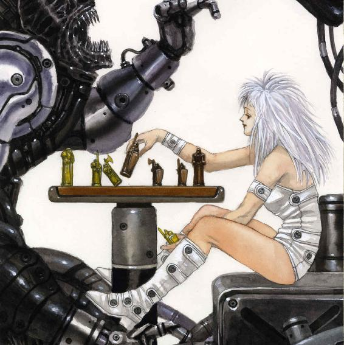
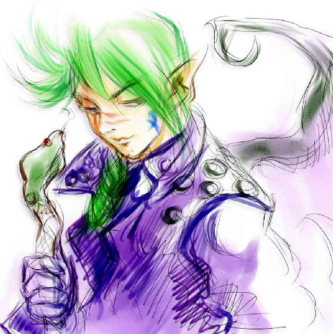
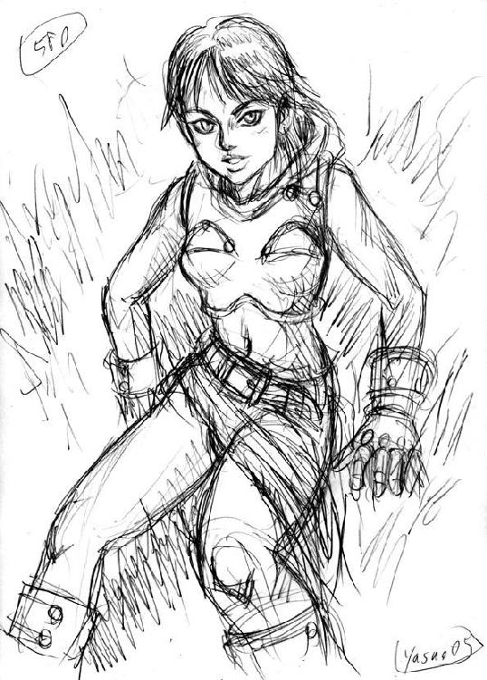
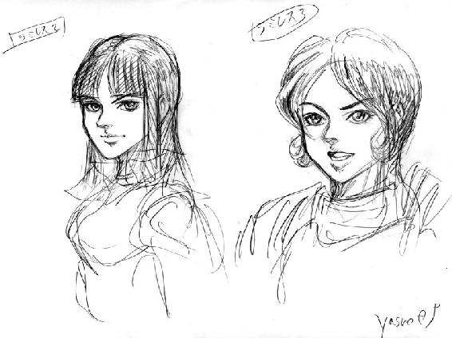
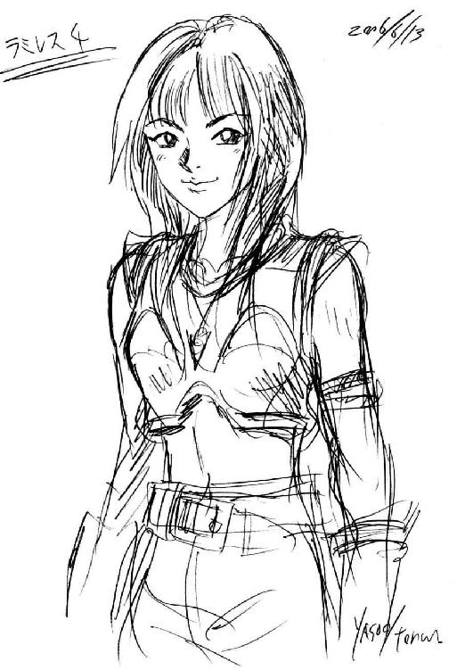

| 絶対に読みたいゲームブック40選 (幻想迷宮ゲームブック) | |
| 外城 わたる | |
| GENSOUMEIKYUU SHOTEN (2018) | |
幻想迷宮ゲームブック
外城わたる 編
ゲームブックの世界へようこそ！
本書はゲームブックという、ワクワクと胸躍るようなジャンルの作品を幅広く紹介する目的で企画されたガイドブックである。
メインパートは本書のレビュアー陣が入念な協議を重ねた末にお勧めする、過去から現在にいたるまでに出版されたゲームブックの名作、良作のレビューだが、それ以外にも読ませるコラムあり、お試しゲームブックあり、バラエティに富んだ内容になっている。
既にご存知の方には改めて説明するまでもないが、ゲームブックとは読者が物語の主人公と同じ目線に立って、シーンごとに提示される選択肢を選んで読み進めていく形式の書籍である。単純な選択肢分岐だけで成り立っている作品から、シミュレーションゲームのような複雑なルールを搭載した作品までそのスタイルは様々だが、手に取った本の中で読者は、剣や魔術に精通した勇敢な冒険者になったり、強大な力を持つロボットのパイロットになったり、あるいは難事件を解決する名探偵になったり......と、作品ごとに用意された様々な冒険を楽しむことが出来るのだ。
一九八〇年代に一大ブームを巻き起こしたこのゲームブックというジャンルには、当時と同じ紙の書籍の作品から、新時代のメディアである電子書籍というフォーマットで発表されたものまで、二〇一八年現在では幅広い作品が存在している。そして本書は、過去から現在に至るまでに制作・出版されたすべてのゲームブックの中から"コレぞ"という我々のオススメを紹介する、いわば独断と偏見に満ちた一冊とも言える。ゲームブックに精通された読者の中には「俺のベストワンが入ってない！」という方もいるかもしれない。そういう時は是非、あなたのベストゲームブックについて語ったレビューを幻想迷宮書店まで送って欲しい！
本書のコンテンツ掲載順序は作品レビューが冒頭にあり、コラムその他はその後に掲載している。もし、この本を手にとってくれたあなたが、ゲームブックに触れるのは初めてという人か、あるいは昔のブームを知っているけれど読むのは久しぶりという人なら、レビューを読む前に『過去・現在・そして未来──ゲームブックの歴史』という、ゲームブックの黎明期から現在の状況までを追ったコラムからお読みいただくと当時の空気を感じて（思い出して）いただけるんじゃないかと思う（太字部分をタップすることで、コラム記事に遷移します）。もちろん、ベテランのゲームブックファンでも、改めてその歴史をおさらいしてもらってもいい。あるいは新時代の旗手・波刀風賢治が用意した体験用ミニゲームブックから読み始めることだってもちろん可能だ。
「ゲームブックについてもっと知りたい！」
そんな方にとって、本書がその良きガイドになることが出来ていたら幸いだ。なお、本書全体を通して、著者、イラストレーターの敬称は省略させていただいたことを予め、ご了承願いたい。
さあ、準備はよろしいだろうか？
それでは──。
ページをめくりたまえ！
Chapter.1
［単体作品］レビュー30選
外城わたる
大井手附子
砥部 従士
青野 耕作
◆作品の選定にあたってはレビュアー4人でアンケートをとった結果から選出した。 ◆対象タイトルは2016年12月までの商業出版作品とする。 ◆クイズ・謎解きメインの作品は除外する（ナゾトキブック系、リアル脱出ゲーム系含む）。 ◆評価項目の見方。 ・物 語......ストーリーの完成度。展開の面白さ、情景描写の巧みさなど。 ・ゲーム......ルールや仕組みの巧みさ。複雑ならば高評価ではなく、物語と融合できているかどうかを評価する。 ・キャラ......登場人物の魅力。脇役も含む。 ・独創性......オリジナリティの高さ。システム、世界観「他にないものを作りたい」という発想がどれだけ感じられるか。 ・伝説度......作品の歴史的意義。「最初に〇×を成し遂げた」「知名度が高い」等、内容とは別に「知っておくべき理由」がある場合にこの数値で評価。 |
| ブラックオニキス・リビルド | ||||
|---|---|---|---|---|
| 鈴木直人著 一九八七年刊行 東京創元社（絶版） （『スーパー・ブラックオニキス』） 二〇一七年電子書籍配信 幻想迷宮書店 |
||||
| 物語 | ゲーム | キャラ | 独創性 | 伝説度 |
| 10 | 12 | 11 | 9 | 11 |
| 総得点 | 53 | |||
映画でも漫画でも大ヒットを飛ばした後の次作品がさっぱり売れないことがよくあるという。もちろんオカルトだし、事実だとしてもはっきりとした理由は誰にも分からない。だが、『ドルアーガの塔』シリーズでデビューし、その名を轟かせた鈴木直人の二作目にこの法則はあてはまらなかった。それが今回紹介する『ブラックオニキス・リビルド』だ。
東京創元社から発売された最初の版『スーパー・ブラックオニキス』は、コンピューターゲーム『ザ・ブラックオニキス』を原作としていたが、二〇一七年に配信された電子書籍版はオリジナル作品『ブラックオニキス・リビルド』としてリメイクされ、作品固有のモンスター名などが変更されている。とはいっても、もともと原作ゲームの内容に奇抜な要素はなく、ごく一般的なモンスターを倒しつつ、迷宮を探索するというものであったから、ルールやシステム面での変更はほとんどない。
物語の舞台はひとつの街全体で、主人公たちはその各所にあるダンジョンを攻略していくことになる。迷宮攻略という点においては前作『ドルアーガの塔』と同様、マッピングの楽しさも健在だ。しかし、焼き直しの感触は一切なく、この本で導入されている"パーティバトル"の概念や、時間の流れをプレイヤーの行動にリンクさせるシステムは非常に高い次元で"ゲーム"と"ノベル"の融合に成功している。
総項目数六〇〇は少ない数字ではないが、読んでいて感じるボリュームはそれ以上だ。フラグ管理によるパラグラフ効率はもはや洗練されたプログラムのようである。それでいて、決して無味乾燥な読み味ではない。ゲームとして効率よくプレイし、パーティを育成し、攻略すべき点はきちんとおさえねばならないが、物語を味わうための小説としての役どころは文章描写でしっかりと発露できている。
また、鈴木直人作品といえば、その特色として魅力的な登場人物が挙げられる。このブラックオニキスの主人公テンペストや仲間たちも非常に個性的で、読んでいて楽しいのだが、実はこのブラックオニキスには前作『ドルアーガの塔』に登場したオリジナルキャラも何人か登場している。リメイク版は、イラストレーターがドルアーガシリーズのイラストを担当した虎井安夫に変更されている。旧版イラストも良い出来だったので、ここは賛否両論あるかもしれない。しかし、同じキャラクターは同じ人に描いて欲しいという人には粋な計らいだったのではないだろうか。
そんな本作だが、その結末では次の冒険が示唆される記述があり、あとがきにもアドベンチャーシートを保管しておく指示が作者から出されている。旧版は元より、リメイク版でもそこに変更はなかった（それどころか、結末で与えられるボーナスに変更があるのだ）。続編が出ないまま三〇年が経過した今、それは絶望的だろうと諦観するのが大人の配慮かもしれない。しかし、それでももしかしたらと思ってしまう、出たらいいなと考えてしまう、それほどの魅力がある作品なのだ。（青野）
| 送り雛は瑠璃色の | ||||
|---|---|---|---|---|
| 思緒雄二著 一九九〇年刊行 社会思想社（絶版） 二〇〇三年刊行 創土社 |
||||
| 物語 | ゲーム | キャラ | 独創性 | 伝説度 |
| 12 | 8 | 9 | 12 | 11 |
| 総得点 | 52 | |||
かつて雑誌『ウォーロック』誌に掲載され、読者からの熱い支持を得て単行本化されて以降、半ば伝説化していた作品がこの『送り雛は瑠璃色の』である。当時としても他に類を見ない、和歌や民俗学的知識を総動員して描かれた"純和風"のゲームブックであり、また、読者の琴線に触れる美しい物語でもある。ウォーロック誌の読者投票でも常に上位をキープし続け、オリジナルの社会思想社版が絶版になった後も永らく復刊が待ち望まれていた。
地方都市の中学生"瞬（読者）"が体験する、ひと夏の怪異譚──本作を簡単に説明するならばこうなるだろうか？ しかし、そのように一言で語ってしまうことを許さない作品でもある。
物語は中学校の夏季補講に、クラスメイトの美少女"遥"が遅れて登場したところから幕を開ける。けだるい夏の空気の中、遥の唇を彩る鮮やかな紅──いつもと違うその姿に違和感を覚える、瞬とクラスメイトたち。友人の"カズ"をはじめとする登場人物達との、ジュブナイル小説のような軽い会話が目立つ導入部分を経て、物語は徐々にその様相を変えていく。
メインとなる自分の住む街を探索するパートでは、日中と夜でそれぞれ複数用意された探索箇所は時間の流れで表情を変え、読者は気になる場所を選択し、探索を進めることになる。主人公の瞬には一種の霊感が備わっており、訪れた個所ではその能力を用いて、何らかの情報を得ることが出来る。
途中遭遇する幻想的だが不可解な光景と、謎めいた和歌の数々。美少女"遥"の背後に隠された秘密とは？ 次第に見え隠れする、登場人物を取り巻く過去からの因縁とは何か？
ゲームブックとして書かれた作品ではあるが、本作にはゲームを"クリアする"という概念があまり感じられない。結末に至っても物語の明快な答えは用意されておらず、それはただ読者に投げかけられるだけだ。ゲームブックの構造を用いて描かれた、一種の実験的文学──そんな趣さえある。そこが肌に合わず、ゲームブックとしての本作を全く受けつけない読者もいるようだ。しかし、どうか先入観なしで一度手に取っていただきたい。日常と隣り合わせにある薄明りの世界のなかで感じる、胸を打つ切なさや寂しさ。萬葉の昔から続く、和歌に込められた呪いの意味。死者の魂を悼む想いの儚さ、恐ろしさ──本作に触れることで読者は、様々なことに思いをめぐらせるだろう。そしてそれは、貴重な読書体験になるに違いない。
社会思想社版の絶版から永い時を経て、本作は現在、創土社からめでたく復刊がなされている。社会思想社版に収録されていた、物語の前日譚となる『顔の無い村』は残念ながら創土社版には収録されてはいないが、両版共に後日譚の『夢草枕 歌枕』が収録されている。夢占いをテーマにしたこの作品は本作同様、和歌が重要なモチーフとして取り上げられており、短いながらも不思議な感動を呼び起こす作品に仕上がっている。（外城）
| シャーロック・ホームズ10の怪事件 | ||||
|---|---|---|---|---|
| ゲイリー・グレイディ、スーザン・ゴールドバーグ、レイモンド・エドワーズ著 各務三郎訳 一九八六年刊行 二見書房（絶版） |
||||
| 物語 | ゲーム | キャラ | 独創性 | 伝説度 |
| 9 | 12 | 9 | 11 | 11 |
| 総得点 | 52 | |||
実は、このレビューの初稿を入稿した段階で、編集部から待ったがかかった。本作は「クイズや謎解きをメインにしている作品は除外した（ナゾトキブック系、リアル脱出ゲーム系含む）」というレビュー基準に引っかかっているという指摘だ。
この基準は企画初期の段階で出版社側が明確にしていたもので、レビュアの立場としても納得していた。
分岐する小説というスタイルでゲームと書籍を融合させたものが原点となるゲームブックと、純粋に謎解きやパズルを楽しむことにウェイトを置いて、そこを精錬させていく過程で物語を追加してゲームブックの体裁を成した謎解きブックとは趣が異なる。どちらも楽しめる点で変わりはないが、後者では謎の質や、パズルのクオリティが重要なのであって、そもそもゲームルール的な完成度や、物語の内容など評価対象として無意味なこともある。
『ルネと不思議な箱』のように付加された物語も高い品質のパズルブックもあれば、シンプルな謎解き問題集もあって、どこまでを含めていいのか境界が曖昧だ。これらを同じベクトルで"採点評価"することはできない。そこで本書ではパズル的な本はレビュー対象からは外し、別項のコラムで紹介する手法を取っている。どちらも優れたアナログゲームブックでありレビュアとしては読者に知ってもらいたい作品であることに変わりはない。
話がそれたが、編集部の指摘は『10の怪事件』が、謎解きブックのジャンルであり、レビューではなく、コラムで紹介するべきではないのかというものだった。
１から順番にパラグラフ番号が振られた典型的なゲームブックではない。
パラグラフ末に選択肢があるわけでもない。
だがそれでも、本作はゲーム性とブック性を最高レベルで融合させた本項でレビューするべき作品なのだ。根底にあるのは高い物語性の追求であり、パラグラフ番号などが普通のゲームブックの体裁と違うのは単にユーザビリティを追及した結果にすぎない。さまざまな推理素材を挿絵でなく、実物付録としたのは少しでも臨場感を出そうとした製作者のこだわりゆえだ。本作は物語を楽しむゲームブックであり、それでいてガチ推理モノと表現しても差し支えない高いクオリティのミステリ小説なのだ（これを編集部に納得させるのが大変だった）。
ミステリ小説といえば、"読者への挑戦状"という定番要素がある。推理の材料を提示し、さあ真相を当ててみろというやつだ。これは、著者と読者がフェアに戦えるが、物語自体は一方的に読まされるだけという小説の特性上、推理の材料の提示は著者任せにするしかない。他方、ゲームブックのミステリ小説は証拠集めの段階から"自分で捜査してる感"を出せる。それでも物語の筋は既定されていることが多いため、普通の小説より面白い作品になるかどうかは結局作者の力量次第ではあるが......。
この作品は"本当に主人公（読者）に捜査の全権を委任し、自力で事件を解決させる"ことに成功している。だからこそ、この作品はいまだゲームブック史に燦然と輝き続けている（と私は考える）。 実際、普段はゲームブックを読まないミステリファンでさえ、10の怪事件だけは知っていたりするのだ。
ではどうやって、その"自力捜査感"を生み出したのか。
ロンドン市内の住所順に配置されたパラグラフ。そこを調査するために準備されたヴィクトリア朝時代のロンドン市街地図。
容疑者や情報源の人名からその住所を訪問するために作られた二〇ページに渡るロンドンの住所録。
そして事件の起きた当日のタイムズ紙（新聞）が一〇日分。
膨大な量の情報だけが、読者にただただ広く提示されている。どこから捜査を開始し、いつ解決したと判断するか、そのすべてが読者次第なのだ。
事件現場に駆けつけて、自らの目で手がかりを探してもいい。
スコットランドヤードに乗り込んで、忙しいレストレード警部から一通りの情報（と的外れな推理）を聞いてもいい。
馬車乗り場や酒場をうろついて、市井の情報を聞き込んでもいいだろう。
ときには新聞の片隅に書かれた、極々ささいな記事が大きな手がかりとなることもある。
すべての選択肢が、読者の前に提示されているのだ。これ以上のロールプレイング（なりきり）感はないだろう。
ヴィクトリア朝のホームズ世界を構築するために投入された作者の膨大な労力に敬意を評したい。ホームズ愛のなせるわざだ。無尽蔵の愛がなければ、なかなかここまではできない。そして、その情報量ゆえ、そこに確かにヴィクトリア朝ロンドンの息づかいを感じることができる。
馬車の車輪が石畳を叩く音、スモッグにむせぶ街灯のぼんやりした光、階段を駆け上がってくる警部の足音......。
ホームズ作品を多く翻訳している各務三郎氏の翻訳という意味でも、すべてのミステリファンとゲームブックファンに手にとってほしい一冊なのである。（大井手）
| パンタクル１ | ||||
|---|---|---|---|---|
|
鈴木直人著 一九八九年刊行 東京創元社（絶版） 二〇〇二年刊行 創土社 二〇一七年電子書籍配信 幻想迷宮書店 |
||||
| 物語 | ゲーム | キャラ | 独創性 | 伝説度 |
| 9 | 12 | 10 | 10 | 11 |
| 総得点 | 52 | |||
鈴木直人の出世作『ドルアーガの塔』シリーズに登場した魔法使いメスロンを主役にしたスピンオフ作品である。表題の万能章とは、二つの正三角形を組み合わせた六芒星という図形が描かれたマジックアイテムのことで、メスロンは魔法を行使する際にこれを必要とする。タイトルが示唆するように、いかに魔法を適切に使いこなすことができるかが、本作の肝となっている。
鈴木が『ドルアーガの塔』でデビューしてからたった四年だが、ゲームブックブームとしては既に終盤にさしかかっていた当時、これまで原作付きしかやらなかった鈴木直人初のオリジナル作品だった。
主人公は魔法使いということなので、剣は得意ではなく、力仕事も苦手である。ただし、魔法に関しては天才で、最初から多くの魔法が使える。むしろ、魔法を駆使しなければ、難所を切り抜けることは難しい。こう書くとスティーブ・ジャクソンの『ソーサリー！』にシステムが似ているように聞こえるかもしれないが、実態はまったく違う。
本作を象徴する、オリジナルの魔法システムは当時の読者を驚愕させた。メスロンが行使する魔法の種類はそれほど多くはない（冒険開始時で一五種類）。しかし、なんと作品中のほぼあらゆる場所であらゆる魔法を使うことができるのだ。単純な掛け算をしてみてもらいたい。仮に魔法が使える場面が五〇個あったとして、一〇種類の魔法を自由に使っていいとしたら、その結果を参照するパラグラフは五〇×一〇で五〇〇個必要になるはずである。電子書籍ならばまた話は別だが、ページ数の限られた紙書籍でそんなことは実現不可能だ。だから例えば『ソーサリー！』には五〇種の魔法が存在するが、一場面で使える魔法は五種に制限され、そもそもどこでも魔法が使えるようには設計されていない。
鈴木直人はその時点でのメスロンの使用可能な全ての魔法、及びそれを使用した際に飛ぶパラグラフ番号を記した一覧表を書籍から切り離すことで、結果を参照するに必要なパラグラフ数を極限まで軽減し、一冊の本の分量に収まるまでコンパクトにまとめることを実現したのだ。ゲームブック界に"画期的"はそこら中にあるが、画期的オブナンバーワンとはこのパンタクルシステムだと個人的に思う。
ただし、あらゆる場面で好きな魔法を使えるとはいえ、与えられた魔力はさほど潤沢ではなく、考えなしに適当な魔法を使っていると、すぐに魔力が枯渇してしまうだろう。あるいは、間違った魔法を選択すれば、窮地に陥ったりすることもある。天才魔法使いはアタマが良くなければつとまらないのだ。
もうひとつ鈴木作品として忘れてはいけないのが迷宮だ。前作ブラックオニキスでも新しいギミックの迷宮を考案した鈴木だが、このパンタクルでは鬼門石窟という立体迷路を登場させている。実際に体験してもらいたいので詳細は伏せるが、マッピング熟練者でも一筋縄ではいかない歯ごたえある代物となっている。これで総パラグラフ数五〇〇なのだから、驚異的としか言いようがない。
鈴木直人作品同士を比較したとき、知名度では『ドルアーガの塔』シリーズや『ブラックオニキス』に譲るこの『パンタクル』だが、そのクオリティの高さ、内容の濃さでは、両作品を凌いで本作こそがナンバーワンだと主張するファンも少なくない。現在は電子書籍化もされ、入手は容易になった。ゲームブックファンを自称しながら未読であるならば、絶対に読んでおくべき名著である。（青野）
| 展覧会の絵 | ||||
|---|---|---|---|---|
| 森山安雄著 一九八七年刊行 東京創元社（絶版） 二〇〇二年刊行 創土社 二〇一六年電子書籍配信 幻想迷宮書店 |
||||
| 物語 | ゲーム | キャラ | 独創性 | 伝説度 |
| 11 | 8 | 9 | 11 | 12 |
| 総得点 | 51 | |||
本作は記憶を失った吟遊詩人の"あなた"（読者）が十枚の絵画の世界を彷徨いながら、自分の正体と、自分が本来居るべき世界へ戻る手がかりを探す冒険を描いたゲームブックだ。主人公が吟遊詩人ということで、剣の技をもって難局を切り抜けていくといった類型的なファンタジーゲームブックの定石とは異なり、読者は"魔除け、和解、戦い"と、効果別に用意された三種類の魔法の旋律を琴で奏でることで難局を打開していく事になる。その独創性もさることながら、あるときは牧歌的な、そしてまたあるときは荒涼とした幻想的な光景のなか、途中で出会う様々な人物とのやりとりを経て、数々の謎が少しずつ明らかになっていく過程は実に筆致巧みで、ナチュラルに読者を物語に引き込む。
魔法の旋律の使用回数の制限が厳しいことなどもあり、作品全体を覆うその柔らかな雰囲気とは裏腹にゲームブックとしての難易度は低くはないのだが、恐れずに挑戦していただきたい。物語の結末で読者を待ちうけているのはゲームブック史上最も人間的で暖かな感動だ。『展覧会の絵』という楽曲が制作された裏に秘められた、そのあまりにも切ない逸話は、読者の心に深い余韻を残すに違いない。ゲームブックの最大の特色は読後感なのだ。名作と呼ばれるゲームブックは多々ある。が、本作の様に読後の余韻の心地よさが何年たっても色褪せないのは稀だ。
ゲームブックとは、ゲームでもあり、ブック／小説でもあるという独特の表現形態を持つジャンルだ。作者の意向次第でそれはゲーム寄りであったり、ブック寄りであったり、ある程度の偏りを見せるが、本作は確実にブック寄り――情景描写や文章叙述に重きを置いた作品である。作者の森山安雄は後年、東京創元社から『水の中、光の底』という短編集を著しているので、彼の文が気に入った方はそちらも読まれてはいかがだろうか？
実在する楽曲をモチーフにして物語を書くという難事に挑戦し、ただでさえ制作が困難なゲームブックを感動的な逸品として仕上げてしまった裏には、本作のモチーフとなるムソルグスキーの組曲『展覧会の絵』に対する作者の大いなる愛情があったと個人的に思う。
二〇一四年にこのゲームブックはスマホアプリゲームとして配信されたことがあった。そのＢＧＭとして、組曲『展覧会の絵』が採用されていたのだが、なんとその楽曲データを制作提供していたのは森山本人だったというから驚きのマルチタレントぶりである。彼は作家であると同時に芸術家だったのだ。
ゲームブックとしての独創性と、物語としての魅力。その双方において高い完成度を誇る本作は、初版の発売から今に至るまで多くの読者に支持され、二〇一八年現在では紙の書籍及び電子書籍として堂々たる復刊を成し遂げている。ファンタジーゲームブックの王道とは言えないものの、ゲームブックを読むのが初めての読者にも自信をもってお勧めできる名作であることは間違いない。（外城）
| ネバーランドのリンゴ／ニフルハイムのユリ | ||||
|---|---|---|---|---|
|
林友彦著 一九八六年／一九八七年刊行 東京創元社（絶版） |
||||
| 物語 | ゲーム | キャラ | 独創性 | 伝説度 |
| 9 | 10 | 11 | 10 | 11 |
| 総得点 | 51 | |||
ゲームブックブームを彩った作品は数多いが、その中から当時、『世界最大のゲームブック』という謳い文句で出版された大作二部を紹介させていただこう。それぞれ総パラグラフ数一〇〇〇という驚異的なボリュームと、西洋のおとぎ話めいた独特の雰囲気でもって提供される冒険物語の魅力は、出版から永い時を経た今でも語り草となっている伝説の名作である。
まず特筆すべきは、両作品共に"主人公が三人用意されている"という、まるでコンピューターゲームを意識したような興味深いシステムが搭載されている点だ。つまり二回までなら死んでもゲームオーバーにならないということなのだが、デッドエンドに遭遇した場合、最初からやり直しになることがほとんどのゲームブックにそのような試みを持ち込んだ点は実に画期的だった。コンピューターゲーム的で面白いというだけではなく、デッドエンドも少なくないこの長大な冒険から読者の手を離させない為の、実に上手いやり方でもある。
また、いわゆる"双方向移動型"の構造が全面的に採用されており、これにより読者は、作品を構成する地図上を縦横に移動して、途中で遭遇する魅力あふれるキャラクター達と交流したり、戦ったり、あるいは恋を語らったり......と、高い自由度のもとで起こるさまざまなイベントを楽しむことができる。個々のイベントは"キーナンバー"と呼ばれるフラグで管理され、時系列的な矛盾が起こらないようになっているのだが、本二部作のように長大な作品の制作でそれをやるのは相当な労力がかかっただろうと推測される。破綻なく見事に仕上げてしまうあたりは、コンピュータープログラミングに精通していた林ならではだろう。
このように大きな特徴を持つ両作品だが、出版から三〇年を経た今思い返すと、最大の魅力はそういったシステムの部分にあったのではないような気がする。それよりも読者の心に深く刻まれるのは、その少し霞がかかったような幻想的な空気が醸し出す独特の世界観だ。
柔らかい『です、ます』調の丁寧な文章が作品全編を水彩画のように彩り、その優しげな空気とは裏腹に、選択を誤るとあっけなくシチューの具にされて食べられてしまうなど、文体とギャップのある残酷な場面も数多く用意されていたりする。のどかな優しさと、おとぎ話めいた残酷さが同居する奇妙な世界──それは、数多く存在する国産のファンタジーゲームブックの中でも唯一無二のものだと思う。加えて、随所に差し挟まれる西尾誠と米田仁士の手による挿絵も魅力的で、作品世界の雰囲気作りを絶妙にサポートしていたことも特筆すべき点であろう。
『ネバーランドのリンゴ』では、春めいた牧歌的な景色の中で、続く『ニフルハイムのユリ』では凍てつくような冬の景色の中で、一筋縄ではいかない困難な冒険があなたを待っている。何処かに存在する稀代の名刀カレードウルフを探しだし、（よくさらわれる）ヒロインの美少女エスメレーの祝福のキッスを受けようではないか！
独自の世界観に彩られた魅力的な冒険物語──後世に残すべき名作である。（外城）
| ドラキュラ城の血闘 | ||||
|---|---|---|---|---|
|
ハービー・ブレナン著 一九八九年刊行 二見書房（絶版） 二〇一〇年刊行 創土社 |
||||
| 物語 | ゲーム | キャラ | 独創性 | 伝説度 |
| 9 | 10 | 11 | 11 | 9 |
| 総得点 | 50 | |||
『ドラキュラ城の血闘』は、ブラム・ストーカーの有名すぎるホラー小説『ドラキュラ伯爵』をモチーフにしたゲームブックで、かのヘルシング教授とともに吸血鬼と噂されるドラキュラ伯爵の住む城に乗り込むというストーリーとなっている。ただし、モチーフにしているだけでこちらはホラーどころかコメディである。リアル志向の挿絵も一見ホラー作品と思わせるが、そう思わせること自体が挿絵画家の罠なのだろう（知らないけど）。
著者はドラゴンファンタジーでお馴染みのブレナン（実はブレナンもストーカーと同じくアイルランド人なので、ドラキュラ伯爵は彼の地元の英雄でもあるのだ）。挿絵はドラゴンファンタジーのフーゴ・ハル。翻訳者はドラゴンファンタジー（の第三巻などを担当した）高橋聡。つまり、抱腹絶倒ドラゴンファンタジーのスタッフがそのまま手掛けたのが本作なのである。そのせいか、二見版も創土社版も装丁がかなりドラゴンファンタジー（グレイルクエスト）に酷似しているが、同シリーズではない。こちらの作品にアーサー王やマーリンは出てこないので注意されたし。
もっとも、しゃべる剣が出ずとも、ブレナン自身もドラゴンファンタジーの番外編的なつもりで執筆したみたいで、モンティパイソンばりのブラックユーモアや、"ゲームブックの常識なんかクソ食らえ"と言わんばかりの破天荒さはそのまま受け継がれている。したがって、ドラゴンファンタジーのノリを予想して購入した読者の期待を裏切ることはないだろう。どうみてもあの有名人にしか見えない登場人物が次から次へと登場し、主人公に無理難題を押し付けたり、意味不明な発言をしたり、本に向かっておいおいとツッコミを入れたくなる笑い満載の作品となっている。
一応、お城を探索するということで、ダンジョン探索ゲームの体を成していて、付属のマップなんかもある（マップですら笑いのネタにされている）が、さほど複雑な構造ではないのでマッピングも不要だし、難易度も高くはないだろう。
どうもブレナンは死（ゲームオーバー）という概念に思い入れがあるようだ。本作では、吸血鬼に血を吸われて吸血鬼になってしまうことを単なるゲームオーバーにしたくなかったらしい。じゃあどうなるのかというと、吸血鬼になったら人間の敵としてかつての仲間を襲う側になる。浄化されて人間に戻るとまた吸血鬼を狩る側になる。ハチャメチャである。よくもこんなルールを思いつくものだと思うが、この仕組みが本作をとても面白くしている要素なのだ。
難易度の高いバランスが絶妙なゲームをガチ攻略したいという人には向かない。しかし、肩の力を抜いてニヤニヤ笑いながら秋の夜長のおともにするにはうってつけの作品だ。
今でも、二〇一〇年に刊行された創土社の復刊版が書店で普通に買える（二〇一八年12月現在）ので、是非ご一読を勧める。ドラゴンファンタジーもそうだが、ブレナン作品は地図とか、折り紙とか、付録が付いているものが多くて、電子書籍化すると内容的にグレードダウンしてしまいそうなタイトルが多いので、こうして復刊して絶版にもせず売り続けてくれる出版社の存在は本当にありがたい。末永く応援したいものだ。
余談だが、この『ドラキュラ城の血闘』は単発作品ではなく、『ニュー・クラシックホラー』という全二巻のシリーズの第一巻にあたり、第二巻に『フランケンシュタインの呪い』という作品が存在する。しかし、二見がゲームブックに力を入れていた頃からそれが翻訳されそうな気配は一切なかった。編集部にあまり面白くないと思われたのだろうか。（青野）
| バルサスの要塞 | ||||
|---|---|---|---|---|
| スティーブ・ジャクソン著 浅羽莢子訳 一九八五年刊行 社会思想社（絶版） 二〇〇五年刊行 扶葉社（絶版） |
||||
| 物語 | ゲーム | キャラ | 独創性 | 伝説度 |
| 9 | 10 | 10 | 10 | 11 |
| 総得点 | 50 | |||
『火吹山の魔法使い』に続く、社会思想社のファイティングファンタジーシリーズ（以下、ＦＦシリーズ）の第二弾である。前作の基本ルールに、新たに"魔法"という魅力的な要素が追加された本作は、シンプルな迷宮探索だった前作とは一転、剣の技と魔法の力を用いて悪の親玉を打ち倒すという、まさにファンタジーゲームの王道が展開されている。
世界征服を企む、悪の妖術使いバルサス・ダイア。読者は勇気と野心に満ち溢れた駆け出しの魔法使いに扮して、バルサスの野望を打ち砕くべく、単身敵の居城に潜入することになる。今作での追加要素である、"怪力"や、"愚者の黄金"など、想像力をくすぐるようなネーミングがほどこされた魔法の数々は、決して無制限に使えるわけではない。したがって、使用回数が限られた魔法をどのタイミングで用いるか？ あるいは剣の技に頼るべきか？ それとも、何か他の手段で切り抜けるべきか──読者に与えられる選択肢は様々だ。そして、これは非常に困難な冒険である。おそらく読者は挑戦を何度も繰り返すことになるだろう。
しかしながら本作は、魔法の存在や、その難易度の高さだけが魅力となっているわけではない。作者スティーブ・ジャクソンの筆は前作以上に冴えわたり、様々な異形の存在を描いたその臨場感は比類ない。途中遭遇する妖怪たちもどこか人間臭いヤツが多く、単純に戦って倒すだけが手段ではなく、舌先三寸のハッタリや、あるいは、冒険の最中に手に入れた品物を贈ってみたりすることが意外に有効だったりもする。個々で紹介するのはネタバレにもなるなど読者の興を削ぐ結果になるので言及することは避けるが、そんな異様にひねくれた個性を持つ妖怪変化とのやりとりもまた、本作の魅力のひとつである。
砦の深部に進むにしたがって、遭遇する妖怪の危険度は増していく。読者にトラウマばりの無力感を強烈に与えるガンジーや、六つ首のヒドラとの遭遇を切り抜けた先で出会う砦の主バルサス・ダイアとの鬼気迫る一騎打ちは本作の最大のクライマックスだ。まともにぶつかってもほぼ勝ち目はないだろう。知恵を絞って、なんとか打ち倒していただきたい。冒険が成功したあかつきにはきっと、本当に自分が一仕事を成し遂げたような満足感に包まれるだろうから！
本作が翻訳出版されてから、既に四半世紀が経過してしまった。しかし、『火吹山の魔法使い』と並び、ファンタジーゲームブックの金字塔を打ち立てたその魅力は未だに色褪せることがない。
社会思想社版も、後に扶桑社から表紙イラストも新たに復刻された版のどちらも二〇一八年現在では絶版だが、中古での入手はそれほど困難ではない。（外城）
| モンスター誕生 | ||||
|---|---|---|---|---|
| スティーブ・ジャクソン著 安田均訳 一九八八年刊行 社会思想社（絶版） | ||||
| 物語 | ゲーム | キャラ | 独創性 | 伝説度 |
| 10 | 10 | 9 | 11 | 10 |
| 総得点 | 50 | |||
"君はモンスターだ"。
本作の設定の特異さを一言で表すとこうなるだろうか？
ＦＦシリーズの第24作目『モンスター誕生』では、主人公はなんと得体のしれない怪物（モンスター）なのである！ 逆転の発想とでも言うべき衝撃的な設定だ。また、本作は冒険の目的が明確だったこれまでのＦＦシリーズとは異なり、冒頭から主人公の目的など何も分からないという、五里霧中の状況から話が進んでいく。
初めに"トロール牙峠の伝説"と題された長い文章が作品の背景として語られるのだが、そこには主人公である"君（読者）"の目的などは一切書かれていない。そして物語が幕を開けた早々、"君"は、不意に人型の生き物（ドワーフ）と出会うのだが、敵意がないことを示そうとしても、結果的にその相手を殺してしまうなど、読者の思惑とは全く別に本能のまま動き出してしまう。
このように、これまでのゲームブックの定石を覆すような展開を見せる本作だが、難易度もスティーブ・ジャクソンの作品の中で最も高い。選択肢の僅かなミスも致命的だし、パラグラフに仕込まれた仕掛けも意地悪なことこの上ない。また、難易度や設定の意外性だけではなく、費やされている文章量や項目数も従来のＦＦシリーズより多く、一つの物語としても非常に読み応えがある。そのことからも、作者が本作に最高の物語性とゲーム性を詰めこみ、作品として極めて高いものを提供しようとしたことが伺える。物語の後半では張り巡らされた伏線が回収され主人公の出生の謎が判明していくのだが、その過程で感じる驚きを、ゲームブックファンなら是非味わっていただきたい。
本作のように主人公（読者）が怪物となって冒険を行うというユニークかつ衝撃的な設定は、ゲームブック作家である山本弘の『モンスターの逆襲』でも見られる趣向だ。しかし、あちらは展開が明確であり、読者の意思も素直に反映されていくなど、同じようにモンスターが主人公の作品であっても、作品全体にどこか人間臭さを感じることが出来るのに対し、本作は怪物としての得体の知れなさ、不気味さが核になっており、趣は随分と異なる。読者の意に沿わずに動き出す怪物性を抱えている"君"というのは、ゲームブックとして斬新すぎる面白い設定であり、本能に任せて行動する怪物の様子がたっぷりと体験できるであろう。
怪物として生を受けた"君"は途中で様々な相手に遭遇し、多くの秘密に触れていく──それが冒頭に記された長い背景説明と徐々に重なり合い、物語の全容が明らかになっていく過程はゾクゾクするような興奮を伴うのだが、ここで全てを語るのは止めておこう。是非とも実際のプレイで確認して欲しい。
このように、本作はスティーブ・ジャクソン渾身の、そして会心の一作である。しかし、非常に中身の濃い作品である反面、難易度が高すぎて取っ付きが悪いのは残念な所かもしれない。現在では入手難易度は極めて高いものの、手にされた幸運な読者諸兄は、是非最後まで読み進めていってほしい。（砥部）
| 火吹山の魔法使い | ||||
|---|---|---|---|---|
| スティーブ・ジャクソン著 浅羽莢子訳 一九八四年刊行 社会思想社（絶版） 二〇〇五年刊行 扶桑社（絶版） |
||||
| 物語 | ゲーム | キャラ | 独創性 | 伝説度 |
| 9 | 10 | 8 | 11 | 11 |
| 総得点 | 49 | |||
『火吹山の魔法使い』は、社会思想社が翻訳出版したＦＦシリーズの、記念すべき第一作目である。と同時に、本作の出版がゲームブックというジャンルを確立する為の、偉大なる第一歩ともなった。
しかしながら本作は、後のゲームブックで多く見られるような、世界征服を狙う邪悪な魔王を倒すといった類の壮大な作品ではない。剣の技を頼りに生きる冒険者が一攫千金を狙う迷宮探索──ゲームブックとしては、テーマも構成もシンプルである。
強大な力を秘めた魔法使いが支配する火吹き山。そこには莫大な財宝眠ると噂されており、読者（主人公の"君"）は山の内部に広がる危険な迷宮を、財宝を目指して探索することになる。サイコロ二つと筆記用具を用意すれば楽しめるという、非常に合理的なゲームルールが採用されており、これがその後のＦＦシリーズのみならず、翻訳、国産問わずその後に大量に出版されることになる作品群の良質な手本になった。また、特筆すべきはルールだけではない。冒険の途中に遭遇することになる、高いリアリティを伴って生き生きと描かれる怪物たちの姿や、迷宮内部のめくるめくような描写──作者スティーブ・ジャクソンの才気あふれるその筆は、読む者に忘れがたい、強烈な読書体験を与えてくれる（このあたりは次作『バルサスの要塞』において、圧倒的なレベルで再度、読者に提示されることになる）。加えて言うなら、各場面に効果的に配置されたイラストの効果もまた素晴らしいものだった。緻密に描かれた異世界の情景──それは読者の心を別世界にいざなうものだった。
コンピューターゲームがまだ一般にはそれほど手軽なものではなく、また、刺激的な娯楽が現代よりも少なかった時代に、『火吹山の魔法使い』が瞬く間に人々を虜にしたであろうことは想像に難くない。本国イギリスでも二五万部を超え、翻訳版の本作はここ日本でも大ヒットとなった。そしてその衝撃波が、ゲームブックというジャンルをすさまじい勢いで推し進めていく原動力にもなった。
初版の出版から三〇年以上が経過した今、とかく本作はゲームブックの原点という視点のみで語られがちである。しかし、緻密に計算されたゲームバランスや、硬質ながら表情豊かな文章（訳者の故浅羽莢子の名訳も素晴らしい）、それらが織りなすワクワクするような冒険体験──それは一つの作品としても、圧倒的な完成度を誇っている。
社会思想社版及び、表紙イラストも新たに復刻された扶桑社版のどちらも絶版状態なので、手軽に入手できる電子書籍化が待ち望まれる。（外城）
| モンスターの逆襲 | ||||
|---|---|---|---|---|
| 山本弘著 一九八八年刊行 社会思想社（絶版） |
||||
| 物語 | ゲーム | キャラ | 独創性 | 伝説度 |
| 10 | 11 | 8 | 11 | 9 |
| 総得点 | 49 | |||
『モンスターの逆襲』は、故郷の地下迷宮を四人の冒険者に荒らされ、一族を皆殺しにされたゴブリンの"君（読者）"が、ゴブリン一族の秘宝である十二個の黒いヒスイの不思議な力により段々と強力な怪物に進化を遂げながら、復讐を果たす物語である。
人間が主人公となり怪物と戦っていくという一般的なファンタジーゲームブックの定石を逆手に取り、退治される側の怪物が人間に復讐していくという、攻守の立場・目線を変えた物語は斬新である。また、魔法の黒いヒスイの力により、どんどん主人公が進化し、強化されていくという本作のシステムはゲームとしても、そして物語を綴るうえでも非常に興味深い。
例えば主人公が人間であれば、レベルアップやアイテムの入手等で強化されていくのが一般的だろう。しかし本作では主人公が狼人間やヴァンパイア、サラマンダーやサイクロプス等の強力な怪物に段階的に進化を遂げ、強化されていく。（選択ミスによっては稀に弱くなることもある。現在の身体との相性の関係で、進化し間違えてがっかりするのは御愛嬌か？）
ゴブリンという、ゲーム的には最底辺に位置するような種族からスタートし、段々と強力な怪物に進化していくカタルシスは本作の真骨頂だ。しかも、単に数値的に強くなるというだけではなく、進化することが出来る怪物の中には特殊な能力を持つものもいて、火を噴いたり、麻痺させたり、相手のエネルギーを吸ったり......と、普通は敵からやられるような行為が自分でできるようになる。とはいえサイコロを用いる戦闘システム自体はシンプルなもので、上記の様な興味深い趣向とは裏腹に手軽に遊ぶ事ができるのも好印象だ。
人間に対する復讐譚──そんな本作だが、主人公の怪物性の表現は最小限にとどめられているし、復讐対象は憎むべき悪党だったりするので、読後感が意外にさわやかな仕上がりになっているのが面白い。復讐の対象となる四人の冒険者の組み合わせは、戦士・盗賊・僧侶・魔法使いと基本を押さえており、そういう部分でもＲＰＧのお約束を逆手に取った作品であることを意識させてくれる。こういうところにも山本弘の優れたバランス感覚が感じられる。山本のゲームブック作品は複数あるが、題材の工夫とお遊び精神が同居し、それでいて丁寧に仕上げられているものが多い。
現在は入手困難な本作品ではあるが、手にされた際には何度も進化を試して、色々な怪物になって欲しい。（砥部）
| ウルフヘッドの誕生／ウルフヘッドの逆襲 | ||||
|---|---|---|---|---|
| 林 友彦著 一九八九年刊行 東京創元社（絶版） |
||||
| 物語 | ゲーム | キャラ | 独創性 | 伝説度 |
| 10 | 11 | 9 | 10 | 8 |
| 総得点 | 48 | |||
『ネバーランドのリンゴ／ニフルハイムのユリ』や、残念ながら本書の選からは漏れたが『ガルシアの髑髏』などの名作群でその名を轟かせた林友彦が、ブームも末期にさしかかった一九八九年に発表した、二巻に渡る壮大な冒険を描いた大作がこの『ウルフヘッドの誕生／逆襲』である。
主人公は、母なる大地が生み出した半人半獣の魔物ウルフヘッドである。本作は恐るべき力を持つ巨大狼と人間の姿を使い分けることが出来るこの魔獣が、亡国の王女スミアと共に魔王グリーディガッドを打ち倒すまでの冒険を描いている。
これまでもその緻密な作品と、独特の筆致による幻想的な世界観の創出で高い評価を得ていた著者だが、今までに培われたゲームブック制作の能力をこれでもか！ とばかりに全面開放、最高傑作と呼べる作品を我々ゲームブックファンに突き付けてきた。それはまさに、"林友彦が牙をむいた！"という表現が相応しいだろう。
どこか牧歌的な雰囲気を湛えていたこれまでの作風はここに来て一変、殺伐とした緊張感が作品全編にみなぎっているうえ、難易度やゲームシステムの複雑さも過去最高レベルとなっているのだ。著者が本作に注いだ労力は相当なものであろう。
物語の途中で仲間になるキャラクター達（"フェロウトラベラー"と称される）は主人公同様に個々に能力値を振られており、ゲーム中の全ての処理を読者が行わなければならない。そのシステムはまるでＴＲＰＧさながらの複雑さであり、ゲームブックに搭載するものとしては限界ギリギリのラインを要求している。その為、ゲーム冒頭に"オリエンテーション"と題された項目を設け、物語冒頭の進行と並行して読者に丁寧にゲームシステムを学ばせるなどの仕掛けが施されているのだ。コンピューターＲＰＧでよく見られる"チュートリアル"に相当する部分なのだが、かつてゲームブックでそれをやった者がいたのには驚きだ。
もちろん、ゲームシステムだけが本作の魅力ではない。丁寧に構築された幻想的で雄大な物語は、人間、妖精、怪物達が入り混じった様々なドラマを織り交ぜながら、結末までじっくりと読者を楽しませてくれる。主人公が人間／狼のいずれかで展開の異なるイベントなどを、ネバーランドシリーズでおなじみのキーナンバーシステムで確実にコントロールしながら、合計一〇〇〇パラグラフに渡る長大な冒険を破綻なく構築するその手腕には脱帽である。
読者は用意された広大なマップ上を自由に行き来しながら、様々なイベントを経てキャラクター達を成長させ、待ち受けるラスボスを追い詰めていく。その行程は決して楽ではないが大変に面白く、結末までたどり着いた読者は良質なコンピューターＲＰＧを一本攻略したのに匹敵する満足感を得ることが出来るだろう。
ゲームブックブーム後期にはルールの複雑化が進み、上級者には喜ばれても初心者にはとっつきにくいと思われる作品が増えていったのは事実だし、それがこのジャンルの寿命を早めたという説もある。しかし本作は、そんな考察をものともしない魅力に満ち溢れている。
はやいとここの名作を絶版状態から救いだし、まぶしい朝日を拝ませてやりたいものだ。それまで待てないという読者は、頑張って中古を探してみるといいだろう。二〇一八年現在、古本市場での入手はそれほど難しくない。（外城）
| 地獄の館 | ||||
|---|---|---|---|---|
| スティーブ・ジャクソン著 安田均訳 一九八六年刊行 社会思想社（絶版） 二〇〇九年刊行 ホビージャパン（絶版） （『ハウス・オブ・ヘル』デジタル・メディア・ラボ訳） |
||||
| 物語 | ゲーム | キャラ | 独創性 | 伝説度 |
| 9 | 9 | 8 | 10 | 10 |
| 総得点 | 46 | |||
嵐の深夜。
不可解な事故に巻き込まれ、主人公の"君"がたどり着いたのは不気味な洋館──そこは邪悪と恐怖の渦巻く恐るべき場所だった。どうにか生き延びて、ここを脱出することは出来るだろうか？ それとも、新たなる犠牲者となってしまうのだろうか......？
このように、まるで八〇年代のホラー映画のような筋書きの『地獄の館』は、社会思想社のＦＦシリーズ第十作目として発表された。このシリーズにしては珍しく、現代を舞台にした作品であると同時に、凶悪なまでの難易度を誇る作品としても有名である。
基本のゲームルールはこれまでのＦＦシリーズのものを踏襲しているが、本作ではもう一つ、新しく付け加えられたルールがある。それが"恐怖点"である。脱出行の最中には、悪意に満ちた様々な仕掛けに加えて、この"恐怖点"という特殊ルールが主人公を苦しめることになる。身の毛もよだつような体験に遭遇すると"恐怖点"は加算されていき、許容の限界値を超えると、主人公は発狂死してしまうのだ。この値が増えていく過程はそれぞれのシーンの恐ろしい描写も相まって、読者の不安をジワジワと煽ることになるだろう！ しかし、道は必ずあるはずだ。幾度となく悲惨な終末を迎えたとしても、あきらめずに脱出を目指していただきたい。
後年、ホビージャパン社のＨＪ文庫Ｇレーベルより『ハウス・オブ・ヘル』が発売された。これは社会思想社版の『地獄の館』と原作は同じなのだが、一見するとまるで別の作品のような印象を受ける。社会思想社版は、主人公である"君"は作中ではっきりとは描かれておらず、読者が想像した人物像で挑戦できる。一方のＨＪ文庫版では、主人公は日本人の女子高生のマキという設定に変わっており、挿絵でもマキの衣類が乱れる場面が意図的に挿入され、また、物語の導入と結末という重要な箇所ですらも主人公の変更に合わせて変えられてしまっているのだ。興味深い試みではあるものの、主人公像を固定し、美少女という萌え（？）記号を前面に押し出した印象のある作品作りには、受けつけない読者も出てしまうかもしれない。
とはいえ、作品の全編を覆う不気味な雰囲気などは変わっておらず、恐怖を題材にした作品という線を外してはいないし、その変更部分に魅力を感じる読者もいるだろう──ただ、この路線で行くなら本文の主人公の呼称を二人称"君"から三人称に変えてみる等、もっと大胆に変更しても良かったのではないか？ と、筆者などは愚考する次第なのだが。
このように、『ハウス・オブ・ヘル』は"萌え"の要素など、現代日本の風俗を取り込んだゲームブックの在り方の一つとしては（賛否両論あるだろうが）意外に面白い仕上がりとなっている。
今後も過去の名作のリメイクが制作されることはあるだろうが、どこまで基本路線を崩して変更点を作るか？ それが興味の対象の一つとなるかもしれない。（砥部）
| 死の罠の地下迷宮 | ||||
|---|---|---|---|---|
| イアン・リビングストン著 喜多 元子訳 一九八五年初版刊行 社会思想社（絶版） 二〇〇八年初版刊行 ホビージャパン（絶版） （『デストラップダンジョン』デジタルメディアラボ訳） |
||||
| 物語 | ゲーム | キャラ | 独創性 | 伝説度 |
| 8 | 10 | 9 | 9 | 10 |
| 総得点 | 46 | |||
社会思想社から翻訳出版されたＦＦ作品では、ある作品の冒険の舞台をもう一度使って別の作品が書かれることは殆んどない。しかし本稿で取り上げるＦＦシリーズ第六作目『死のワナの地下迷宮』と第二十一作目『迷宮探検競技』（一九八七年初版発行）の二作品は、ファングの町の危険な地下迷宮を共通の舞台としている。異例のことだが、それだけこの危険な地下迷宮は作者のリビングストンにとっても、そして、読者にとっても魅力的だったのだろう。
ファングの町では毎年、ある催しが開催される。それは迷宮探検競技──領主のサカムビット公が手掛けた危険な地下迷宮に、我こそは！ と勇む挑戦者たちが名誉と莫大な報酬を求めて命がけでクリアを目指すという過酷なレースである。両作品ともに異様な熱気に湧くファングの町で開催されるその競技の模様を描いているのだが、作品ごとに主人公の置かれる立場は異なっている。
第一作目の『死の罠の地下迷宮』では、主人公は腕利きの剣士として、自ら望んでこの地下迷宮に挑むことになる。一方の速編『迷宮探検競技』では、主人公は奴隷として強制的にファングの地下迷宮に挑むことになるのだ。そうした違いはあるが、両作品ともにゲーム自体はシンプルな迷宮探索ものである。しかし、どちらの作品もその難易度は半端なものではない。
パズル性のある謎解きや必須アイテムの収集も大変なのだが、数値的な能力の高さだって求められる。ゲーム開始時点でのサイコロ運が悪いと、その段階ですでに敗北が確定しているといっても言い過ぎではないくらいだ。筆者などは『迷宮探検競技』では技術点12という最強のキャラクターで挑んだのだが、それでも戦闘で敗北してしまう体たらくだ（おのれ、コールドクロー！）。
それから、両作品ともに単なる迷宮探索にとどまらずに、物語性もきちんと備えている部分もまた特筆すべきであろう。人の手による地下迷宮だけあって、迷宮内に競技監督がいて試験を行う等のイベントも面白いし、数々の競技ライバル達（特に、『死の罠の地下迷宮』での蛮人スロム）との友情で心温まる場面があるかと思えば、卑怯極まりないカーナス卿や悪趣味な競技監督などの所業に怒りを掻き立てられる場面もあるなど、印象深いシーンも多数用意されている。『迷宮探検競技』では、その卑劣なカーナス卿に復讐の鉄槌を下す場面も用意されていたりするなど、迷宮探検というありがちなシチュエーションの魅力を引き立たせる味付けが満載の両作品、是非とも手にしていただきたいものである。
これは追記になるが、ＦＦシリーズの第十作目『地獄の館』と同じく、『死の罠の地下迷宮』も、ホビージャパン社のＨＪ文庫Ｇレーベルより『デストラップダンジョン』というリメイク作品として出版されている。こちらも同様に美少女が主人公という"萌え化"がなされており、作者のリビングストンも苦笑したといういわくつきの（？）作品に仕上がっている。合わせてオススメしておこう。（砥部）
| 盗賊都市 | ||||
|---|---|---|---|---|
| イアン・リビングストン著 喜多元子訳 一九八五年刊行 社会思想社（絶版） |
||||
| 物語 | ゲーム | キャラ | 独創性 | 伝説度 |
| 8 | 8 | 12 | 8 | 9 |
| 総得点 | 45 | |||
ＦＦシリーズの第五作目『盗賊都市』は、このシリーズの背景世界の世界観の魅力を都市型アドベンチャーの中に盛り込み、読者をたっぷりと楽しませてくれる作品である。
ＦＦシリーズではこれまで、作品の背景となる世界に関しての説明はそれほどされておらず、その世界観が綿密に描かれることは少なかった。洞窟や要塞、そして人里離れた深い森などの閉じられた空間での冒険が続いたこともあり（おっと、四作目では大宇宙もあったか......）、冒険の舞台の背景世界の広がりを感じ取りにくかったのだ。しかし、本作以降ＳＦものの何作かを除けばき、ＦＦシリーズはほぼすべての作品が"タイタン"と名付けられた一つの世界での冒険に集約されていく訳だ。
本作の主な舞台となるのは"盗賊都市"として悪名高いポートブラックサンドである。治安の悪さは折り紙つきの、混沌とした港湾都市だ。主人公はこの都市の支配者である闇の王者ザンバー・ボーンを倒す鍵を握る魔法使い"ニカデマス"を探す為、この盗賊都市に潜入することになるのだが──"君（読者）"は首尾よく目的を遂行することは出来るだろうか？
治安の悪い都市という舞台設定とは裏腹に難易度は高すぎるわけではなく、また、特殊なルールもないので遊びやすい作品である。
冒頭でも触れた通り、本作の最大の目玉は盗賊都市探索の面白さだ。
都市内で遭遇するイベントは多彩で、一つ一つが印象深い。読者は牢屋にぶち込まれたりすることもあれば、群衆に紛れこんで、さらしものになっている囚人に向かって卵を投げつけるよう促されたり、また、時には奇妙な球技に参加させられたりすることもあるなど、本作ならではの、そして、都市型アドベンチャーゲームならではの体験を味わうことが出来るのだ。
住民達はおそらく"普通に"日常生活を送っているはずなのだろうが、それは我々読者にとっての非日常的であり、そこに本作の面白さがある。盗賊都市は広く、様々な場所に足を踏み入れられるのだが、本来の目的はそっちのけでしらみつぶしに探索してみたくなるのは筆者だけではないだろう。
そんな盗賊都市の観光巡りのような要素が楽しい反面、肝心の闇の王者ザンバー・ボーンとの対決は印象が薄くなりがちなのは少々残念な部分である。せっかく前書きでは優れた小説のような緊迫感を演出し、やがて待ち受ける巨悪との対決を絶妙に盛り上げていたものの、その前振りにあたる盗賊都市の冒険が面白すぎて、それが逆に巨悪退治の緊張感を途切れさせてしまった印象すらある。
そういった不満点はあるものの、本作はＦＦシリーズ中でも異彩を放つ"都市探索もの"であると同時に、背景となる魅力的な世界観の広がりまで体験できる作品に仕上がっている。
本作以降、ＦＦシリーズはまとまった一つの世界観のもと、巻を重ねていく事になる。『盗賊都市』は作品としての面白さもさることながら、シリーズの背景世界をより具体化した重要な作品ともいえるだろう。（砥部）
| 13人目の名探偵 | ||||
|---|---|---|---|---|
| 山口雅也著 一九八七年刊行 JICC出版局（絶版） |
||||
| 物語 | ゲーム | キャラ | 独創性 | 伝説度 |
| 9 | 7 | 10 | 11 | 7 |
| 総得点 | 44 | |||
ファンタジー物が主流のゲームブックであるが、『シャーロックホームズ10の怪事件』を筆頭に、ミステリ物が制作されることも珍しくない。その中でも、最もぶっ飛んだ作品がこの『13人目の名探偵』だろう。現実世界とは少々異なる"パラレル英国"を舞台に、強烈すぎる個性を持つ登場人物達が織りなすドタバタ劇と、スタイリッシュかつトリッキーな仕掛けを駆使して描かれる奇妙な事件の顛末はぶっ飛んでいるだけでなく、ゲームブックとしても一級品の面白さを誇っている。
"名探偵百年祭"で湧くパラレル英国の首都ロンドンでは、何故か探偵ばかりを狙った殺人事件が頻発していた。犠牲者の殺害現場には必ず猫をモチーフにしたものが残されていることから、犯人に付けられたアダ名は猫（キャット）──そんな背景の中、記憶を失ったあなた（読者）はその"猫"と間違われて殺人の容疑者にされてしまう。自らにかけられた疑惑を晴らし、事件の真相にたどり着くことは出来るのだろうか？
総パラグラフ数は一一八と多くはない作品だが、ひとつのパラグラフのボリュームがたっぷりなので、実際に読み始めると物足りなさは殆ど感じない。センスの良いユーモアを交えたその文章の読みごたえは格別であるし、巧妙なループを用いて何度も事件に挑戦させる構造もまた非常に巧いものだ。おまけに、殺人現場の図面やパラレル英国の新聞記事などがところどころに差し挟まれるなど、ゲーム本編はスタイリッシュに作り込まれている為、読者は作品世界にどっぷりと浸かれること間違いなしである。
モヒカン頭＆パンクファッションのイカれた刑事や、読者の力強い味方になってくれるはずなのにどこか頼りない三人の名探偵など、ひと癖もふた癖もあり過ぎる登場人物達が繰り広げるドタバタ劇と、待ち受ける事件の意外な真相。もう三十年も前の作品となってしまったが、その面白さは今でも全く色褪せてはいない。ブーム当時の本の例に漏れず本作も絶版であり、二〇一八年現在の中古市場ではそれなりの値段はするようだが、手に取る機会があれば間違いなくお勧めできる逸品である。
著者の山口雅也氏はこれ以後ゲームブックを書くことはなく、ミステリの世界で作家活動を開始する。一九九三年には本作を小説にリメイクした『13人目の探偵士』を出版し、独自の作風を誇る作家として評価を得る。そのことからも、当時のゲームブック界隈とは別のところに生息していた作家の手による作品だったことが伺えるが、その分型破りで興味深い作品に仕上がっている。社会思想社のＦＦシリーズのような直球勝負のファンタジー物もいいが、本作のように個性的過ぎる作品だって、ゲームブックの裾野を広げるためには必要だったのだ。
これまでに出版されたゲームブック群の中でも異彩を放つ本作、今後復刊する価値は十分にある名作といえよう。
そしてこれは補記になるが、本作のリメイク小説版『13人目の探偵士』は一九九七年、驚くべきことにプレイステーション／セガサターンのゲームソフトになってしまう。ゲームブックとして発表された作品がメディアをまたいで活躍することには、一ゲームブックファンとしても胸のすくような気持ちになったものだ。（外城）
| 魔城の迷宮 | ||||
|---|---|---|---|---|
| 奥谷晴彦・刀根広篤著 一九八九年刊行 二見書房（絶版） |
||||
| 物語 | ゲーム | キャラ | 独創性 | 伝説度 |
| 5 | 10 | 6 | 11 | 12 |
| 総得点 | 44 | |||
タクラマカン砂漠の真っただ中に存在するルドス城は迷路職人の街とされ、街全体が巨大な迷路となっているという。このどこかに隠されているといわれる幻の秘宝を探し出すのが物語の背景設定だ。だが、ありきたりな宝探しゲームと思うなかれ。
二見書房といえば、発行点数こそ東京創元社や双葉社などには及ばないが、それならばとばかりに特殊なゲームブック造りに力を入れていた出版社だ。そんな二見がただの宝探しゲームブックなど出すはずがない。
本書の異様さは、実際に手に取っていただければすぐに分かる。なによりもまず分厚いのだ。そして、その厚さの理由を知ったとき読者は驚愕のあまり開いた口がふさがらなくなるだろう。数百点にのぼる膨大なイラストによって、物語の舞台となる城内のあらゆる場所は視覚化され、大半のパラグラフはそれに費やされている。読者はあらゆる場面で、文字ではなく、イラストから得られる視覚情報を元に迷宮を探索していくことになる。これほど制作に手間暇かけたゲームブックも珍しい。
主人公を襲ってくる敵などはいないので、サイコロを使った戦闘や、主人公の能力値の管理などのルールはなく、３Ｄ迷路の中を財宝目指してひたすら彷徨い続けるのだ。コンピューターゲームで例えれば、華麗なＣＧで大ヒットしたパズルアドベンチャーゲーム『ＭＹＳＴ』が近いイメージだろうか？ ただし、デジタル媒体のあちらと違って、こちらの膨大なイラストはすべて味わいのある手書きである。担当イラストレーターの労力という点で本作は全ゲームブック中ナンバーワンかもしれない。
そういった驚くべき作りとは裏腹に、ゲーム自体はシンプルだ。だが難易度は高い。城内は通路が立体迷路のように複雑に入り組んでいて、平面の地図は描けない。そのうえ、付属の宝の地図を使ったものを始めとする、一筋縄ではいかない謎解きがぎっしりつまっている。
しかし、本書の真の魅力はクリアを目指すということではないように思える。なにしろあらゆるところがイラストで情景を視認できるから、あてもなくなく城内を歩き回って、勇者の墓といった街のモニュメントや、巨大寺院などを巡るだけで、観光気分に浸れてしまうのだ。こんなゲームブックは他に類を見ない。
イラストには道のあちこちですれ違う住民の姿も書き込まれていて、市場に行けば買い物客が、水場に行けば女達が洗濯のために群がっているのを見ることができる。そんな彼らの会話を盗み聞きすることがゲーム攻略のヒントになるのだが、それ以上にその会話がこのルドス城という空間に温かみを与え、住民たちの暮らしに接しているような臨場感が得られるのだ。
ゲームになれてくると、迷路の勝手がわかってきたり、隠し通路を発見したりできるので、次第に移動が楽になっていくのだが、それはあたかも旅先の土地に慣れていく感覚に似た、妙なリアリティを醸し出している。本を開くことで、まるで異世界にトリップしたかのような気分を味わえるところに本書の真価はあるのだと思う。
現在では入手困難で、是非再販してほしい一冊であるが、このページ数では文庫での再販は難しいだろうし、かと言って、電子書籍化もイラスト点数が多すぎてままならないように思える。まさに幻の作品だ。（青野）
| バリアントナイト | ||||
|---|---|---|---|---|
| 松友健著 二〇一六年電子書籍配信 幻想迷宮書店 |
||||
| 物語 | ゲーム | キャラ | 独創性 | 伝説度 |
| 9 | 10 | 9 | 9 | 6 |
| 総得点 | 43 | |||
ゲームブックというジャンルが青息吐息だった二一世紀初頭に、完全なるオリジナル作品『魔人竜生誕』を引っ提げて華々しいデビューを果たした松友健の、『夢幻の双刃』に続く第三作目が本作『バリアントナイト』である。
現代日本を舞台にしていた前二作とは異なり、王道感たっぷりの、中世の西洋風の世界観となった。デビュー作で"特撮もの"というゲームブックとしては珍しいモチーフを扱った松友だけに、西洋風ファンタジーであっても、派手な戦闘描写に少々の特撮テイストが滲むなど個性的な作風になってはいるが、そういった要素は物語中の必然として無理なく作品世界に溶け込んでおり、オーソドックスなファンタジーファンの好き嫌いを線引きするようなものではないので安心していただきたい。
物語は主人公のシンクルス（読者）という名の貴族の若者が住む武家屋敷に、ひとりの少女が招き入れられるところから幕を開ける。少女は先日、魔物の襲撃を受けて屋敷を焼き討ちされた公爵家の生き残りだという。成り行きで同じ学校に通うことになった二人の周囲には様々な事件が起こり始め──。
そんな具合に進行していく物語であるが、松友が『魔人竜生誕』で読者を瞠目させた、緻密に仕込まれたフラグの織物はもちろん本作にも健在である。
頻発する小事件を通じて登場人物達とのやり取りを繰り返すうちに、縦横に配された無数のフラグの隙間から物語の本筋が浮かび上がって来る複雑な構造は"フラグの魔術師"松友健の面目躍如といったところだろう。
度々主人公と刃を交える、変身能力を備えた"アーメント"と呼ばれる種族の秘密。そして主人公シンクルスの出生の秘密など──フラグを積み上げることによって数々の謎が徐々に明確になっていくその過程を存分に楽しんでいただきたい。
また、従来のゲームブックの流儀を受け継ぎ、本作にもサイコロ二つを用いる戦闘システムが採用されているのだが、戦力差によっては一撃で勝敗が決する場合もあるなど、ダラダラと長引かないような工夫が凝らされている。新時代のゲームブックにはやはり、時代に即したスピード感だって必要なのだ。
述べてきたようにルール・システム面でオリジナル要素の強い本作だが、物語は獲得したフラグの種類と読者の選択で様々な結末へと導かれる。その為、ひとたび結末までたどり着いた読者でも、本作を読み直すことでまた新たな物語の展開と結末を味わうことが出来るのだ。一度クリアしてしまうと、いわゆる"ネタバレ"状態になって再プレイの興を削がれがちなゲームブックというジャンルであるが、その点本作は徹底されており、片手の指では足りないくらいの数の展開、結末が読者を待っている。
緻密に構成された作品世界を再読、再再読して隅々まで堪能することができる、新時代の旗手が放つ力作である。過去の名作の拡大・再生産の道を選ばず、独自の作風と方法論で堂々と読者に挑戦する松友の心意気をぜひとも感じとっていただきたい。
なお、本作はキンドルの電子書籍というフォーマットのみでの展開となっている。この本を読まれている時点で説明するまでもないが、ＰＣ、スマートフォンアプリなど、汎用性に優れたプラットフォームであるから、ネット環境さえあれば、気軽に楽しむことが出来るのは嬉しいところだ。（外城）
| ドラゴンの目 | ||||
|---|---|---|---|---|
|
デイヴ・モーリス著 大森望訳 一九八六年刊行 東京創元社（絶版） |
||||
| 物語 | ゲーム | キャラ | 独創性 | 伝説度 |
| 8 | 10 | 9 | 8 | 7 |
| 総得点 | 42 | |||
ファンタジー世界を扱ったゲームが広く大衆化していくと、描かれるその世界観は万人に分かりやすいものになっていくと同時にテンプレート化も進むのは致し方ないところで、その行き着いた先はライトノベル的なファンタジー世界だろう。そのことの是非はともかく、あまりに単純化された世界観は、作品からスリルと緊張感をスポイルしてしまうようにも思う。では、それとは対極にあるのはどんな作品なのだろうか？
東京創元社のＳＡＧＢレーベルから翻訳出版された、『ゴールデン・ドラゴン・ファンタジー』シリーズ随一の名作『ドラゴンの目』こそが、そのひとつの回答になるのではないだろうか？
実力ある魔法使いである"あなた（読者）"は大学の評議会の長老たちから依頼を受け秘宝中の秘宝"ドラゴンの目"の回収に乗り出す。それほど危険の無い任務のはずだった。しかし、現場では誰も予期していなかった危険が待ち構えていて──幕開けから読者は、危険の連続に叩き込まれる。満ち潮になれば海中に没してしまうという廃墟の都市で待ち受ける恐るべき罠の数々と異様な姿の怪物達。そこにあるのは、定型文的イメージで創られたファンタジー世界とは明らかに異質な光景である。
表皮に覆われていない、赤剥けた全身の筋肉がむき出しの、吐き気を催すような外見の半身半馬の怪物。知性を備えた人型の珊瑚の化け者。ガラガラ声で話すカマキリ男など──読者が遭遇するのは、テンプレ化の範疇の遥か彼方にある、実に異様な怪物ばかりである。それに、こいつらとは会話による駆け引きを要求される場面などもあり、そのやりとりの臨場感、リアリティもまた素晴らしいものがある。良かれと思った行動を見事に裏切ってくるヤツもいて、そのあたり意地の悪さはあのスティーブ・ジャクソン作品とも共通する面白い点だ。
総パラグラフ数三一〇とボリューム的には控えめなのだが、危険の連続で終始持続する張りつめた緊張感は読者に一切の物足りなさを感じさせない。また、難易度も非常に高く、一度の挑戦で任務を完遂することは極めて難しいだろう。
この危険な冒険を完遂するうえで読者の助けになるのは一二個の魔法の存在である。効果別に用意されたそれらの魔法は個々に素晴らしい効果を備えている反面、各一回使いきりとなるので使用するタイミングには慎重にならざるを得ず、選択の際の緊張感は相当なものである。本作の様に尺の短い作品の長所であるスピード感を犠牲にせず、かつ手に汗握るスリルを同時に演出するという、非常に巧いシステムだろう。
ゲームブックもブーム後期のものになるとページ数も分厚く、搭載されるシステムも複雑なものが多くなっていく。ゲームブックをやりなれた練達の読者にはそれでもいいのだろうが、そういったものが万人受けするかと言われるとちょっと考えてしまうところではある。読者負担をなるべく少なくし、かつ作品の面白さを効果的に盛り上げる本作の魔法システムのような工夫もまた見習うべきものだろう。
シンプルな尺の中に、読者が体験する異世界の格別のリアリティと、それを効果的に盛り上げるシステムの魅力を両立させた見事な仕上がりの作品だ。古い作品だが、その魅力は今でも何ら色褪せてはいない。（外城）
| サソリ沼の迷路 | ||||
|---|---|---|---|---|
| スティーブ・ジャクソン著 木村美根子訳 一九八六年刊行 社会思想社（絶版） |
||||
| 物語 | ゲーム | キャラ | 独創性 | 伝説度 |
| 6 | 10 | 8 | 10 | 7 |
| 総得点 | 41 | |||
ＦＦシリーズ第八作目の『サソリ沼の迷路』は、危険な沼地での冒険を楽しむことができる作品である。主人公である読者の"君"は、善・悪・中立の魔法使いの一人と契約し、冒険の舞台となるサソリ沼でそれぞれが要求する任務に挑むことになる。依頼主達はいずれも力ある魔法使いであり、任務達成の手助けになる魔法を教えてくれるなど、冒険開始の段階で読者をサポートしてくれるのが心強い。
ところで作者のスティーブ・ジャクソンだが、本書で取り上げている『火吹山の魔法使い』や『ソーサリー』を手掛けた英国の御方とは同姓同名の別人だ。『Ｇｕｒｐｓ』や『Ｉｌｌｕｍｉｎａｔｉ』等の有名なボードゲーム作品を手掛けた、米国のゲームデザイナーなのだ。そのせいなのだろうか、本作には他のＦＦ作品とは明らかに異なった質感がある。それはボードゲーム的な要素ではなく、むしろＴ＆Ｔに代表されるＴＲＰＧのソロアドベンチャーでよく見られるような大らかさと大雑把さだ。
まず言及すべきは複数任務とマルチエンディングである。本作では読者は依頼主それぞれの任務を引き受ける形になるので、冒険の目的及び用意されたエンディングが異なってくる。通常のＦＦシリーズは一つの目的の為に冒険を行うスタイルであり、そういった意味でも本作はシリーズの中でも異端といえよう。また、他のＦＦ作品であれば、任務を果たせない終わり方はバッドエンドとして扱われるはずだ。しかし、（これは作者のジョークだと思われるが）読者の選択次第ではサソリ沼に入る前に話が終わってしまう場合があり、しかもそれが意外にスッキリした結末だったりする。もちろんバッドエンドではあるのだろうが、ちょっと驚かれる方もいるだろう。このあたりもＴ＆Ｔっぽい。冒頭のルール説明の段階でマッピングを示唆されているのも面白い点で、これまでのＦＦシリーズでもマッピングの余地がある作品は存在したが、一方通行型の構造上、マッピングはしにくかった。しかし本作ではいわゆる双方向移動型（作品内で同じ場所を行き来できる）の構造が採用されており、明確な地図が作成しやすいように作られている。もちろんそれをしなくとも遊ぶことは可能なのだが、任務の中にはマッピングの依頼もあるので、実際にやってみた方がより臨場感は得られるだろう。
このように、ＦＦシリーズとしては珍しい要素満載の本作だが、難易度は抑えられているし作品全体のボリュームも大人しい為、初心者が始めて遊ぶのには意外にふさわしい作品であるようにも思う。それに、仮に本作の主人公の"君"を他のＦＦシリーズの作品で使いたい場合、本作の冒険で"何か大きなもの"（笑）を得られる可能性があるので、その意味でも初心者にはオススメしたいと思う。同じキャラクターを使って作品を渡り歩くことが想定されている部分に関しても本作がゲームブック的というより、ＴＲＰＧのソロアドベンチャー的だと筆者は考える次第だ。（砥部）
| MEANWHILE | ||||
|---|---|---|---|---|
| Jason Shiga著 二〇一〇年刊行 AMULETBOOKS |
||||
| 物語 | ゲーム | キャラ | 独創性 | 伝説度 |
| 6 | 9 | 5 | 11 | 10 |
| 総得点 | 41 | |||
ここで海外の漫画ゲームブックをひとつ紹介してみたい。
タイトルは『ＭＥＡＮＷＨＩＬＥ（ミーンワイル）』。
直訳すると"一方、その頃......"ということになる。
具体的には"タイムトリップする機械を巡るトラブルに巻き込まれた少年の物語"である。子供向けアメコミといった雰囲気だ。日本のマンガとは違うテイストを味わえるだけでも新鮮な気分になれる。
だがしかし。
このゲームブックの肝は物語の分岐方法にある。
よく心理テストや適性テストで、選択肢の矢印に従って質問のコマを読み進めると自分のタイプにたどり着くゲームブックライクなページが雑誌に乗っているが、見た目はソレに似ている。 しかし、この作品が秀逸なのは、その物語がページをまたぐとき"○○へ進め"とするのではなく、"ページめくり部分から飛び出したタブを通じて、何ページも離れたページの特定の位置へと正確にジャンプできるようにしたこと "である。
数字で移動を管理することなく、スムーズな読書継続性（プレイアビリティ）を維持したこのアイデアが、なぜギネスブックに載っていないのか不思議でならない。それほど壮大な仕掛けで、ゲームブック作家としては衝撃的な作品でもある。
設計者やバグチェッカーの側からすると、こんなに複雑なシステムはない。三八五六通りの道筋があり得ると表紙に書かれているが、実際に検証しようとなると相当大変だろうと思われる。パラグラフ番号があれば、フローチャートを管理することは比較的たやすい。またパラグラフ番号がなくても、一枚の紙上に分岐が描かれているだけならば、パターン数を数えることができる。しかし、この物語は全てのページに渡って、立体的・複層的に道筋が絡み合っているのだ。この表紙の三八五六通りという数字を書いた人はどうやって算出したのか聞いてみたいものである。
チェッカー泣かせなのはともかく、目で直感的に判断して読み進められるこのシステムは漫画の読みやすさと相まって、低年齢の子供（とその親）への訴求力がとてつもなく高いと思われる。惜しむらくは英語版しかないことであるが、中高生や大人が気楽に英語の勉強がてら読める教材と考えれば、これは非常に優れたツールではないだろうか。
とまあ、ここでは言葉での説明をなんとか試みたが、正直言葉で説明できるような代物ではない。百聞は一見にしかずなので、どうしても気になる方は購入（直輸入）して 実際にプレイしてみてもらいたい。
ゲームブックであり、漫画であり、知育パズルであり、英語教材であり、親子のコミュニケーションツールにもなりうるこの作品――Ｍｅａｎｗｈｉｌｅ（ミーンワイル）。
紙の本のゲームブックの可能性を広げるという意味でも、一度手にとって見てもらいたい、攻めに攻めた前衛的な作品である。（大井手）
| 悪魔城伝説 真正バンパイアハンター | ||||
|---|---|---|---|---|
| 井上尚美著 レッカ社編 一九九〇年刊行 双葉社（絶版） |
||||
| 物語 | ゲーム | キャラ | 独創性 | 伝説度 |
| 10 | 8 | 8 | 8 | 6 |
| 総得点 | 40 | |||
ホラーというジャンルは、常に一定の人気を維持している分野である。それはゲームブックにおいても同じで、コズミックホラーであれば創土社のクトゥルー・ミュトス・ファイルズシリーズが 、サバイバルホラーなら『地獄の館』が有名だが、ヴァンパイアが登場するゲームブックも少なくない。単純に吸血鬼が敵として登場することも多いが、ドラキュラ伯爵そのものをテーマとしたゴシックホラーといえば、この『悪魔城伝説』か『ドラキュラ城の血闘』が有名だろう。
『ドラキュラ城の血闘』は元ネタであるブラム・ストーカーの『吸血鬼ドラキュラ』の設定を踏襲しているものの、アレンジを加えた作家がＪ・Ｈ・ブレナンとあって、死んだり生き返ったりして陣営を変えるなど多分にやんちゃな造りとなっている。むろん、これはこれで快作と言える。
一方、井上尚美著の『悪魔城伝説』は、原作のファミコンゲームの設定を土台にしなければならないという縛りがあるにも関わらず、ゴシックホラーが持つ世界観をうまく表現した名作である。
もとになったファミコンゲーム自体、当時のアクションゲームとしては珍しく複数のキャラクターを入れ替えながらプレイできるものだったが、このゲームブック版でもそのパーティプレイが活かされている。四人の持つ四つのアイテムポイントを高めていくことで各キャラクターの戦闘力が上がっていくのでレベルアップの楽しみもある。このポイント割り振りについては、一人の能力に特化するのが良いのかまんべんなく伸ばすのが良いのか、とても悩ましい。また、行動を記録するチェックシートも独特のデザインになっていて、いきなり謎めいている。
さて。同じく井上尚美著の『少年魔術師インディシリーズ』が少年の"少し可愛らしい冒険"であるのに対して、悪魔城伝説は不死者に対抗しようとする"絶望的な戦い"を描いている。最初から苦戦の連続だったり、相手の手の内にハマっているような気がしたりと、物語の世界を忠実に表現すべく不穏な空気感をうまく作り出しているのだ。この辺の作風の幅が、作者のストロングポイントの一つなのだろうと思う。
加えてこの物語、エンディングが二つあるのだが、真逆の雰囲気のどちらもうまく表現している。それぞれのエンディングに見合った文章で締めくくられており、この辺りも書き分けのうまさを感じさせるわけだが、そのどちらもが"やはり井上尚美の文体だなぁ"と思わせる独特の筆致なのは、やはり彼女の筆力のなせる技だろう。地道にではあるが復刊・新刊を出し続け、再興を遂げつつあるゲームブック業界で、再度筆をとってほしいと期待の集まる作家のひとりであることは間違いない。その一端を知ってもらうためにも、この『悪魔城伝説』に挑戦してみてほしい。（大井手）
| レリクス 闇からの侵略者 | ||||
|---|---|---|---|---|
| 関島りょう子著 菊島恵三編 一九八七年刊行 勁分社（絶版） |
||||
| 物語 | ゲーム | キャラ | 独創性 | 伝説度 |
| 8 | 9 | 8 | 9 | 6 |
| 総得点 | 40 | |||
人はみな、旅人であるとよく言われる。
目的地を目指して、あるいは自分を探して、旅をする。それはまさに冒険であり、やり直しのきかない一度きりの挑戦である。だからこそ読書で人生を追体験して、一度きりの人生の指針を探したりもする。その点で言うとゲームブックは――選択肢を選べるという点でも――最も追体験に適したメディアのひとつである。
パソコンゲーム『ＲＥＬＩＣＳ』 とファミコンゲーム『レリクス・暗黒要塞』をもとにしたゲームブック『レリクス 闇からの侵略者』は、まさに人生とは何か、生まれてきた意味とは何かを考えさせてくれる哲学書である。
言い過ぎだと思うだろうか。
目的も分からず、ただ道のスタート地点に立つ自分（進まなければという使命感だけがある）。
行動指針がないため、最初は何が正解かも分からず要塞や迷宮をさまよい、それでも、とにかく道や行動を選択していかなくてはならない不安感（扉を開いて中の様子を見ることで、判断材料を先に収集することはできる）。
自分の行動の善悪によって変化する物語（因果応報は人生の指針のひとつだろう）。
人生における転職のように、敵の肉体を乗っ取りステップアップしていく主人公（その肉体さえ、主人公の生き様を表していたりする）。
さて、この"乗り移り"システム。ある意味レベルアップよりも、新しい武器を手に入れるよりも、テンションの上がるシステムである。なにせ、即座に自分そのものがトータルで強くなるのだから。それに比べると、ある能力値が１だけ増えるレベルアップやアイテムなんて、あまりにささやかなことではなかろうか。強い敵に出会った時にむしろ歓喜してしまうのは、この"乗り移り"システムゆえの独特の感覚だろう。
本は人生の疑似体験ツールだが、それを最も実践的な形で提供 してくれるのがゲームブックだとすれば、この『レリクス 闇からの侵略者』は"生きることの意味" までをも問いかけてくる名著である。その素晴らしさの前では、表紙がエイリアンぽいとか、ウサギがとてつもなく邪悪に描かれているのにやっぱり最弱であるとか、パラグラフ一六八がどう見てもブレナン節だとか、"５つのアイドルを探せ"と書かれていると何だか秋葉原へ行かなきゃいけない気がしてくるだとかは、しごく瑣末な問題にすぎない。アイドルとは"本物ではなく中身のない偶像"のことだが、人々からは崇拝されている。そうか、アイドルってそういうことだったのか。語源に当たる大切さを思い起こさせてくれる点においても、この『レリクス 闇からの侵略者』は人生のバイブル足り得るのだ。（大井手）
| スーパースターフォース ゴーデスの復活 | ||||
|---|---|---|---|---|
| 井上尚美＆ベンチャープロジェクト著 一九八七年刊行 JICC出版局（絶版） |
||||
| 物語 | ゲーム | キャラ | 独創性 | 伝説度 |
| 9 | 7 | 7 | 8 | 8 |
| 総得点 | 39 | |||
そう。
自分は井上尚美の大ファンである。
ここまで（ガイドなのに）順番に読んできた読者諸氏には、すでにお分かりだろう（いや、どうかな......）。
とにかく文体から仕掛けまで、すべてが大好きなのだ。
『ソーサリー』の魔術書を食い入るように読み込み、『ドルアーガ』から『パンタクル』まで迷宮を歩きまくった自分が、それでも一番好きなのは井上尚美なのだ。
ジュヴナイル小説のような、主人公の心の声の表現。
プログラミングのような、ゲーム設計の精密さ。
『小説版ドルアーガの塔』で表現したような、原作のストーリーをより深く重厚なものに昇華させるアレンジ能力。
それら全てが、この『スーパースターフォース』に詰まっている。
そもそも『スターフォース』はシューティングゲームとして全国キャラバン（大会）も開かれたくらいの名作ファミコンゲームで、その続編である『スーパースターフォース』ではシューティングパートに加えて、主人公が戦闘機を降りて戦うアクションＲＰＧパートが追加されていた。その設定に従いゲームブック版でも原作同様、戦闘機での空戦も、愛機を降りての陸戦もどちらも採用されている。
当時はファミコンブームを受けて、多くのタイトルがゲームブックとしても出版されていた。スピンオフ自体は結構なことなのだが、残念ながら質が玉石混交であることは否めなかった。しかし、そこは井上尚美である。原作のテーマであった時空を越える戦いを原作以上に表現してみせている。
地球の各地の遺跡や秘境を旅するのは、原作が何だったかに関わらず、誰もが楽しめる冒険だ。また過去の地球で実際に起こったとされている事件に遭遇することで、物語に一層壮大さが加わっている。相棒となる人工知能との関係性も注目で、徐々に心を通わすようになり、感動のエンディングへと繋がるバディもの（ナイトライダーの戦闘機版？）とも言える。
世界各地の冒険＋タイムトラベル要素。ファミコン版はシューティングとアクションＲＰＧをセットにしたことで、やや冗長なプレイ感になっていたのだが、ゲームブックではそのコンパクトさと物語を伝えやすい本の特性ゆえ、非常にテンポよく進むし、タイムトラベルの醍醐味を十分に味わえるようになっている。地球の各時代の重要な場面に立ち会う高揚感を楽しんでほしい。 また、具体的に語るのは無粋だがクライマックスとエンディングの、それぞれ最後の一行は今でも一字一句覚えている。井上尚美の文には、心地よい余韻を残す稀有な響きがある。彼女の生み出すゲームブックに自分が惚れ込む契機となったこの作品に、ぜひ皆さんも触れてみてほしい。（大井手）
| チョコレートナイト | ||||
|---|---|---|---|---|
| 鈴木直人著 二〇〇一年刊行 創土社 |
||||
| 物語 | ゲーム | キャラ | 独創性 | 伝説度 |
| 8 | 8 | 9 | 7 | 7 |
| 総得点 | 39 | |||
人生で最初に出会った名著が人生のバイブルとなって、その後の生き方にまで影響を及ぼすということは、よくある。
もし、子供や恋人にゲームブックを紹介したいが、最初の一冊に"殺伐とした物語は嫌だ"ということであれば、この『チョコレートナイト』は迷わずオススメできる一冊である。
主人公はファジィ族で一、二を争う勇者"ポポレイポラ"だ。
ただ、勇者と言ってもファジィ族は身長が１メートルに達するかどうかという小人で、それもベジタリアンなのだから、その戦闘力は推して知るべし。
おそらくポポレイポラ最強の武器は、その愛くるしい外見であろう。賊に襲いかかられたり、悪党に騙されたりするような古き良き（？）ゲームブックではなく、かわいいファジー族が"王様の体調を気に病むお姫様のため、魔法使いの持つ薬を手に入れに行く"という童話的な王道ファンタジーであることを考えると、"子供や恋人に紹介"するのにふさわしい入門編的ゲームブックといえるだろう。
もちろん主人公は、王子様ではなく小人さんだけれども。
取り立てて記録用紙を使う必要もなく、ときおり記号や大事な情報をメモする程度で十分だ。忙しい現代人にもピッタリ。
ただし気をつけて。
戦闘とかそういう野蛮なことよりも、旅の道中でたびたび出てくる謎解きがなかなかに手強いのだ。
クイズにパズルに暗号にカードゲーム。
じゃんけんバトルにかくれんぼバトル。
赤外線感知装置を突破するシーンだけ、なぜかＳＦなのもご愛嬌。
ドルアーガシリーズやパンタクルシリーズで、記号を使った謎解きやフラグ管理の妙技を磨き上げてきた鈴木直人らしい、手の込んだ仕掛けが物語に彩りと刺激を与えている。そういう意味ではクイズ・パズル好きの読者にもオススメできる作品だろう。
ん？
鈴木直人作品だと!?
国産ゲームブックの大御所ではないか！（いまさら）
そうなのです。
これは、誰もが待ち続けていた鈴木直人氏の描き下ろし新作なのです！
ポップな感じに仕上がってるから気づかないかもしれませんが、スルーするにはあまりに勿体無い良作です。
もちろん、前述のシリーズをやりこんできた鈴木直人ファンにとっては、少々物足りないかもしれない。魔法合戦ロスや迷宮ロスにかかっている重症者の悲鳴が聞こえないではない。しかしこのチョコレートナイト、パオト神（作者？）の信者になることだってできちゃうのだ。ゲームブック初心者もゲームブック重症患者も、等しくプレイすべき作品だと思わないかい？ （大井手）
| フォボス内乱 | ||||
|---|---|---|---|---|
| 宮原弥寿子著 一九九一年刊行 社会思想社（絶版） |
||||
| 物語 | ゲーム | キャラ | 独創性 | 伝説度 |
| 8 | 7 | 9 | 8 | 7 |
| 総得点 | 39 | |||
八〇年代のゲームブックブームを支えていた雑誌『ウォーロック』に収録され、多くの読者の支持を得た中編ゲームブック二作品に加え、両作品をつなぐ短編小説『マルスの黄昏』が追加収録された贅沢な作品集が本作、『フォボス内乱』である。
......目を覚ますとそこは銃撃戦の現場。激しい攻防が終結した後ふと鏡を見ると、そこに映っているのはイヤリングを下げた可愛らしい女の子の姿だった。
自分はいったい誰だ？
このように謎めいたシチュエーションから幕を開ける表題作『フォボス内乱』は、主人公の美少女型戦闘用アンドロイド（読者）の覚醒から任務完了までをサスペンスタッチで描いた力作だ。読者はほとんど前情報のない状態から手探りで冒険を進めていく事になるのだが、緊迫感に溢れた、終始先の読めない展開にはページをめくる手についつい力が入ってしまう。
主人公に備わっている攻撃機能は、"腕をねじりたい"や、"奥歯を噛みしめたい"などの奇妙な衝動がスイッチとなっており、その不可解な選択肢を辿っていくうちに自身に備わった機能を学習していくのは面白い仕掛けだ。数多く用意された派手な戦闘に彩られた小イベントは、とくにＳＦ好きの読者におすすめだ。待ち受けるホロ苦く切ない結末も、一つの物語としての完成度もまた素晴らしいものである。
併録されている『ダイモスの攻防』は、"セクト"と呼ばれる小集団が織りなす超能力者同士の戦いを描いた作品だ。微弱なＥＳＰ能力を備えた主人公の少女（読者）が殺された恋人の敵を討つ為、様々なセクトにもぐりこんで奮闘する様をスピード感と緊迫感に溢れたゲームブックとして体験できる。必須アイテムを確実に入手していかないと肝心なところで行き詰ってしまうなど、短い作品ながらもその難易度もなかなかのものである。『フォボス内乱』とは地続きの世界の話であるがテイストはまた異なり、ストレートなハラハラドキドキに彩られた充実の仕上がりとなっている。
両作品が発表された八〇年代後半には例えば大ヒットした『ＡＫＩＲＡ』など、スタイリッシュでスピーディーな物語展開が持ち味のＳＦアニメーションが台頭していた時期であり、著者の宮原はそういったアニメの影響をてらいなく作品に反映させている。いわゆる"原作もの"の手法を取ることなく、あの時代のアニメが備えていたスピード感や緊張感を、オリジナルストーリーのゲームブックにパッケージすることが出来る作家として貴重な存在だった。また、おおよそ四〇〇パラグラフ以上のスケール感がスタンダードとされるゲームブックだが、本書収録の二作品のように二〇〇パラグラフくらいの作品の"プレイしやすさ"も無視できないところだ。腰を落ち着けてプレイする長編もいいものだが、本書を読むと何かと忙しい現代人が手軽に楽しめるようなスケールの作品も、今後ゲームブックというジャンルが広まっていく為の武器としては意外に有効なのではないだろうかと思えてくる。（外城）
| 騎士ローラン 妖魔の森の冒険 | ||||
|---|---|---|---|---|
| 武田邦人著 一九八四年刊行 朝日ソノラマ（絶版） |
||||
| 物語 | ゲーム | キャラ | 独創性 | 伝説度 |
| 8 | 6 | 7 | 8 | 9 |
| 総得点 | 38 | |||
国産初のゲームブックとはいったいどんな作品だったのだろうか？
別項のコラム『過去、現在、未来──ゲームブックの歴史』でも触れられているように、翻訳作品としては学研から出版された『きみならどうする』シリーズがゲームブックというジャンルのおそらくは最古の作品のようだが、一方の国産作品としては朝日ソノラマからほぼ同時期に刊行された『出発！ スターへの道』と本作『騎士ローラン 妖魔の森の冒険』が最古の国産ゲームブック作品と考えられる。
選択肢分岐により物語の進行や結末が変化するというゲームブック的要素を持つ読み物は、例えば雑誌などに掲載されている占いなどを含めてしまえば本作以前から存在してはいただろう。ただ、"純粋なゲームブック"として出版された国産初の作品ということであれば、それはこの朝日ソノラマの二作品であると言いきれる。
さて、その二作品のうちの一つ『騎士ローラン 妖魔の森の冒険』である。
本作の主人公ローランは、小さな村に住む成人したばかりの若者である。取り柄といえば足が素早いだけ──本作はそんなローランの視点を通して怪物や魔法が実在するファンタジー世界での冒険を体験できる作品だ。文体はあたかもおとぎ話を聞かせるような丁寧な語り口調である。対象となる読者が少年少女であるせいなのか、作者も手探りしながら"剣と魔法のファンタジー"という、出版当時まだ目新しかった世界観を丁寧に伝えようと腐心した様子が伺える。また、国内の西洋風ファンタジー黎明期から活躍していた佐竹美保の美しいイラストが作品の世界観を彩っていたことも魅力である。
ゲーム性の部分で見ると、本作には複雑なルールは無く、ただ分岐先を読み進めるだけである。しかし主人公が弱い存在だということで、途中の分岐点では例えば捜索隊に加わることを躊躇したりする等、主人公が弱いが故の悩ましい選択肢がたくさん用意されており、それが本作の面白さの一つとなっている。悩ましい分岐であるからこそ、その先の展開を楽しめ、また、一旦物語が終わった後でも"別の選択肢を選ぶとどうなるだろう" という好奇心の刺激に繋がっている訳だ。
物語の途中に用意されている騎士との遭遇や、魔法使いとの邂逅等の場面での分岐、そして、その先で待ち受ける展開──特別なルールが無くても、好奇心をくすぐるような選択肢が用意されていれば、ゲームブックとして充分に満足できる冒険体験が可能なのだ。
八〇年代後半のゲームブックブーム以降、数多くのゲームブック作品が登場した現在、総パラグラフ数僅か二二〇の本作はボリューム不足の感は否めない。しかし、分岐小説型ゲームブックとしての物語性と分岐を楽しむゲーム性がバランスよくとれており、最初期の作品ながらも高い完成度を誇る作品であるように思う。
資料的価値はもちろん、一つの作品としても非常に興味深い。（砥部）
| 仮面ライダーBLACK 魔軍のバトル | ||||
|---|---|---|---|---|
| 滝沢一穂＆スタジオ・ハード著 一九八七年刊行 勁分社（絶版） |
||||
| 物語 | ゲーム | キャラ | 独創性 | 伝説度 |
| 8 | 7 | 9 | 7 | 5 |
| 総得点 | 36 | |||
そう。
「変・身！」ってやつです。
しかし、色モノと笑うなかれ。
単にライダー人気に乗っかっただけではない。これは、れっきとしたオリジナルストーリーのゲームブックなのだ。
ゲームブックがゲーム性とブック性のハイブリッドである以上、ゲームクリエイターとしての才能と、ストーリーテラーとしての才能を共存させないことには名作は生まれないわけだが、この作品はそれを成し遂げたと言って差し支えないだろう。
まずは、一話に一怪人であるはずの敵を、うまく一連の物語の中に散りばめた作者の手腕に拍手を送りたい。一話完結型の物語を五話分くらい繋げれば一冊の本にはできただろうが、それでは盛り上がりに欠けるしブツ切れ感が半端ないことになっただろうから。
ライダーキックのような技を繰り出す見せ場も用意されている。
ライダーものなんだから、バトルホッパーやロードセクターといった原作に登場したバイクもちゃんと出て来るし、その二機種の性能や特徴の違いも適切に（というか非常に大事な場面で）表現されている。
三神官 というラスボス級の敵も、ちゃんと登場させている。
一方でアパッチやら空母やら、現代兵器もガッツリ登場している。
どうする仮面ライダー!?
いやいや、ちゃんと盛り上げてくれますよね。そこ大事。
オリジナルストーリーなんだけど、設定もちゃんと原作の雰囲気を壊さないように考え抜かれている。
主人公は"ブラックサン（黒い太陽）"として改造を受けたという設定で、そのライバルがもともと親友でもあり心まで改造されてしまった"シャドームーン（影の月）"である。そして、このゲームブックの敵がなんと"ルシファー（明けの明星）"。つまり金星だ。
ささいなことかも知れないが、原作ありきの物語の場合、原作の熱烈なファンでも納得できるような物語に仕立て上げる必要があるわけで、その点このゲームブックは本当によくできていた。この本を買うことで様々な怪人と戦い、ルシファーと対決することで原作におけるシャードムーンとの因縁の戦いを彷彿とさせることにも成功している。
誰もが憧れたヒーロー物。
自分でライダーキックを放ちたいと思ったことはないかい？
特殊能力を持つ怪人たちと駆け引きしたいと思ったことは？
巨大な敵の組織と陰謀を一人で壊滅させたいという野望は？
それらの欲求に答えてくれるのが、ゲームブックの役割だろう。（大井手）
| ドラゴンスレイヤー | ||||
|---|---|---|---|---|
| 宮本恒之＆日本ファルコム著 一九八六年初版発行 エム・アイ・イー（絶版） |
||||
| 物語 | ゲーム | キャラ | 独創性 | 伝説度 |
| 6 | 10 | 6 | 7 | 6 |
| 総得点 | 35 | |||
本書を手にされた諸兄にとって、一番好きなゲームブックはどのようなタイプの作品だろうか？ 人によって好みはいろいろだとは思うが、おそらくは燃えるような戦闘を繰り返して主人公を成長させ、鮮やかな魔法を駆使して宝物を手に入れろ！ といったＲＰＧ要素のある作品を挙げる方が多いのではないだろうか？
『ドラゴンスレイヤー』は非常にオーソドックスなＲＰＧ型ゲームブックである。恐怖の魔王、ビオラインを倒す為に、主人公である"君"は、未熟ながらも戦士として旅立つのだった、という実に王道な物語。臨場感あふれる戦闘も、魔法の行使も、秘密めいた様々な宝物も、そして主人公の成長といった要素に至るまで、その全てが本の中で体験できる。
同名のパソコン版ゲームのゲームブック化という位置づけの本作であるが、読者を楽しませ、かつ負担を減らす為の面白い工夫をいくつも備えているのが特徴だ。
工夫の一つ目はその挿絵の量。迷宮探索中、怪物との遭遇は全て一枚絵で紹介され、通路と部屋は３Ｄダンジョン風味の、主人公の実際の視点で描かれている。更には入手する武具や防具、宝物や魔法といった全てのアイテムが巻末に挿絵と説明書き付きで用意されているという、それはそれは物凄い凝り様なのである。こういった膨大な量の挿絵が全て、重厚な世界観と臨場感の演出に繋がるわけなのだが、挿絵をここまで効果的に利用しようとした作品はそう多くはないだろう。
工夫の二つ目は紙への記入という手間を極力省き、読者の作業負担を減らした状態でも遊べる点。キャラクターの能力管理は一応、別添キャラクーシートを使用することにはなるのだが、それ以外にも巻末の該当するページを折り曲げることにより、武具や魔法、それに、途中で入手した宝物や金貨までもが管理可能となっているのだ。一番煩雑に増減する治癒の薬の数量管理までカバーしきれていないのは残念だが、それでも遊ぶ際の負担はかなり減るはず。こうした工夫の数々により本作は、膨大な挿絵による臨場感の演出と、読者負担の軽減による遊びやすさの両立を図り、そのオーソドックスなファンタジー英雄譚を存分に楽しむことが出来るようになっているのだ。制作はきっと大変だったと推測されるが、その甲斐あって本作は、読者の手間を軽減し、気軽にストーリーを楽しむ為の要素が丁寧に積み上げられた作品に仕上がっている。
ただ本作は、ゲーム性を求めたそのストイックな造り込みゆえに読者の好みが別れたのだろうか、ゲームブックファンの間でもあまり名前が挙がるようなことがない。遊びごたえは充分ある名作なので、手にされた幸運な諸兄はビオライン退治の為に立ち上がっては如何だろうか？（砥部）
| トカゲ王の島 | ||||
|---|---|---|---|---|
| イアン・リビングストン著 松坂健訳 一九八五年刊行 社会思想社（絶版） |
||||
| 物語 | ゲーム | キャラ | 独創性 | 伝説度 |
| 7 | 6 | 8 | 6 | 7 |
| 総得点 | 34 | |||
ＦＦシリーズ第七作目『トカゲ王の島』は、呪術的なムード立ち込める火山島の大自然を背景に、映画の主人公さながらの大活劇を楽しめる作品である。
近隣の人々を奴隷として連れ去り苦役を強いる、火山島の支配者"トカゲ王"。剣の技に生きる主人公の"君（読者）はトカゲ王を打ち斃す為、旧友のマンゴと共に火山島に向かう。待ち受けるのは奇怪な植物や怪物、そして危険な首狩り族達──君はトカゲ王の勢力下へ潜入し、見事、捕らわれている奴隷達を開放することが出来るだろうか？
そんなあらすじの本作だが、ゲームブックとしてはこれまでのＦＦシリーズの基本ルールを忠実に採用した、ごくオーソドックスな作品である。そして、読者負担が比較的少なく遊びやすい作品でもある。
難易度の高いゲームブックは、攻略するために必須な情報やアイテムを手に入れる必要性を高く設定することで、正解ルートを限定してくる場合がある。そういった作品はクリアする喜びは高くなる一方、気軽に遊ぶには敷居が高くなる。筆者はそのような"重い"作品ばかりでは少々胃もたれする年齢となってしまった（笑）。それに正直、現代のゲームブックシーンを考えた場合、高い難易度はそんなに求められていないのではないか？ と思うこともある。その点、『トカゲ王の島』はクリアする為に必要なアイテムが少なく、なくても何とかなる場合が多い。進行によっては集団戦闘のような状況も発生するが、複雑なルールで処理するのではなく、文章上の一エピソードとして巧く処理されており読者の負担にはなっていない。後半に用意されている呪術師から試練を受ける場面にしても、正直、力押しでも何とかなってしまったりする（まあその際にはＦＦシリーズの常として高い能力値が求められるのは......お約束として流して欲しい)。
このように、本作はプレイするうえでの読者負担の軽減を図ったうえで、そこかしこに配置された派手な活劇シーンで読者を楽しませてくれる見事な作品に仕上がっている。ゲームルールにそれほど凝らなくても、進行ルートをむやみに分岐させなくても、面白い作品は作れるのだ──あえて難点を挙げるとするなら、物語上の大きな分岐は読者の選択とあまり関わりなく展開していくので、その辺りに一つ二つの工夫があるとなお嬉しかったりはするのだが。
今となっては絶版本であるが、遊んで楽しい作品として、また、ゲームブックの創り方の一つの見本として大いに価値のある作品である。分岐を行き来してフラグを見つけ出す楽しみ方もいいが、派手な戦闘に彩られた大活劇だっていいものだ！
本作のように難易度が"ゆるい"傾向の作品としては、同ＦＦシリーズからは第九作目の『雪の魔女の洞窟』が挙げられる。遊びやすさと物語としての面白さを両立させた見事な仕上がりの作品となっているので、そちらも合わせてオススメしておきたい。（砥部）
Chapter.2
［シリーズ作品］レビュー10選
外城わたる
大井手附子
砥部 従士
青野 耕作
◆作品選定基準、評価項目等は単体作品レビューに準ずる。 ◆刊行データはシリーズ第1巻のもののみを記載する。 ◆再販で複数のバージョンがあり、タイトル名、シリーズ名等が変更された場合は基本的に入手がしやすい新版を基準とする。ただし、刊行が未完となっている場合はその限りではない。 |
| ソーサリー！シリーズ | ||||
|---|---|---|---|---|
| スティーブ・ジャクソン著 安藤由紀子 一九八五年第一巻『魔法使いの丘』刊行 東京創元社（絶版） 二〇〇三年第一巻『シャムタンティの丘を越えて』刊行 創土社 （浅羽莢子訳） |
||||
| 物語 | ゲーム | キャラ | 独創性 | 伝説度 |
| 10 | 12 | 10 | 12 | 12 |
| 総得点 | 56 | |||
"これだけはおさえておきたい――"
その道を語るなら名前を出さないわけにはいかない鉄板はどのジャンルにもある。推理物なら『シャーロック・ホームズ』、ファンタジーなら『指輪物語』、実際に読んだことがない人でも名前は知っている、朽ちることなく無限の時を生きることを義務付けられた定番とも呼ばれる存在だ。
『ソーサリー！』四部作はゲームブックにおける伝説にも等しい。初訳となる東京創元社版のシリーズ累計は約八〇万部とも言われ、『火吹山の魔法使い』が切り開いたゲームブックのムーブメントを最大限に加速させるロケットエンジンだった。三〇年以上が経過した今でもファンに愛され、創土社から復刊された新訳版は今でも絶版ではなく、入手可能。二〇一六年にはＰＣで遊べるアプリもリリースされた（こちらは残念ながら、日本語ローカライズはされていない）。
日本でもっともゲームブックという言葉が当たり前だった八〇年代、数百を超える作品が出版されながら、今でもリメイク版などが書店に生き残っているのはこの『ソーサリー！』を初めわずかしかない。黎明期でありながら、あまりにも完成度が高かった本シリーズは当時読んだ少年たちの胸にそれこそ筆舌に尽くしがたい衝撃を与えた。多くの小中学生が授業中に本書を盗み読みして先生に怒られた。
読者が選べる主人公は、剣士か魔法使い。知恵と勇気を駆使しながら、さまざまな罠や苦難を乗り越え、大魔王に立ち向かう。何年たってもファンタジーの王道はコレだ。だが、ファンタジー好きのハートに直球ド真ん中であることは、逆にありきたりとも解釈できる。王道はごまかしが効かないのだ。面白くなければすぐ放り出されてしまう。
訳者によっても多少変わるが、原文からして情景描写などは特に重厚なわけではないし、ストーリーは前述の通り、ありふれたものだ。にもかかわらず金字塔として名を残し、本シリーズを超えたと言い切れるゲームブック作品は今のところないだろう。それほど読者に受け入れられた理由は何なのか。
それを簡潔に語るのは困難だが、多くのゲームブックとの決定的な差は著者であるスティーブ・ジャクソンが生粋のゲーマーであり、常にプレイヤー目線を意識しながらゲームを造れる男だったからだろう。彼は本作でキャラの成長とは別に、ＲＰＧに絶対必要な要素として、読者自身に冒険者としての成長を促している。
道中、罠や危機に遭遇する都度提示される五つの魔法選択肢。いかにこの中から最適なものを選ぶかが本作のコアシステムなのだが、一巻に登場する魔法の選択肢と、最終巻のそれは内容が大きく異なる。序盤の選択肢は初心者向けの魔法やそもそも存在しないダミーの魔法ばかりだったものが、次第に上級者向けの趣となり、最終巻ではダミーの魔法などひとつも登場しなくなる。その分、より正確な判断が要求されるようになるのだ。幾度も魔法を選び、成功と失敗を繰り返すことで読者は学習し、最終巻に到達する頃にはいっぱしの魔法使いに成長している。冒険者として習熟する自分が自覚できるのだ。
こうなると面白さは病みつきだ。気がつけば魔法にでもかけられたように夜は更けている。いつまでも寝ない子供にお父さんは拳骨を落とす。もしかするとこの本そのものが魔法なのかもしれない。（青野）
| 『ドラゴンファンタジー』シリーズ | ||||
|---|---|---|---|---|
| J・H・ブレナン著 真崎義博訳 一九八五年第一巻『暗黒城の魔術師』刊行 二見書房（絶版） 二〇〇四年第一巻『暗黒城の魔術師』刊行 創土社 （『グレイルクエスト』として五巻まで） |
||||
| 物語 | ゲーム | キャラ | 独創性 | 伝説度 |
| 9 | 10 | 12 | 11 | 12 |
| 総得点 | 54 | |||
西洋騎士伝説の正典の一つがアーサー王伝説であることは論をまたない。
聖剣エクスカリバー。
円卓の騎士たち。
聖杯の探求。
ラブロマンス。
いわゆる王道だ。
ゲームブック『グレイルクエスト』シリーズはそのアーサー王伝説を下敷きにしている。
だが著者Ｊ・Ｈ・ブレナンの語り口が、王道ファンタジーを全力で右寄りの邪道ゲームブックへと昇華してしまった（褒めてます）。
絵師フーゴ・ハルの鉛筆画の筆致が、彼を異彩の外国人画家たらしめた（ホントは日本人です）。
理不尽に死にまくるゲームバランスの悪さと強烈な皮肉が、"死ぬことを楽しむゲームブック"というブランドを確立してしまった（どＭ推奨？）。
睡眠は体力回復手段のはずなのだが、成功率の悪さとフーゴ・ハルの描く"目や皮膚"のリアリティによって、眠りそこねたときに行く"夢時間"という場所が文字通り悪夢となった（特にイラストは眠れなくなること請け合い）。
ちゃんと魔術師やドラゴンといった西洋ファンタジーの鉄板ガジェットが出て来ているはずなのに、しゃべる剣エクスカリバー・ジュニアだの、詩が大好きな魔人だの、ぶっ飛んだキャラクターたちが、唯一無二の世界感を作っている。
これはアーサー王伝説であって、アーサー王伝説ではない。
これはＪ・Ｈ・ブレナンであり、フーゴ・ハルなのだ。
皮肉とユニークに富んだ文を読むだけで、Ｊ・Ｈ・ブレナンの作品だとすぐに分かる存在感（死亡率の高さからも判断できるが）。
おどろおどろしくも妙にリアルな挿絵を見るだけで、フーゴ・ハルだとすぐに分かる作風のトンガリ方（鉛筆だけに）。
作者がすぐに浮かぶのは巨匠の証だ。
シリーズ第一作『暗黒城の魔術師』は、たった一五九パラグラフとは思えないくらい内容が濃く、その後 シリーズが進むに連れて使用できる 魔法が増えていくのもワクワク感が半端ない。シリーズ全体として"マップに書かれた番号のパラグラフへ進め" というシーンが多く、実際にその世界を旅している実感を与えてくれる。迷路やパズルが多いのも読者を飽きさせない。
再販されたグレイルクエストシリーズは五巻までしか出ていないため、それ以降の作品は オリジナルのドラゴンファンタジーシリーズでないと読めないのだが、最終巻八巻のエンディングは切なくて素敵だ。魔術師マーリンの魔法によって何度となくアーサー王の世界に召喚されてきた主人公が、とうとう偉業をなしとげ現世に帰る瞬間。本の最終ページは冒険の終わりでもあるため、ハッピーエンドの方がデッドエンドよりも寂しいものなのだと気付かされた。もう冒険できないくらいなら、死んでパラグラフ14に行って、また冒険を一から再開するほうがずっと幸せではないか、と。
"死んだらパラグラフ14へ行け" というセリフは知っていても、それがこのグレイルクエストシリーズから来ていることを知らない人がいたりするが、それがもしあなたなら、せひこのシリーズを手にとってみてほしい。14が伝説の（トラウマの）数字になった理由を身をもって知ることだろう。（大井手）
| 『ドルアーガの塔』シリーズ | ||||
|---|---|---|---|---|
| 鈴木直人著 一九八六年第一巻『悪魔に魅せられし者』刊行 東京創元社（絶版） 二〇〇七年第一巻『悪魔に魅せられし者』刊行 創土社 二〇一六年電子書籍第一巻『悪魔に魅せられし者』配信 幻想迷宮書店 |
||||
| 物語 | ゲーム | キャラ | 独創性 | 伝説度 |
| 10 | 11 | 11 | 10 | 12 |
| 総得点 | 54 | |||
世界中に広まったゲームブックは、日本では独自の発展を遂げた。翻訳作品の出版のみに留まらず、多くの優れた日本人作家が名作を著した。東京創元社から彗星のごとく現れた鈴木直人はその筆頭と言える。
ナムコ（現バンダイナムコゲームス）のアーケードゲーム『ドルアーガの塔』を題材にしたゲームブック三部作が彼のデビュー作。
スティーブ・ジャクソンの『ソーサリー！』四部作か、この『ドルアーガ』三部作か、日本で最も売れたのはこのどちらかだと言われている。当時、それくらい多くの少年少女が読んだ知名度の高い作品だ。
デビュー作品とは到底思えぬ高い完成度。原作となるビデオゲームが全六〇フロアの高層ビルのごとき塔を踏破していくというストーリーなのだが、本作は誇張を抜きにし六〇フロアを攻略していく道行を書籍で再現したのだ。この凄まじさたるや言語に絶する。仮にこれが面クリ型のコンピューターゲームであれば、各階で待ち受ける敵の配置や迷路の形を変えていくことでゲームに変化をつけることもできるだろう。だが、小説の体を保たねばならないゲームブックではそんな簡単な話ではない。鈴木直人は読み手を飽きさせないよう、各フロアそれぞれに、読者が予測できない変化を用意しなければならなかった。それも六〇階分である。
そんな鈴木の創意工夫は本シリーズを歴史に残る金字塔たらしめた。鈴木は、ゲームブックにおけるそれまでのセオリーを守らなかった。主流であった一方通行型のものから、読者の判断によって進んだり戻ったりできる双方向型のシステムを採用した。さらにその仕組みと相性の良いマッピングという概念を盛り込み、これでもかというくらい精錬した。読者は文字情報で与えられる塔内部の情景描写から六〇フロア分の正確な地図を描き出すことができる。こんな作品は後にも先にもこれだけだった。ドルアーガに影響された作品はそれこそ山のようにあり、マッピングできるものは他にもあったが、ボリュームで本家を上回った例はひとつもない。
特筆すべき点は他にもある。表現力多彩な鈴木は、原作には登場しない魅力的なオリジナルキャラクターを次々と登場させ、読者の心を掴んだ。中には人気が出すぎてしまい、後にスピンオフ作品の主人公になった例まである。塔内部で起こる数々のイベントも、レストランがあったり、飛空艇に乗って塔の外に脱出したり、その千変万化の展開の豊かさは完全に原作ゲームを超えていた。デビュー作品ということで、ブーム初期から存在した作品ながら、今読んでもまったく古臭さは感じない。読みだせば止まらない面白さで、完全なマップを描こうと思ったら徹夜する羽目になるだろう。
また、個人的意見になるが、彼とよくタッグを組んだイラストレーター虎井安夫の絵柄が大変この作品にマッチしていたことも良かった。
東京創元社版は絶版となるも、二〇〇六年に創土社から加筆を施して復刊、二〇一六年には幻想迷宮書店から電子書籍版も発売され、こちらはネットで簡単に入手できるので、本レビューで初めて知ったという人は是非一度読んでみて欲しい。（青野）
| 『魔法使いディノン』シリーズ | ||||
|---|---|---|---|---|
| 門倉直人著 一九八七年第一巻『失われた体』刊行 早川書房（絶版） 二〇一四年第一巻『失われた体』刊行 新紀元社 |
||||
| 物語 | ゲーム | キャラ | 独創性 | 伝説度 |
| 12 | 10 | 10 | 11 | 9 |
| 総得点 | 52 | |||
日本人作家の手によるファンタジーゲームブックのなかでも別格の存在感を放っているのが本作『魔法使いディノン』シリーズである。ゲームブックの構造を用いて一つの物語を丁寧に描いた作品であり、幻想をたゆたうような異世界冒険譚の魅力は、最初の版の発表から三〇年以上経った今でもなんら変わらぬ衝撃力で読者の心をわしづかみにするだろう。
冒頭、『ユルセルーム』と名付けられた異世界に突如召喚され、魔術師モデムに体を入れ替えられてしまった主人公ディノ（読者）は、物言う頭飾り（セルクル）と、様々な姿に変わることが出来るがゆえに自身の存在の不確実さに悩む妖精（シルフ）のフィリオンという奇妙な連中を道連れに、旅に出ることになる。
特筆すべきはその独自の魔法システムであろう。読者は巻末に用意された"メノン"という魔法の奥義書からこの世界における魔法の姿を学んでいく事になるのだが、メノンは物語中の一日に一ページずつしか読むことを許されてはいない。したがって、魔法に対する読者の理解は物語の進行とともに少しずつ深まっていくことになる。
冒険中の重要な場面で提示される不可解なイメージの数々を、奥義書メノンに記された知恵をもって読み解き、魔法の力を開放する適切な方向を判断する──これはいうなれば、タロット占いを読み解く感覚に近いだろう。メノンを閲覧できる範囲の問題で、初めのうちは上手くいかないかもしれない。しかし、知識が深まっていくにしたがって読者は適切な方向に魔法の力を開放することが出来るようになっていく。読者と主人公の成長がシンクロし、物語が正しい方向へ導かれていくこの仕掛けはゲームブックとしての本作の真骨頂である。
第一巻の『失われた体』では、主人公の体を奪った魔術師モデムの野望を打ち砕く為の、続く第二巻ではモデムの野望の結果、力を得てしまったザーゴンという危険な存在からこの世界を守る為の冒険が描かれている。恐ろしさすら感じさせる幻想的な筆致で描かれる物語はしかし、陰鬱で息苦しくもあるのだが、セルクルやフィリオンとの軽妙なやりとりが一服の清涼剤のような効果をもたらしてくれる。総パラグラフ数は二巻合わせても五〇〇程だが、各パラグラフの文章はしっかりと書きこまれており非常に読み応えがある。その分腰を据えて向き合う必要はあるだろうが、物語が最終段階を迎えた時に読者を待ちうける解放感と感動を、是非とも体験していただきたい。
この作品の後、門倉は思緒雄二名義で『送り雛は瑠璃色の』を発表する。象徴性とイメージを主要なモチーフとして物語を描き出し、最終的な解釈を読者に投げかける──その手法は、同書収録の『夢草枕 歌枕』においてひとまず完成されることになる。その試みの第一歩となったという意味でも本作は重要な作品であり、ゲームブックの構造を用いて綴られる物語の、一つのあり方としても非常に興味深い。ゲームブックブームの終焉とともに置き去りにされてしまったこれらの作品群が気軽に読める今を素直に喜びたい。（外城）
| 『ブラッドソード』シリーズ | ||||
|---|---|---|---|---|
| デイブ・モリス、オリバー・ジョンソン著 大出健訳 一九八八年第一巻『勝利の紋章を奪え!』刊行 富士見書房（絶版） |
||||
| 物語 | ゲーム | キャラ | 独創性 | 伝説度 |
| 9 | 10 | 9 | 10 | 9 |
| 総得点 | 47 | |||
ゲームブックも単発タイトルはたくさんあるが、シリーズ物となるとそんなに多くない。
数少ないシリーズ物、それも翻訳物なら逆に名前は知れ渡っていそうだが、本作『ブラッドソード』を読んだことがないというゲームブックファンは意外に多いらしい。それは他のゲームブックには見られない異色なシステムの数々に原因があるのかもしれない。
登場キャラクターは、戦士、盗賊、僧侶、魔術師とファンタジーゲームの世界ではおなじみの職業で、読者はこの中から選んだキャラクターで伝説の魔剣ブラッドソードを求める旅に出る。これだけなら実にスタンダードな王道ゲームブックなのだが、この本が異質なのはそのシステムにある。
ほとんどのゲームブックは読者の人数がひとりであることを想定しているが、本作はＴＲＰＧを強く意識した造りになっていて（もちろんひとりでも遊べるのだが）、最大五人で遊べるのが特徴だ。この時、読者のひとりは参加プレイヤーではなく、本の読み手として、敵モンスターやトラップの操作を請け負い、他の読者はパーティのキャラクターを担当する、もしくは、読み手を交代で担当するなど、参加者全員で一冊の本を回し読みしながらプレイすることが可能という独特なゲームブックだ。とはいえ、多人数プレイが数的優位につながるかと言われればそうでもない。人数が多くなるほどキャラの初期能力が低く設定されるため、単純にプレイヤーが多いほど有利ということにはならないよう、巧みにバランス調整がなされている。
また、マップを使った戦闘システムも大きな特徴で、戦闘ごとに与えられる異なったマップの中に予め隊列を決めた味方パーティと敵が入り乱れて戦うのだが、行動順序、逃走判定ルールなど非常にきめ細かく設定されていて、「考えて戦う」ことが求められる作品になっているのだ。
ゲームブックなのか、ＴＲＰＧなのかと問われたら後者寄りとも思える本作。未読のゲームブックファンが多い理由はこのへんにある気がするが、どちらであろうと、読んで面白い作品であることは間違いない。
この『ブラッドソード』シリーズ、洋ゲーにありがちな大雑把な数値設定もなく、練り込まれたバランスに、熱いストーリーと、じっくり遊ぶゲームが好きな人には最高におすすめの作品なのだが、ひとつだけがっかりな点がある。
シリーズは全五巻完結なのだが、富士見書房から発売された翻訳は四巻までで、最終巻は日本語版が存在しないのだ。魔剣ブラッドソードをようやく手にし、さあこれからというところから英語版しかないのは厳しい。
また、入手難易度も高く、原著の五巻ともなると、ネットにもなかなか出回らないため、全巻揃えるのは至難だ。
ここは完結巻の五巻の新訳を含めて、どこかの出版社が全五冊をあらためて復刊してくれることを祈りたい。現状その可能性は高いとはいえないが、そうなった暁には是非とも皆に読んでもらいたいシリーズだ。（青野）
| 『少年魔術師インディ』シリーズ | ||||
|---|---|---|---|---|
| 井上尚美著 レッカ社編 一九八七年『マジカルインフェルノ』刊行 双葉社（絶版） |
||||
| 物語 | ゲーム | キャラ | 独創性 | 伝説度 |
| 10 | 8 | 11 | 9 | 8 |
| 総得点 | 46 | |||
文学作品には、その著者の文体が多かれ少なかれ特徴として現れてくるものである。ゲームブックについても、それは当てはまる。迷宮などは比較的たんたんと情報を並べているだけに見えるが、それでもその作者なりの表現がにじみ出ていたりするものだし、なんならその迷宮の設計自体に作者の傾向が見えたりするのが面白い。インディシリーズの筆者である井上尚美は、とりわけその文体の存在感が顕著である（と自分は考える）。
このシリーズは、まだまだ未熟な見習い魔術師のインディが怪物や魔王といった強敵と戦いながら成長していく物語だが、小学生でも気楽に読める会話調な地の文や、ときおり挟まれるお茶目なコメントなどで、主人公が"少年"であることをうまく表現している。井上尚美の他のゲームブックや小説は、本作よりややシリアスな展開なものが多いのだが、それでも地の文にキャラクターの心の声が頻出するあたりに共通の文体が感じられるので、読み比べてみても面白いだろう。
システムにも当時ゲームブックとしては珍しい特徴があった。読者は、スタート地点となる拠点の周囲六方向のいずれに挑戦しても良く、大変自由度が高い。ただし、レベルアップやアイテムの取得順によってより攻略の難易度が変わってくるため、効率的な順序を見つけるのが一つの楽しみとなっている。逆に言うと、いきなり強敵に挑もうとしても"エアーマンが倒せない"状態になるのである。
インディシリーズはどれもストーリーが秀逸で、最後のどんでん返しにドキドキさせられる。当時、双葉社のゲームブックといえばタイアップ元としてファミコンソフトに同タイトルがある作品がほとんどだったのだが、このインディシリーズはオリジナルにも関わらず第三作まで出たという点でも、井上尚美の筆力を感じさせられる。
またインディシリーズ一と二や『ヘラクレスの栄光』などに共通のものとして、巻末の書というオマケ要素がある。物語上のヒントが散りばめられているだけでなく、本文中のパラグラフから直接巻末の特定の章（パラグラフ）へと飛んでくるものもあり、複層的な物語展開はゲームブックの枠を超えているともいえる。なにより子供心には、単純に付録が多いだけでテンションが上がるのだ。付録バンザイ。
自分はオマケ要素やバトルの多い一や二が好きである。が、当時好きだった女の子にこのシリーズを貸したところ「三が好きだ」と言われて、人による感性の違いをヒシヒシと感じたものだ。その女の子とどうなったかというと、インディ三のエンディングと同じなので、気になる人は確認してみてほしい。（大井手）
| 『ギリシャ神話アドベンチャー』シリーズ | ||||
|---|---|---|---|---|
| J・バターフィールド、P・バーカー、D・ホニグマン著 喜多元子訳 一九八六年第一巻『アルテウスの復讐』刊行 社会思想社（絶版） |
||||
| 物語 | ゲーム | キャラ | 独創性 | 伝説度 |
| 10 | 9 | 9 | 10 | 7 |
| 総得点 | 45 | |||
八〇年代のゲームブックブームを牽引していた社会思想社から翻訳出版された特異な作品がこの『ギリシャ神話アドベンチャーゲーム』三部作である。
人間のスケールを遥かに超えた神々の意地の悪さや嫉妬深さ、それに慈悲深さ、あるいは古代ギリシャの人間達の生々しい愛憎劇を読者は体験することが出来る。
全三巻、総パラグラフ数一七六〇に及ぶ長い旅路──それを見事に描き切った本作はしかし、作品のクオリティの高さとは裏腹に、低い知名度に甘んじている作品でもあった。多くの日本人にはなじみの薄いギリシャ神話をテーマにしたことがかえって取っ付きの悪さにつながってしまった為なのだろうが、しかしこのまま忘れられてしまうのは実に惜しい、格調の高さを備えた名作なのである。
君（読者）は古代ギリシャに生きる若き英雄アルテウスだ。ヘルメス神の示唆を受け、クレタ島の怪物ミノタウルス討伐に失敗した英雄テセウス──君の兄だ──の亡骸を回収する為、故郷を旅立つことになる。
読者は出発の段階で信仰の対象となる神を一人選ぶことになるのだが、冒険の最中には君を見守ってくれるその神の名に恥じないような行動が求められるという仕掛けが面白い。また、誇り高き英雄である君は卑怯な行動や臆病なふるまいはご法度になるのだが、そのあたりを"名誉点"及び"恥辱点"という数値で巧妙に処理しているあたりも見事である。
恥辱点が名誉点を上回ってしまえば、主人公は短剣で自害しなければならない（ゲームオーバー）。ゲームとしては少々シビアだが、ギリシャ神話の世界観をよく表現した見事なシステムである。戦闘処理などもまたよくできていて、"健康、負傷、重症"と三段階で変遷していくステータス処理はＦＦシリーズとはまた一味違うスピード感を本作にもたらしている。そんな優れたゲームシステムを背景にして、読者は英雄アルテウスとしての人生を体験することになるわけだ。
第一巻の段階ではまだ牧歌的な雰囲気が強く、風光明媚なギリシャの地での放浪の旅は一種の観光気分すら味あわせてくれる。しかし、巻を進めるにしたがって物語は深淵さと困難さを増していき、危険に満ちたイベントの他、途中で出会う様々な人物の思惑までもが読者に絡みついてくる。そんな人間臭い要素は、勧善懲悪的な"悪の大王討伐"タイプのゲームブックではなかなか味わえない面白さだろう。
最終巻『英雄の帰還』のラストシーンは、そんな本作の特異さを象徴的に表している。ネタバレは避けたいのでその詳細には言及しないでおくが、この困難かつ長大な旅路の果てに読者を待ちかまえているのは、あまりにも意外なドラマである。
ミッションを達成し、エンディングでは大団円──そんなゲームブックの定石をひっくり返すこの結末には意表を突かれる。ゲームブックはゲームであると同時に物語でもある。そしてその結末は、なにも常に定石通りである必要はないのである。そのことを是非とも実際に読んで確認していただきたい。
古代ギリシャに生きる、一人の英雄が辿る波乱万丈の旅──雰囲気満点の壮麗な表紙イラストと共に、いつか復刊されることを共に待ちわびようではないか。（外城）
| 『悪夢の妖怪村』シリーズ | ||||
|---|---|---|---|---|
| 鳥井架南子著 一九八五年第一巻『悪夢の妖怪村』刊行 祥伝社（絶版） 二〇一六年電子書籍第一巻『悪夢の妖怪村』配信 幻想迷宮書店 |
||||
| 物語 | ゲーム | キャラ | 独創性 | 伝説度 |
| 6 | 10 | 8 | 10 | 9 |
| 総得点 | 43 | |||
ゲームブック作家は文系と理系の才能を同時に求められる稀有な職だという説がある。
面白い物語が書けるだけではゲーム性に乏しく、複雑な計算ができるだけではブック性が担保されないというのだ。
なるほど。
それがゲームブック作家を排出させにくくしている一因と言えるかもしれない。
だが、もし文才にあふれる作家がゲーム大好きだとしたら......？
それはもう天職ではないか。
かくして鳥井架南子という乱歩賞受賞歴を持つ稀有なゲームブック作家が生まれた。
もともとオカルトな世界を描写する才能に長けた作家なだけに、妖怪が跋扈する異世界を思う存分構築している。
また、自身がゲームにハマっているだけあって、数値やフラグの管理も手慣れたものだ。
これでもかと登場してくる有名どころの魑魅魍魎。
運命数やバイオリズムによって変化する物語。
慎重にアイテムを集めていかないとクリアできない緻密な設計。
指針もなく迷路をさまよい、先の読めない展開に苦しめられ、妖怪だらけなのにどこかユーモアが散りばめられた世界感。
シリーズで三作目まで出たのもうなずける。
"文も書けて設計もできる"作家が出続けることが、ゲームブックを文学のいちジャンルとして確立することになるのではないかと私は常々考えていたが、 乱歩賞作家である鳥井架南子がゲームブックを何冊も書いたという事実は、ゲームブックの可能性に光を当ててくれる。『トゥラトゥストラの翼』を書いた岡嶋二人もしかり。ゲームブックは電源ゲームの代償行為ではなく、文学の可能性の一つだと思うのでありますよ。
一時のブームではなく、長きに渡る繁栄と定着。そのためには質の高いゲームブックの存在が不可欠だ。すでにこの妖怪村シリーズが幻想迷宮書店から再販されていることからも、ゲームブックが少なくとも再燃するに値する分野であることがうかがえる。次は二一世紀の世代が第一次のブームを凌ぐほどの第二次、第三次ブームを起こす番だ。そして、それらブームの波が過ぎたあとも、消えずに一定の評価が定着した作品を正典と言うらしい。妖怪村を始めとした初期の名作ゲームブック群が正典となったとき、二一世紀の作家陣も乱歩賞に劣ることなき格をそなえて鳥井架南子の横に並ぶ姿を見てみたいと強く願う。（大井手）
| 『魔法の王国』シリーズ | ||||
|---|---|---|---|---|
| モーリス・サイモン著 佐脇洋平訳 一九八七年第一巻『魔力の杖』刊行 富士見書房（絶版） |
||||
| 物語 | ゲーム | キャラ | 独創性 | 伝説度 |
| 9 | 6 | 10 | 8 | 6 |
| 総得点 | 39 | |||
かのハリポタブームが起きた時、筆者は本項で取り上げる『魔法の王国』シリーズ（『魔力の杖』『魔術師の宝冠』『魔域の対決』の三部作）の復刊を望んでいた。
というのも、第一作目『魔力の杖』では、ブームに沸くハリポタと共通する要素である、魔法学校でおこる様々な出来事をゲームブックとして体験的に楽しむことができたからだ。父の死にまつわる秘密、強大な存在との魔法での対決という部分でもハリポタとの共通点が見られたので、もし当時本シリーズが復刊されていれば、なかなかの高評価を得られたのではなかっただろうか？
ストーリーは父の遺産を受け継いだ魔法使いの若者が様々な経験をしながら成長していく過程を追っていき、最終的には巨悪との対決へと収束していくという内容なのだが、主人公の周りを固める面々が実に個性豊かで魅力に溢れている。
使い魔のラファエル、頼りになるハーフエルフのゼイン、重厚な聖騎士のガーン等、彼らの協力や理解を得ていく事が物語を進めていくうえで大切な要素になっていくのだが、そのなかで最も印象的なのはヒロインの吟遊詩人ダーリスだろう。魅力的な女性なのだが、その気の強さと立場上の相違で、主人公のカーとはすぐに対立してしまうのだ。カーがダーリスに抱く淡い気持ちも、ダーリスの気の強さの前では（残念なことに）いつのまにか口論に切り替わってしまう──そのような二人のギクシャクした関係も本作の魅力の一つである。そんな面々に囲まれながら、カーは途中で遭遇する様々な思惑・陰謀の中、自分の目的を発見し、それを果たしていくことになる。
どちらかというと物語性重視の本作品、ゲームブックとしてのルールシステムはシンプルだし、その難易度も高いとはいえない。しかしながら、豊かな世界観に彩られた魅力的な物語を楽しめる名シリーズに仕上がっているので、その結末を得るためにも是非ご一読をお勧めしたい名作である。
さて、本シリーズで取り上げられた世界観にも最後に触れておこう。
富士見書房の翻訳ゲームブック群からは、アドバンスド・ダンジョンズ＆ドラゴンズ／ＡＤ＆Ｄの流れを組む作品群が数多く出版された。本家テーブルトーク型ＲＰＧの名作である、ダンジョンズ＆ドラゴンズ／Ｄ＆Ｄ の世界観をゲームブックの一人遊びでも体験できる貴重な作品群だった。
まだ駆け出しの頃に"眠り"や"魔法探知"等の定番の魔法を覚えていく過程や、より高レベルになって"火球爆発"や"瞬間移動"等の強力な魔法を駆使する瞬間まで、良質の物語も相まって、そのＤ＆Ｄ的な魔法使いの人生を思う存分満喫できるに違いない。ゲームブックは初めてだが、Ｄ＆Ｄに代表されるＴＲＰＧファンだという方にも、自信をもってお勧めしたい作品だ。（砥部）
| 『ルパン三世』シリーズ | ||||
|---|---|---|---|---|
| 吉岡平ほか、著者多数 一九八五年第一巻『さらば愛しきハリウッド』刊行 双葉社（絶版） 二〇一一年電子書籍3タイトル配信 双葉社 （『暁の第三帝国』『黄金のデッドチェイス』『密林の追撃』の3作品） |
||||
| 物語 | ゲーム | キャラ | 独創性 | 伝説度 |
| 8 | 7 | 10 | 6 | 7 |
| 総得点 | 38 | |||
ルパン三世は一九六七年の登場以来、漫画・アニメ・ゲーム等様々なメディアで長期間活躍し、ゲームブックまで制作されてきた人気作品である。そのゲームブック版ルパン三世であるが、ファミコンゲーム原作のゲームブックを大量に刊行した双葉文庫から実に19作品が出版された。双葉文庫はゲームブックの出版社としては最大の作品数を誇っており、その驚くべき多産ぶりは双葉文庫のフットワークの軽さのなせる業である。
本シリーズで読者が扮することになるルパン三世は、シリアスなルパンからちょっとコミカルなルパンまで様々だ。シリーズ内で作者が統一されていないこともあり、他メディア作品同様、バラエティに富んだルパンの存在感とゲームブックならではの趣向が同時に楽しめる。
ゲームブックの素材として考えた場合、ルパン三世という作品は魅力的ながら、扱いの難しい部分がある。主人公ルパンとは、殺されたと思われる状況に陥ったとしても、また、天敵である銭形警部に捕まったとしても、その状況を一瞬で変えてしまいかねないスーパーヒーローだからである。ゲームブックではどうしても読者の選択により成功／失敗が発生する為、本シリーズのルパンはなにやら弱く感じてしまうところも多々ある。だが、そういった細かい違和感は抜きにしてしまえばどの作品も原作の色を生かし、かつ遊びやすいものに仕上がっている。
また、シリーズ作品の中にはルパン以外の人物が主役になったり、ゲーム性の高い作品があったりと、作品ごとにいろいろな趣向が凝らされており、それぞれ異なる面白さを味わえる。
例えばルパンの一人称で進行する第一作目『さらば愛しきハリウッド』では、後半にルパンを狙う巨悪が登場するのだが、この巨悪を許すか否か？ 選択を求められる場面がある。悪党を撃つ様なシリアスなルパンか、それとも、許してしまうような人情味のあるルパンかを読者が選択できるのだ。もっとも、どっちを選んでも結果は殆ど変わらないのだが、途中にそういった選択肢を置くことで物語中のルパン像は読者に委ねられたりするのだ。ゲームブックの構造を生かした粋な仕掛けといえるだろう。第六作目『暗黒のピラミッド』ではダンジョン要素が組み込まれており、マッピングというゲームブックのお約束の一つが楽しめる。この作品の主人公は少年であり、ルパンの世界観の中ではやや珍しい気がする。これがもし少女が主人公だったらもうちょっとルパンらしい作品になる気もするのだが──とはいえ、これはこれで楽しい作品だ。
ルパンシリーズに限らず、双葉文庫から発売された作品は現在、入手することはなかなかに難しいが、このルパンシリーズは電子書籍としてなら双葉社のサイトから三作品を楽しむことが可能だ。
作品ごとにバラエティに富んだルパン三世を楽しむことができた双葉文庫のルパンシリーズ──今後のさらなる復刊やまさかの新作にも期待したいところである。（砥部）
Chapter.3
レビュアの個人的オススメ作品
外城わたる
大井手附子
砥部 従士
◆40選に入りきらなかった、レビュアが絶対に紹介したい一冊をピックアップ。 ◆データは書誌情報のみ（採点項目なし）。 |
| 機動戦士ガンダム シャアの帰還 | ||||
|---|---|---|---|---|
| 草野直樹＆日高誠之著 スタジオ・ハード編 一九八八年刊行 勁分社（絶版） |
勁分社のアドベンチャーヒーローブックスから、国民的ロボットアニメ『機動戦士ガンダム』のゲームブックを紹介させていただこう。同レーベルにはガンダムものが合計四作品存在しているのだが、今回はその中から、悲劇に彩られた、儚くも熱い戦いの物語『シャアの帰還』をピックアップした。本作は一九八八年に劇場公開された『機動戦士ガンダム 逆襲のシャア』の前日譚として描かれている。
ガンダムシリーズのゲームブック最終作となった本作は、複雑かつ合理的な戦闘システムを用いたゲームとしての楽しさはもちろんのこと、物語の完成度の面でも歴代のシリーズ中で頭一つ抜きんでた仕上がりを誇っている。
原作アニメ『機動戦士ガンダム』は、激しい戦いを通して様々な登場人物達が織りなす複雑な人間ドラマが魅力の作品である。それ故、ロボット同士の激しいバトルのみを主軸にしてゲームブックを制作しても、『ガンダム』の世界観を再現することは難しい。しかし本作は、僅か四〇〇パラグラフの中にモビルスーツ同士の激しい戦闘と、ガンダムらしい人間ドラマの双方を詰め込み、原作の世界観を見事に表現している。しかも、その秀逸な物語を読者は、あの超有名キャラクターのシャア・アズナブルの目線から体験することが出来るのだ。
ガンダムをよく知らない人もいるかもしれないので補足すると、このシャアというキャラは初代ガンダムから何度か登場する主人公のライバル的ポジションの天才パイロットで、常に主人公を凌ぐ人気を誇ってきたイケメンである。人気キャラだけに、同レーベルにはもう一作、このシャアを主人公にした『最期の赤い彗星』という作品も存在するくらいだ。
単なる勧善懲悪ではなく、戦争の是非を問うようなドラマティックな物語を背景に、シャアの心の声の表現なども実に丁寧に描かれており、読者は気持ちよく"赤い彗星"になりきることが出来るだろう。
宇宙に進出した人類の革新への希望。
地球を汚染し、宇宙に悲劇をまき散らす人間達への憎悪。
こうした感情を象徴する儚いラストシーンを経て、エピローグ部分は映画『逆襲のシャア』の冒頭部分に違和感なく繋がっていく。あくまでスピンオフ作品ではあるが、原作の世界観を過不足なく再現したその内容は、仮に本作が公式のストーリーとして紹介されたとしてもほとんど違和感を覚えない程だ。実にガンダム愛に溢れ、かつ気合のこもった名作である。もちろん、ガンダムファンではない読者でも十分楽しむことが出来るので心配はいらない。シュミレーションゲームさながらの重厚な戦闘ルールは良く出来ているし、なによりも流れるように展開する熱い物語は原作になじみの薄い読者でも十分に楽しめること請け合いである。絶版本の為に入手は少々骨かもしれないが、探してみる価値は十分にある。
余談になるが、読者の選択によっては連邦軍の量産型モビルスーツ（要は、ザコキャラ）であるジェガンにシャアを乗せるという荒業も行えてしまうあたりは、ゲームブックというジャンルならではの面白さだ。原作に忠実なその世界観ともども、そういった部分もガンダムファンには興味深いだろう。（外城）
| 出発！ スターへの道 | ||||
|---|---|---|---|---|
| 高橋昌也著 一九八四年刊行 朝日ソノラマ（絶版） |
国産初のゲームブック単行本は、同時期に朝日ソノラマから出版された二作品である。『出発！ スターへの道』と、『騎士ローラン 妖魔の森の冒険』がそれにあたるのだが、『ハローチャレンジャーブック』というそのシリーズ内で振られた番号から考えると、この『出発！ スターへの道』こそが、事実上の国産最古の作品だ。
スターに憧れる"あなた（読者）"を待ち受けるのは、歌手になったりモデルになったりという様々な展開──そしてあなたは、両親への説得という大きな課題を乗り越え芸能界に羽ばたいていくのだ。
『騎士ローラン』同様、ゲームブックとしては分岐先を読み進めていくだけの分岐小説型の構造であり、その展開は幅広い。総パラグラフ数二三〇とボリューム的にはあっさりしているが、その分気軽に何度も楽しめる。また、それぞれの結末が10点満点中で何点か評価を受ける辺りがゲームブックとして面白い仕掛けでもあった。
ところで筆者は、何故最初のゲームブックがどちらかというと少女向けだったのか？ というのが長い間の疑問だった。これは一応の考察であるが、当時から親しまれていた占いチャート等の遊び要素のある読み物に、読者層として想定した少女達との親和性を見たのではないだろうか？ ただ、本作を少女向けとだけ見ると少し違和感が残る。本作のイラストレーターが後にイクサー１等のアニメ作品で大活躍することになる平野俊弘なのだが、平野の描くアニメ絵風美少女はどちらかと言えば男性が好むものであり、少女向け作品としてはかなり尖ったチョイスであるように思われるのだ。
偶然なのか、それとも狙ってやったのかは定かではないが、作品自体は少女向け、挿絵の美少女はどちらかといえば男性向けというアンバランスさはちょっと不思議である。
それはさておき、本作のあとがきにはなんとＳ・ジャクソンの名前が登場していることから、『火吹山の魔法使い』等の海外ゲームブック作品の人気を意識して制作されたことは間違いないだろう。そして朝日ソノラマは、初めてゲームブックという形式に触れる読者に対して、分かりやすい作品を提供しようと徹底したようだ。
『ハローチャレンジャーシリーズ』の後のラインナップを見ると、シリーズ自体は決して低年齢層向けの作品ばかりで固めるつもりはなかったようだが、それでもサイコロなどは使用せず、簡易なルール形式の中にゲーム性を求めている。本作ではサイコロに変わる偶然性を取り入れようと、任意のアルファベットを選択させることでランダム要素を抽出する方式をとっている。この手法だと読者は該当する箇所を一度通過してしまうと結果を覚えてしまう為、何度も本書を遊ぶ場合にはちょっと難ありではあるが、発想としては十分に面白い。
シリーズ第五作『女魔法使いフィルス 聖なる樹を求めて』では所持品チェックや体力チェック、それに魔法等の本格的な要素を組み込むが、そこでもサイコロは使用していない。シリーズ第九作『魔法使いナシアンの旅』でようやくサイコロ使用を可としたが、使用しなくてもプレイは出来るのだ（もっとも、さらにシリーズ後半になるとサイコロ使用を必須とする作品もあるのだが）。初心者読者を意識した親切設計である。『火吹山の魔法使い』に代表される、サイコロを使用する作品が爆発的な人気を博した事を考えると、そういった配慮は杞憂だったのかもしれない。しかし、そこには国内で最初にゲームブックを出版し、この形式の書籍を読者に紹介した先駆者の矜持が感じられる。（砥部）
| 装甲騎兵ボトムズ 復讐の惑星シド | ||||
|---|---|---|---|---|
| スタジオハード著 一九八七年初版発行 勁分社（絶版） |
サンライズのロボットアニメ『装甲騎兵ボトムズ』をゲームブック化したものである。
本作が名を連ねる勁分社の"アドベンチャーヒーローブックス"は、青い背表紙が目印の双葉社の作品群などと同じく、当時のファミコンに代表されるコンピューターゲーム原作のゲームブックに加えて、アニメ原作のゲームブックも豊富にラインナップされている名レーベルだった。どちらかというと小学生向けと言っていい双葉社とは方向性が異なり、より重厚な、大人向けといってもいいような作品も数多く見受けられたが、この『装甲騎兵ボトムズ』もそんな作品のひとつである。
アストラギウス銀河をふたつに分けた戦いの最中に、辺境の惑星シドに降下した主人公のジェイク曹長。尊敬していた上官フェイゼル大佐の裏切りにあい、親友レグスキーを殺されてしまう。彼はフェイゼルを追って惑星の高地へ向かうのだが......激烈な戦いを繰り返した先に、彼を待ち受けているものとは何か？ そして、フェイゼルの裏切りの背景に隠されているものとは──？
どこか東南アジアを思わせる、湿潤な惑星シドを舞台にした、血なまぐさい復讐の物語である。シミュレーションゲームを意識した複雑な戦闘システムが搭載されており、装甲騎兵ボトムズという作品イメージそのままに、銃弾飛び交う無慈悲な戦いの様子が巧みに表現されている。
かつての東京創元社のゲームブック群にも重厚なゲームルールを持つものが多数存在したが、本作はそれを凌駕する勢いだ。ただ、射撃戦や格闘戦など、個々に用意された専用のダメージチェック表を参照しながら進めるなど、少々煩雑なのも事実ではあるので、ズルをして全ての戦闘を勝ったことにして進めてしまう読者も出てしまうかもしれない。それは置いておくとして、ゲームのルールだけではなく、文章や物語構成においても本作は、血と硝煙の匂いに満ち溢れたボトムズという作品の世界観を見事に再現している。乾いた文体は惑星シドを覆う荒廃した空気を余すことなく伝え、読者に提示される選択肢は殺伐とした緊張感に満ち溢れている。また、読み進むにつれ物語は意外な展開を見せ始める。単なる復讐劇に終わらない、ストーリーの味わい深さ──それも本作の魅力である。
最近では漫画で大ヒットした『進撃の巨人』がゲームブック化されたことは記憶に新しいが、かつても原作もののゲームブックは（玉石混合ながら）たくさん出版されており、名作と呼べるものも少なからず存在していた。残念ながら勁分社のアドベンチャーヒーローブックスはレーベル自体が存在せず、収録された作品は二〇一八年現在、全て絶版である。本作のような忘れがたい作品が埋もれてしまっている現状は残念でならない。ボトムズという作品のファンにも、是非一度手に取っていただきたいのだが。（外城）
| ディオゲネスクラブ殺人事件 | ||||
|---|---|---|---|---|
| ジェラルド・リーンツ著 桜井八重子訳 一九八八年刊行 ホビージャパン（絶版） |
名探偵シャーロック・ホームズを扱った作品は、ゲームの世界には数多く存在する。
ボードゲームからコンピューターゲームまで、推理小説としてあまりにも有名な作品である為、ゲーム化もされやすいのだろう。ゲームだけではなく、映画などでもホームズは"最も数多く映画化された主人公"としてギネスにも記録されているという。
ゲームブックの世界にだって、ホームズ物は当然のように存在する。二見書房から出版された大型本『シャーロック・ホームズ10の怪事件』のシリーズなどは特に有名だろう。しかしここで取り上げるのは、もっともっとマイナーな作品だ。かつてホビージャパン社が翻訳出版した『シャーロック・ホームズ・ ソロミステリーズ』と銘打たれたシリーズ第一作目の『ディオゲネスクラブ殺人事件』である。
本作の設定はちょっと変わっていて、読者が扮するのはホームズその人ではない。さらに言えば助手のワトソンでもなく、なんとワトソンの"従兄弟"だという。少々意外な設定ではあるが、細かいことは気にせずに楽しむのが正解だ。
その"ワトソンの従兄弟"である読者がゲーム本編で担当することになる事件は二つ。
競馬場で行われた不正を暴く"アイリッシュ・スター事件"。そして、私語の禁止された奇妙なクラブで発生した殺人事件の真相を暴く"ディオゲネスクラブ殺人事件"である。
本作はミステリもののゲームブックとはいえ、それほどトリッキーな作品ではない。ゲーム本編は聞き込み捜査が中心だが、推理や謎解きではなく、技巧点、体力点、観察力点など、合計六つ用意された能力値にサイコロの出目を加えた運試しによって展開が開ける場面も多々ある。捜査中に得られる手がかりも"アルファベットＱを記録せよ"という具合に記号化されている為、正解ルートを外れなければそれほど頭をひねらなくとも事件を解決することが出来る構造になっている。バリバリの推理マニアなどには物足りなく感じるのかもしれないが、こちらのほうが親しみやすいという読者もいるだろう（もっとも、推理力を要求される箇所だって当然あるのだが）。
システム的な面白さに頼らない分、作者は当時のロンドンの風俗などを実に丁寧に描き、読者の捜査活動を格別の臨場感で盛り上げてくれる。
ひと癖もふた癖ある登場人物達とのやり取りや、随所で描かれる読者とホームズ／ワトソンとの絡み。そして、読者の選択によって様々な顔を見せる一八世紀ロンドンの景色は実に味わい深く、いわゆる"冒険もの"のゲームブックとは一味違う、"大人の"ワクワク感を演出してくれる。クラシカルな雰囲気の中、当時を生きる人間の目線に立ち、事件が解決されるまでを体験できるのはとても楽しい。まあ、地味と言えば地味な作品なので、"これぞゲームブックだ！"と万人にオススメできるようなものではないかもしれないが、いつまでも本棚にしまっておきたくなるような、そんな格調高さがこの本にはある。
本作が第一巻となったこのシリーズは計三作品が出版されたのだが、発行部数の少なさからか、今となっては相当なレアものになってしまった。ご興味を惹かれた方は是非探してみてほしい。（外城）
| ロマンシア | ||||
|---|---|---|---|---|
| 宮本信之＆日本ファルコム著 一九八七年刊行 JICC出版局（絶版） |
一九八四年から二〇〇〇年くらいまでのごく短い間にしかスポットを浴びることが出来なかったジャンルである為だろうか？ 今ゲームブックを語るときには、何やら悲壮感のようなものがにじみ出てしまいがちである。しかし、本来あまり肩ひじを張らずに気軽に親しんでほしいジャンルでもある。そこで今回読んで"楽しい"ゲームブックを紹介させていただきたい。同名のコンピューターＲＰＧをゲームブック化した『ロマンシア』だ。
何者かによって、隣国アゾルバに連れ去られた、平和な王国ロマンシアの王女セリナを救うために旅立つ主人公──まさにファンタジーゲームの王道を行く物語である。巻末には途中使用できる魔法のアイテムがイラスト付きで記載されているのだが、これは著者の宮本恒之が『ドラゴンスレイヤー』で採用した趣向だ（あれほどの分量ではないものの）。イラストなどでアイテムのイメージをはっきりと伝えようとするのは、両作品ともに日本ファルコムというゲーム会社が絡んでいる為なのだろう。サイコロ二つを用いるゲームシステム自体も簡素にまとまっており、遊びやすい点も好印象だ。そして本作には他にも特筆するべき楽しい仕掛けが用意されている。何と冒頭、中盤、エンディングそれぞれの箇所が短い漫画仕立てになっているのだ！
実は、漫画をゲームブックに組み込むというのはかなり難しいことだったりする。文章表現に比べてはるかにページの分量を喰ってしまう為、肝心の内容が薄っぺらになってしまいがちなのである。しかし本作では要所のみを漫画仕立てにし、そのほかの部分は一般的なゲームブック同様に文章で表現されている為、遊び応えの邪魔になっていない。むしろ、可愛らしい絵柄とコミカルなノリで描かれるキャラクター達が愉快な絡みを繰り広げるその漫画パートは何度読んでも楽しいもので、より物語への感情移入を深めてくれる。
唐突なバッドエンドがあったりするなど、ゲームブックとして物足りないと思えるところもあるのだが、手軽に遊べて、楽しい漫画も読めて......という本作はコンパクトながらも（三三三パラグラフ）充実した作品に仕上がっている。絶版状態なのは残念だが、もし手に取る機会があったら存分に楽しんでいただきたい。
ブーム当時、ミニサイズの漫画を要所に配したゲームブックというスタイルは、本作以外にはほとんど見かけなかったと記憶している。ゲームブックというジャンルには、このようなアイデアを飲み込む懐の深さもあるのだ。今後、本作が提示したようなアイデアをもっと深堀りするような作品が出てくれば、ジャンル自体の活性化につながったりするのではないか......と愚考する次第である。
最後になるが、本作が名を連ねるＪＩＣＣ出版局のアドベンチャーノベルスというレーベルは、オススメゲームブックの項目で取り上げた『13人目の名探偵』などの魅力的なタイトルをいくつか抱えていた、当時のブームの一翼を担う貴重なレーベルだったことも付け加えておこう。（外城）
Chapter.4
コラム＆エッセイ
エッセイ
米田 仁士
虎井 安夫
コラム
外城わたる
大井手附子
砥部 従士
イラストレーター・エッセイ①
右往左往していた頃 米田仁士

ゲームブックブーム当時、印象に残っていることについて書いて欲しい、ということなので思い出すままに書くことにする。
いつの頃からか記憶が定かではないが、ゲームブックのイラスト依頼が急に多数の出版社さんから舞い込むようになった。創元推理文庫、富士見書房、朝日ソノラマ、社会思想社さんなどからも依頼があっただろうか。無論、それ以前からＳＦやファンタジー小説類の装丁や挿絵イラストは多数描かせていただいていた。
ゲームブックはまず本になる前の原稿の「ゲラ読み」という作業が大変だった。普通の小説は当たり前だが、まずプロローグを読み、順番にラストまで読み進めてゆけばよい。その過程で絵描きとしての自分は登場人物の性別、髪型や服装、年齢などをチェックしたり、背景なども小説の描写と絵とが矛盾しないように付箋を貼ったり蛍光マーカーで線を引いたりする。
しかしゲームブックはパラグラフの順番と内容の順番が整合せず、ランダムに並んでいるので、頭から読んでいったのでは、どういうストーリーなのか訳が分からない。「ゲラ読み」だけでも苦労する。これはゲームブックならではの悩みだった。
そこで、まず編集さんにラストのハッピーエンドに辿り着くフローチャートのようなものを作って貰って、それを頼りに大筋を読み通し、それから挿絵を入れる枝葉の断章を読んでゆくというような段取りだったと記憶している。
途中にバッドエンディングがあったりするところが、通常の小説と違うので、新鮮ではあるものの、主人公が失敗したり死んでしまったりする描写は、読んでいて気が滅入ることもあった。とにかく実際に描き出す前の準備は大変だった。
ゲラ読みをきちんと終えれば、イラストを描くこと自体は他の小説と変わりない。
全体を読み通してキャラクターやストーリーの雰囲気を掴んだら、こういう感じかなというラフをまず数点描き上げる。それを編集さんにファックスでお送りして、良さそうなのを選んでいただき本番の作業に移る。
インターネットが普及した今でこそ、ラフや完成した絵までネット経由で編集さんとやり取りできるようになったが、当時はラフのチェックは双方ファックス、完成したアナログ絵は自分で届けにゆくか、編集さんに取りに来てもらう、或いはバイク便や宅急便で送るしか方法がなかった。
それはそれとして、中イラストについては他の小説でもそうなのだが、さほど細かいチェックはなかったと思う。
いきなり降って湧いたようなブームがやってきて、多くの出版社がこぞって出したゲームブックではあるが、ゲームの好きの編集さん達は嬉々として携わっていた。
しかし普通の小説ばかり手がけてきた某社の編集さんなどはゲームブックのゲラを私の仕事場に届けに来てくれつつも、狐につままれたような顔つきでポツリと呟いたのをよく覚えている。
「不思議なものが流行り始めたもので...」
| 米田仁士（よねだひとし）一九五五年生まれ。大阪星光学院卒業後、京都市立芸術大学中退。第二十五回星雲賞アート部門受賞。主にファンタジーやＳＦ関係の書籍・ゲームなどで幅広く活動。イラストを担当したゲームブックは『展覧会の絵』『ニフルハイムのユリ』（いずれも東京創元社）など多数。 |
イラストレーター・エッセイ②
ブラックオニキス・ヒロイン翻弄記 虎井安夫

今から遡ること13年前の二〇〇五年、虎井はＳ社のＳ編集長からゲームブックの挿絵の依頼を受けたのでありました。それはあの名作と謳われたスーパーブラックオニキスの復刊に伴う新たな画の構築。もちろん躊躇することなくお引き受けさせて頂いたのですが、その後に待ち受けるヒロイントラップをこのときは全く思いもせず......。
まずは新たな主人公像に気合を入れて挑戦！ という事で主人公テンペストのデザインからに取り掛かり始める。元の挿絵では表現されていなかった、そのパイナップル頭に独自の解釈を入れつつ、楽しくをペンを走らせる。気分的に高揚しつつバムブーラとシモンの登場シーンまで描き上げ、次はいよいよヒロインというところで突然のブレーキが！

ヒロインのタラミスのデザインと初登場シーンのラフ案を描きＳ編集長、原作者の鈴木直人先生に提出したのですが、もう少し可愛くならない？ と鈴木先生よりの一声。その後、何案か描いてお渡ししたが特に返答は無しのつぶて。そうこうしているうちにあっという間に一年が過ぎ去り、そのブランク後に鈴木先生より出された返答が、もうちょっと現代のアイドルっぽい可愛い女の子にならない？ とのご提案。そして添付データには虎井の存ぜぬアイドルの画像が。

これも新たな挑戦！ と頭を無理やりねじ込ませて臨みはしたものの、元来女の子より怪物を描く方が得意な虎井は、そのアイドルモチーフ写真と睨めっこしつつ四苦八苦もがき続けることしばし。戦士的なイメージを与えようとするとどうしても、いかつくなってしまう為、結論として筋肉質にはせず、アイドルとして華奢なままトレースする方向に変更。そうした試行錯誤を経てなんとか形にした新たなるタラミス像にて鈴木先生に（ギリ）承認を貰える事が出来たのでありました（※なお余談ですが、当時「タラミス」の名前をなぜか「ラミレス」と勘違い。虎井は野球ファンでは全くないのですが......）。
しかしその後、差し込みでゲームブック「ドルアーガの塔」復刻計画がスタートとなり、スーパーブラックオニキスの作業はすっかり忘却の彼方へ旅立つことに。南無三。

時は流れ二〇一五年の大みそか間近、Ｓ社を退社し、別の出版社を立ち上げたＳ元編集長よりの突然のお電話が。そろそろブラックオニキス再始動したいのですがどうでしょう？
もちろん快諾させて頂いたのですが一つだけ不安が残りつつの作業スタートに。それは元々自分の描くラインとは別にデザインしたタラミスを現状ちゃんと表現することが出来るのか？ 元のアイドルも誰だったかを思い出せないまま10年前のラフにすがりつつ、どの様に描くかを模索しながらの復活のタラミスに臨んだのでありました......。
そうした個人的問題を抱えつつも、タイトルも「ブラックオニキス・リビルド」に変わったりしつつも、本作はめでたく電子書籍としてリリース！ ......されたのですが虎井の中ではまだタラミスが依然として完成形となっていないため、誰かタラミスの冒険ゲームブックを執筆してくれないかなー！ とか勝手な妄想に耽る、今回の事後報告とさせて頂きます。
| 虎井安夫（とらいやすお）一九六二年生まれ。幻想図案家。幼少の頃より怪獣や怪人、モンスターなどを描くのを生業としてきた。イラストを担当したゲームブックは『ドルアーガの塔』シリーズ、『パンタクル１』（いずれも幻想迷宮書店）など多数。 |
過去・現在・そして未来──ゲームブックの歴史 外城わたる
本項では、これまでにこのジャンルが歩んできた興味深い歴史をおおまかに振り返ってみたいと思う。ゲームブックに触れるのが初めての読者にとってはこのジャンルの全体像を把握するうえで興味深い情報だろうし、また、久しぶりにゲームブックを遊ぼうと考えているかつてのファンにとっては、本を片手に熱く胸を躍らせた古き良き日々を思い出すいい機会となるであろう。それに、事前にこういった情報が頭に入っていれば、メインコンテンツのレビューパートの内容がより噛み砕きやすくなるようにも思う。
初心者の方にもベテランのゲームブックファンの方にも、こういった記事を入り口にして様々な作品に興味を持ち、そして一冊でも多く遊んでいただきたい。
黎明期
読者に選択肢を選ばせ、いくつかの展開や結末に分かれていく物語というのはちょっと発想力のある人間ならそれほど苦労せずとも思いつくだろうし、仕上げることだってそれほど難しくはないだろう。さかのぼれば遥か昔にも、そういった作品はどこかで存在していたかもしれない。したがって、"ゲームブックの起源"というものを正確に記すことは困難であるのだが、細かい話は抜きにすれば一般的にはこういった形式の書籍は一九七九年にアメリカのバンタムブックスという出版社から出版された『Ｃｈｏｏｓｅ Ｙｏｕｒ Ｏｗｎ Ａｄｖｅｎｔｕｒｅ』というシリーズが始めとされている。
読者が主人公に扮して、選択肢を選んで読み進めていくこの子供向けの書籍は日本では一九八〇年に『きみならどうする』というシリーズ名で学研から六作品が翻訳出版された。また、固有のルールを用いて、複数人での会話形式で物語を遊んでいくテーブルトーク・ロールプレイングゲーム（以下ＴＲＰＧと表記）のＴｕｎｎｅｌｓ Ａｎｄ Ｔｒｏｌｌｓ（Ｔ＆Ｔ）の一人遊び用のソロシナリオである一九七六年の作品『バッファローキャッスル』がゲームブックの起源とされる場合もある。複雑なルールを用いながらも一人で遊ぶことのできるこの作品はしかし、物語性などは重視されていないドライな仕上がりが特徴だが、とはいえその後に確立されるゲームブックのスタイルに最も近い作品であると言えるだろう。
日本国内の場合はもっと分かりやすい。一九八四年に朝日ソノラマ社から『ハローチャレンジャーブック』と銘打たれたシリーズの第一作目『出発！ スターへの道』と第二作目の『騎士ローラン 妖魔の森の冒険』が同時に出版されるのだが、先述の『きみならどうする』シリーズのように選択肢分岐を辿って読み進めていく形式に加え、物語・読み物としての部分がより充実していたこの二作品は国内の作家が著したゲームブックとしては最初のものである（両作品共に資料的価値もあるために中古市場でもやや高額ではあるが、未だに入手は可能であるので興味のある方は是非手に取っていただきたい）。
そして、同年の冬──エポックメイキングな作品が出版されることになる。
発展期
一九八四年一二月。
社会思想社が『火吹山の魔法使い』という文庫サイズの書籍を翻訳出版した。
『ファイティングファンタジー』と銘打たれたシリーズの記念すべき第一作目となったこの作品は、異世界冒険物語として極めて魅力的な内容に加えて、サイコロ二つと筆記用具だけを用意すればプレイ可能な合理的かつ簡潔なルールを搭載しており、これまでになかった"遊べる書籍"として既に本国イギリスで売れに売れていた作品である。多くの日本人にとって当時それほどなじみのあるものではなかった剣と魔法のファンタジー物語を堂々と提示し、子供でも購入可能な価格で提供したこの作品はまさに、胸躍るような異世界での冒険を本の中で"体験"するという新しい遊びを日本の少年少女に普及させた黒船となったのだ。翻訳先のここ日本でもバカ売れしたようで、手元の資料を調べると国内での初版は一九八四年だが、その二年後の一九八六年にはなんと46刷を記録しているというから、その勢いたるや推して知るべきである。
ページを開くとそこは、現実とは異なる世界──剣と魔法が世界の法則を支配し、恐ろしい怪物たちが大手を振って闊歩している。読者はそんな世界を生きる勇敢な冒険者に扮して、強大な力を持つ魔術師が支配する危険な迷宮の探索行に挑むのだ。
ゲームと小説を驚異的な完成度で融合させたこの作品は本国イギリスでも、そしてここ日本でも一大ベストセラーとなり、続く第二弾の『バルサスの要塞』、そして第三弾の『運命の森』と、同じシリーズに属する作品が次々と翻訳出版されていくことになる。
一九八五年には、東京創元社のスーパーアドベンチャーゲーム（ＳＡＧＢ）というレーベルから歴史的な名作『ソーサリー！』四部作の第一巻『魔法使いの丘』が出版される。著者は前述の『火吹山の魔法使い』を制作した二人の男の片割れ、スティーブ・ジャクソンである。
故郷を出発し、悪の大魔王に盗まれた秘宝を奪い返すまでのめくるめく冒険──魔法使いと戦士。そのいずれかを選び、四冊にわたって読者が体験する長大な冒険はもはや一つの伝説だった。黎明期にあったゲームブックをさらに普及させる為の強力な起爆剤ともなった。そしてこれらの作品が起点となり、ゲームブックの市場はますます活況を呈していく。
爛熟期
商売のタネになるものには人が集まるものだ。
火がついたゲームブックの人気に呼応するように、数多くの出版社が参入した。結果、数年のうちに海外作品の翻訳ものから日本人作家の作品まで、全国の大抵の書店で様々な作品が手軽に、そして安価に入手できるようになっていく。
ここで、ゲームブックブーム当時の代表的な出版社名をざっと挙げてみよう。
先述の『火吹山の魔法使い』に始まったＦＦシリーズを看板とし、それ以外にも国内作家の作品集など、意欲的な出版を続けた社会思想社。
翻訳ものが主だった社会思想社の強力なライバルとして、赤い背表紙のＳＡＧＢレーベルを引っ提げ、『ドルアーガの塔三部作』や『ネバーランドのリンゴ』などに代表される国内作家の手による傑作を数多く発表、ゲームブックブームの実質的な立役者となった東京創元社。
ファミコンなどのコンピューターゲームのソフトを原作にした、どちらかというと子ども向けで文章も軽めなゲームブックを多数出版する一方、膨大な作品数を誇る『ルパンシリーズ』を出版するなど、低年齢層を中心に絶大な支持を得ていた双葉社。
双葉社と同じくコンピューターゲームやアニメなどの原作ものを得意としていたが、より高い年齢層の読者を想定し、複雑なルールシステムを導入した作品などにも力を入れた『アドベンチャーヒーローブックス』レーベルを看板としたケイブンシャ（勁分社）。
コンピューターゲーム原作の作品群、しかしファミコンソフト原作の作品を中心とした双葉社や勁分社とは異なり、ＰＣゲームを原作としながらもちょっと独特な小説臭・サブカル臭まで醸し出す『アドベンチャーノベルス』レーベルでゲームブックの世界に切り込んだＪＩＣＣ出版局（現宝島社）。
テーブルトークＲＰＧの元祖であるＤ＆Ｄの世界観をゲームブックに仕立てた多数の翻訳ものの他、国内作家のオリジナル作品もいくつか出した富士見書房。
デッドエンドパラグラフへの案内文句の代名詞"14へ行け"というセリフで有名な、ブラックユーモアに彩られた名シリーズ『ドラゴンファンタジー』の他、『シャーロックホームズ10の怪事件』などの超有名作品や、『魔城の迷宮』のようなもはや奇書に近い作品を出版するなど、独自の道をひた走った二見書房。
『ローンウルフ』や『ファルコン』などの海外の翻訳ものゲームブックの大作シリーズに加え、ガンダムものや指輪物語もの、それにホームズものなど、国内外の様々な作品を出版したホビージャパン。
こうして当時の有力な出版社名をざっくりと挙げてみたが、この他にもマイナーな出版社から出たものなどを含めると、それこそ山のようにゲームブックが出版されたのだ。
手元の資料では一九八八年に出版された作品の数だけでも一九五作品を数える。社会人ならまだしも、限られたお小遣いでやりくりしていた子ども達ではとても全てをフォローしきれないような、贅沢な出版状況だったわけだ。また、一九八六年にはゲームブックを中心として、剣と魔法のファンタジーを題材にした記事を広く掲載する月刊雑誌『ウォーロック』詩の日本語版が社会思想社から刊行され、ゲームブックブームを強力にバックアップし始める。この雑誌は本国イギリスでの刊行は一九八三年であり向こうでは短命に終わったようだが、ここ日本ではその後も独自編集され、実に一九九二年まで刊行が続いた。ゲームブックの出版状況を俯瞰して語られる極めて魅力的な記事の数々に加え、結構な頻度で出来の良い二〇〇パラグラフ前後の中短編ゲームブックを掲載するなど、ウォーロック誌はまさにゲームブックファンの旗艦的存在となったのである。
少々長くなってしまったが、これがブーム当時のゲームブックの状況である。紙の書籍に関しては、一般の書店ではなかなかお目にかかれずに、新作はネット通販を利用するか、専門店に行かなければ入手できない作品が大半、そして、過去の名作群の大半は絶版であり、苦労しながら古本を探さなければならないという現在の状況からみると、それはまさに夢のような時代だったのだ。そして、ファンはゲームブックの新作がこれからもどんどん出版され続けると思い込んでいた。
けれども──。
夢は必ず覚めるものである。
衰退期──そして終焉
世の移り変わるスピードは早い。
数々の刺激的な娯楽が新たに登場し始める一方、ゲームブックは次第に書店の店頭から姿を消しはじめる。新作の発売は数える程になり、一九九〇年代の頭には書店からゲームブックコーナーはほぼ姿を消してしまうことになる。ブームを牽引していたウォーロック誌の記事も目に見えてパワーダウンが目立ち始め、一九九二年三月の最終号に至っては最終号なのにもかかわらず、次回予告が記載されている記事が多数あるなど、編集部内部も相当に混乱した状況だったのではないだろうか？
ゲームブック衰退の理由──それは今まで数多くの論者が語っていることでもあり、ここでそれを検証していく事はしないでおこう。コンピューターゲームの目覚ましい発展に押され、ゲームブックの様な牧歌的ともいえる娯楽は必要とされなくなった、あるいは、ブームであったが故に粗製乱造された結果急速に飽きられてしまった等、理由については色々挙げられることではあるが、すべては推測の域を出ないものである。それに、明確な一つの理由があったことでもないようにも思う。時代の変化に押し出されてしまったことの他、色々と重なっての事であったのだろう。
ＦＦシリーズの最後の翻訳作品『天空要塞アーロック（一九九一年５月）』及び、ＳＡＧＢレーベル最後の作品『ギャランスハート（一九九二年８月）』を最後に、ブームの柱となっていた社会思想社と東京創元社の両社が完全にゲームブックの出版を打ち切ったことは事実上の"ゲームブック終焉宣言"だった。今まで書店の一角に色とりどりの花を咲かせていたゲームブックのコーナーがお手軽なリプレイ集やライトノベル的な小説群のコーナーに変わっていくのを、ファン達は沈んだ気持ちで見守るしかなかった。
こうして、出版界に大輪の花を咲かせたゲームブックのブームはひっそりと、そして実に寂しく終焉を迎えたのである。
二〇〇〇年代の動き
ここまでの流れで、ゲームブックというジャンルが味わうことになった不遇の歴史はご理解いただけただろう。
こうしてしばらくのあいだ市場から駆逐されてしまっていたゲームブックだが、明らかにゲームブックの影響を受けている『かまいたちの夜』や『弟切草』などのサウンドノベルが出現するなど、ゲームブックが遊びの世界にもたらした影響は小さいものではなかったようであるし、かつてのブームがＴＲＰＧやコンピューターＲＰＧなどのファンタジーゲームの隆盛に及ぼした影響だって小さなものではなかったはずである。しかし、ゲームブック作品そのものがどこからか出版されることは久しく途絶えてしまっていた。
そして迎えた二〇〇一年。注目すべき動きが起こる。
東京の創土社という出版社から、なんとしばらくぶりにゲームブックが出版されたのである。それも著したのはブーム当時『ドルアーガの塔』や『スーパーブラックオニキス』などの名作群を著した伝説の男、鈴木直人だという。この報を聞きつけたかつてのファン達は狂喜したことだろう。『チョコレートナイト』と題されたこの作品はかつて主流だった文庫サイズではなく、それより大きな判型に変わってはいたものの、まごうことなき"あの当時の"ゲームブックそのものだった。二〇〇一年のクリスマスを少し過ぎた時期に届けられた、それは本当に素敵なプレゼントであった。
『チョコレートナイト』以降、創土社はかつての名作群の復刊に乗り出す。
『ソーサリー』四部作に『ドルアーガの塔』三部作、『グレイルクエスト（かつての『ドラゴンファンタジーシリーズ』）』に『送り雛は瑠璃色の』など......。
時の流れに埋もれ、もはや伝説となっていた名作群の怒涛の復刊ラッシュには、かつてのファン達も息を呑んだに違いない。その動きに追随するように、『火吹山の魔法使い』と『バルサスの要塞』の名作二作品も扶桑社から復刊。そして創土社主催のコンテスト入選作『魔人竜生誕』が完全新作のゲームブックとして出版されるなど、一度は時代の変化に完全に敗北したゲームブックというジャンルには、にわかに新しい光が差し込んできたのである。
とはいえ残念ながら復刊の動きはその後が続かず、この段階ではゲームブックが商業的に大きな成功を収めたという事実はない。復刊作品もシリーズ途中で止まってしまったものも存在するなど、その動きは思うようにはいかなかったのが現実のようである。ただ、そんなゲームブック冬の時代においても、同人から派生したインディーズレーベルの出版物がゲームブックファンを喜ばせていたことや、近年急速に普及し始めたキンドルに代表される電子書籍のフォーマットで個人作家がゲームブックを発表するなど、復刊から始まった動きが波及し、新しい動きにつながっていったことは特筆すべきであろう。
そう──風向きは確実に変わってきている。
現役で出版されている作品群の市場規模は現状ではまだそれほど大きなものではなく、ジャンルとして商業的な安定感があるとは言えないが、その分まだまだ柔軟で自由なジャンルであるとも言えよう。以前の様な紙書籍の作品は依然として魅力的だが、全く新しいフォーマットである電子書籍の利便性や構造もまた注目すべきである。
リンクの数字をタップするだけで飛び先のパラグラフへと瞬く間に移動できる電子書籍の特性は、ゲームブック特有の構造と絶妙なマッチングを見せている。例えば、これは実際に筆者が電子書籍のゲームブック作品をプレイして感じたことだが、紙書籍の作品に起こりがちな"ページをめくっているうちに自分が辿っている道筋以外の項目が目に入ってきてしまい、物語の全体像がおぼろげながらも推測できてしまう"という事故が生じにくい。選択肢を辿った先で何が起こるかわからず、それゆえに生じるドキドキ感というゲームブックの生命線がより純粋な形で浮き彫りになり、それが想像以上に冒険の楽しさを引き立たせてくれる。これは、まさに目からうろこだった。
ゲームを楽しむ書籍として、また、物語を伝える手段の一つとして、ゲームブックは電子書籍化されることで新たな武器を手に入れたように感じた。付け加えると電子書籍には当たり前だが経年劣化がなく、版元が出版を停止さえしなければ半永久的に市場に残り続ける。これまでのように読みたい名作群の絶版に泣かされることはそうそう起こらない。
本書で取り上げられているような、かつてのブームを彩った名作群が紙書籍はもちろん、電子書籍で復刊されて若い世代に広く親しまれ、また、力のある新作が紙、電子の双方で今以上に盛んに出版されるようになれば、昔を懐かしむファン達のノスタルジーの対象としてではない、新時代のエンターテインメントのひとつとして、ゲームブックは新しい命を得るのだと確信している。
世界的にボードゲームやＴＲＰＧなどのアナログゲームが復権している昨今、ゲームブックの世界にも暖かな光が差し込んでいるように感じるのは筆者の気のせいではないだろう。（外城）
デジタルゲームになったゲームブック 大井手附子
ある時期からテレビ局は「一から売れるコンテンツを探すより、すでに売れている作品をドラマ化したほうが効率が良いし、一定の売上が計算できる」という発想で原作をマンガに求めることが多くなり、旧来の脚本家の仕事が喰われ始めたという事象がある。
また、売れたアニメがゲーム化されることも多い。こちらは、いわゆるメディアミックスという戦術だ。
では、ゲームブックにそういった現象はあるのだろうか。
もしくは、そういった事象を引き起こすことで、ゲームブックを再びスターダムにのし上げることができはしないだろうか。
実は、このガイドで紹介されている『悪夢の妖怪村』や『シャーロック・ホームズ10の怪事件』は、デジタルゲーム化されている。ゲーム業界からしてみると、すでに「物語もゲーム性も内包したパッケージ」は有用なコンテンツだったのではないだろうか。
ＴＲＰＧリプレイから小説へ、そしてアニメやゲームへと波及し、今なおネットゲームや英訳が発表され続けている『ロードス島戦記』の例も見逃せないし、ゲームブックがＴＲＰＧのシナリオソースとして活用できることに注目している人々もいる。
これはゲームブックにとってのビジネスチャンスではないだろうか。
ちょっと言い方がゲスいって？
作家が芸術家であるのは間違いないが、売れなければ食っていけないし、読んでもらえなければ評価してもらえない。
芸術作品を目指す心意気はそのままに、売れる仕掛けは積極的にしていくべきではないだろうか。
ここで具体的な手立てについて議論するわけではないが、むしろこれを読んだゲームブックを愛する（ことになる）読者諸氏からアイデアを募りたいものだ。
ゲームブック業界の再興と永続のために力を貸してほしい。
感想や助言は、幻想迷宮書店のサイトの「お問い合せ」から。
パラグラフ間が選択肢によって繋がっていないゲームブック 大井手附子
ゲームブック『シャーロック・ホームズ10の怪事件』シリーズは、もともとボードゲームだったらしい。それを翻訳するにあたってゲームブックの形式を取ったとのことだ。そのため各パラグラフは通し番号ではなく、ブロックごとの住所を示す記号と番号によって構成されている。つまり、地図のその住所を訪問することで、操作を進めていくというシステムなのだ。
これは非常に画期的な方法、かつゲームブックの可能性を大きく広げる発想だ。
この作品の帯コピーが"ミステリ小説とロールプレイン・ゲームが同時に楽しめる！"だったことも非常に興味深い。「グ」がない言い回しが古風だとか、そういう意味ではない。パラグラフを選択肢によって追わなくとも、読者に没入感さえあれば、それは"役割になりきる"という本当の意味でのロールプレイ足り得るということなのだ。
複数ヶ所の地点を回るというシステムが、足で情報を集めるミステリと相性がいいのだろう。通し番号を採用しているとはいえ、ほぼ同じシステムでフーゴ・ハルが『バーナム二世事件』を発表している。リアル脱出ゲームで有名なＳＣＲＡＰも、明らかに『10の怪事件』の新聞や地図のシステムを利用して推理風のパズルゲームブック『人狼村からの脱出』を作り上げている。
ＳＣＲＡＰの『（リアル）脱出ゲームブックシリーズ』では、各パラグラフどうしの結びつきがさほど強くない。選択肢を選ぶことで多少話が進むことはあるが、基本的には読者が各地点を周り、謎やパズルを解くことで物語が進行していく。またアイテムを持っていたり謎を解いていないと先に進めないようにする仕掛けとして、パラグラフジャンプを多用している点も見逃せない。もともと一般的なシステムのゲームブックにおいては、特に重要な場面にのみ採用されていたパラグラフジャンプだが、脱出ゲームブックではほぼ全ての地点で当然のようにパラグラフジャンプが指示されている。パラグラフジャンプが前提のシステム構成なのだ。典型的なゲームブックのように見えて、実はゲームブックの概念を根底から覆したようなシステム、それが脱出ゲームブックと言えるだろう。
二十世紀の古典から二一世紀の最新刊までが、共通してこの"パラグラフ間が選択肢によって繋がっていない"システムを採用しているのは、非常に示唆に富んでいる。ゲームブックがすたれずに永続する可能性を示しているとまで言ったら言い過ぎだろうか。いや、そんなことはない。すでに『（リアル）脱出ゲームブック』が進行形でシリーズ化されている事実が、それを証明している。さらなる新刊の発表を待望しつつ、このシステム自体の可能性の研究も進めていきたいものだ。
輝く宝石達 新しい時代に 外城わたる
一九八〇年代の一大ブームからの急激な失速、そして長い空白の時間を経ての、復活への緩やかな歩み──。
そんな変遷を辿っているゲームブックだが、商業出版の世界における市場規模は未だささやかなものである。とはいえ二一世紀に入ってからも確実に新しい作品が生まれ続けているし、決して停滞している状態ではない。本項では、そんな新しめの作品群をまとめて紹介したいと思う。
読者が主人公となり、本のページを通して様々な冒険が楽しめるゲームブック──創造力に溢れたクリエイター達が二一世紀に放つ珠玉の宝石達を、是非ともお楽しみいただきたい。
なお本項では"商業出版"作品が対象となっているが、商業出版以上に活発に活動をしている自主制作、インディーズ出版などに関しては別項のコラム"インディーズレーベルと個人作家の動き"を参照していただきたい。
現在、商業出版系のゲームブックは意外にも児童書の分野で数多く見ることが出来る。主人公に扮して物語を"遊ぶ"ことが出来るゲームブックは、確かに小学生くらいの子ども達にはとても喜ばれそうだ。
これは現実的な話になるが、売れる見込みがなければ出版社は作品を出せない。ということは実際、こういった子ども向けのゲームブックはそれなりの売上を計上出来ているのだろう。こうしてまとめてみても、意外なほど数は出ていることには驚かされる。そして、それらの作品はあくまで子ども向けであり、大人の読者は楽しめないのか？ といえばそうでもない。どの作品もよく考えて造られているし、なにより良質の児童書は大人が読んでも楽しいものなのだ。当然それはゲームブックでも同じであり、児童書だからというエクスキューズは不要なくらい、いずれの作品も力作揃いである。
まず取り上げるべきなのは、『バニラのお菓子配達便！』など、ゲームブック形式の作品を児童書の分野で数多く発表している藤浪智之の作品群だろう。かつて雑誌『ウォーロック』誌で"わきあかつぐみ"というペンネ―ムで編集や記事の執筆に参加していた藤浪は、商業出版の世界では二一世紀に入って最も作品数の多いゲームブック作家である。
先述の『バニラ～』を始め、『ミラクルタイムアドベンチャー』シリーズなど、主に低年齢層向けに作られているその作品群はしかし、総パラグラフ数がそれほど多くはない中でも丁寧なマルチエンディング制が採用されており、長年ゲームブックを含むアナログゲームの世界に携わってきた藤浪の手練手管がいかんなく発揮されている。
今、かつてのブーム時の名だたる作家達のほとんどはゲームブックを書いていない。そんな中、同じ時期にゲームブックの世界に関わっていた人物が（メインは児童書や原作もののスピンオフ作品ではあるものの）未だにゲームブックというジャンルに火をくべ続けているという事実には胸が熱くなる。最近では漫画で大ヒットを記録した『進撃の巨人』のゲームブック版を担当するなど、その健筆ぶりにはますます磨きがかかっている。特に進撃の巨人の二作品はキンドルで電子書籍化もされているので、ご興味がある方はまずはこちらから手を出されても良いと思う。
次いで紹介させていただくのは、こちらも同じく児童書のくくりの作品『たったひとりのサバイバルゲーム』である。翻訳ものであるが、イギリス人のトレイシー・ターナーが手掛けたこのシリーズは順調に巻を重ねており、面白さと同時に、実際のサバイバル知識まで身につくというその実用性もあってか（？）人気があるようだ。やはり読者が主人公に扮して選択肢を選び、物語の先を読み進めていくというゲームブックの仕組みの面白さは、いつの時代も子ども達の胸をときめかせてくれるのだろう。これを読んでいるベテランのゲームブックファンの方々も、子どもの頃に感じたワクワク感を忘れられず、未だにゲームブックを愛し続けているのではないだろうか？ 本作を手に取って、そんな昔の日々に想いを馳せるのも悪くないだろう。
また、こちらも児童書原作の作品であるが、はやみねかおるの名作シリーズ『都会のトムソーヤ』が二冊のゲームブックとして出版されている。著者はそのまま、はやみねかおるご本人なので、"マチトム"と略して親しまれている原作のテンポの良さ、軽妙さと明るさがそのまま生かされた、良質のゲームブックに仕上がっている。
これ以外にも何かの雑誌の付録といった形式の作品など、挙げればまだまだ出てくるのだが、とりとめもなくなってしまうので一旦この辺りで止めておこう。
次は大人向けゲームブックの出番である。
ゲームブックの世界に現れた、新しい潮流──ＳＣＲＡＰ出版が誇る"脱出ゲームブックシリーズ"である。『人狼村からの脱出』や『ふたご島からの脱出』などを始め結構な数のタイトルが出版されているのだが、近年人気の"脱出もの"というジャンルに的を絞り、数多くの付録を用いて読者の挑戦を待ち受けるその良質かつ難解な謎は一読の価値がある。これに関しては本書執筆陣の大井手が別コラムで触れているので、詳しくはそちらを参照いただきたいのだが、"脱出ゲームブック"という一つのジャンルを形成しているそのＳＣＲＡＰの作品群が備えるワクワク感は"従来のファンタジーゲームブックしかやったことがない"という読者でも問題なく楽しめるはずである。二〇一六年の作品『ルネと不思議な箱』及び『スカイホープ 最後の飛行』なども合わせてオススメである。
それから、こちらも忘れてはならない。かつての名作ゲームブック群の復刊に尽力した創土社が出版を続けている『クトゥルー・ミュトスファイル』シリーズである。
これは現在の日本でも大人気の"クトゥルーもの"を小説、漫画、シナリオ、そしてゲームブックと、複数の著者が様々な手法で仕上げた作品群を収録したアンソロジーシリーズである。ゲームブックが収録されていない巻が大半だが、それでもいくつかのゲームブック作品をシリーズ内に見つけることが出来る。なかでも、かつてのブーム時に名作『魔城の迷宮』などで見せた独特の作品創りの才能と、『ドラゴンファンタジー／グレイルクエスト』の挿絵となる見事な鉛筆画の才能で縦横無尽な活躍を見せた奥谷晴彦／フーゴ・ハルの作品『バーナム二世事件』などは出色の出来だ。そのほかにも、『モンスターの逆襲』で有名な山本弘の『超時間の檻』などの完成度の高い作品が同シリーズには用意されているので、未読の方はぜひ一度手に取られることをオススメしておきたい。
そして、もう一冊忘れてはならない作品がある。
"Ｏｐｕｓ Ｍａｊｕｓ"というレーベル発の作品『永劫選択』である。レーベルとしては主に哲学的な書籍、小説や絵本を扱っているようで、ラインナップの大部分はゲームブックとは関係のないもののようだが、ただ一冊、二〇一三年の『永劫選択』という超ボリュームの作品の出版で一躍ゲームブックシーンにその名を轟かせている。六〇七ページにわたるその重厚な書籍は実際に手にすると圧倒されるような重みと風格があり、ものすごい労力と情熱が注ぎ込まれているのが伝わってくる。二〇一八年12月現在、定価での入手が可能だ。心して挑まないと途中で討ち死にしてしまいそうな圧倒的な存在感を誇るこの作品、しかし、スルーしてしまうのはあまりにもったいない。
最後に、幻想迷宮書店から出版されているオリジナル二作品に言及させていただいて本項を締めくくりたいと思う。二〇一七年刊行の『エリザベス姫と古びた城』及び、『Ｄｏｍｉｎｏ』の二冊のナゾトキブックである。
良質の謎解き、そして、読者を引き込む物語性──その双方で優れた仕上がりを見せているこの二作品はキンドルの電子書籍で楽しめるゲームブックとしては同社としても実に久々の新作になる。骨のある謎の数々はそう簡単には解けないだろうが、その分腰を据えてじっくりと楽しめる作品に仕上がっているので、是非とも手にとって（ダウンロードして）みてほしい。
ＳＣＲＡＰ出版の脱出モノやこの二冊のような謎解きモノは、かつてのブームを彩ったファンタジーゲームブック群とはまた異なる魅力を持つ、ゲームブックの新しい潮流でもある。時代に即した魅力を備えた新時代のゲームブックとして初心者の読者にも、そしてベテランのゲームブックファンにも、自信をもってオススメしたい。
時代が変わり、様々な娯楽が乱立している現在にはかつての様なブームを望むのは少々無理があるし、ブームとして消費されてしまえばまた同じように衰退してしまう恐れがある。それよりも、ゲームブックというこの魅力的なジャンルには様々な方法論を備えた一つの表現形態として、市場に着実に根を伸ばしていってもらいたいものである。
今後も数は多くはないだろうが、ゲームブックの出版は続くだろう。マメに新作をチェックしていきたい。
インディーズレーベルと個人作家の動き 砥部従士
別項『ゲームブックの歴史』でも触れたが、昭和末期より数年続いたゲームブックブームは平成の頭に、それまでの華やかさがまるでウソだったかのように寂しく終焉を迎えてしまった。
かつてゲームブック単行本が賑やかに陳列されていた書店の一角は別のジャンルの本に取って代わられ、ゲームブックファンが新作を楽しむ機会はほとんど無くなってしまった。いや、そんな中でも細々とではあるが新作が出版されたことはあったのだが、一部を除けばファンを喜ばすことが出来る作品を用意できた出版社はほとんど無く、特に社会思想社のＦＦシリーズや、東京創元社のＳＡＧＢレーベルの作品のようなコアなゲームブックの不在は、長年にわたり筆者のようなゲームブックジャンキーを飢えさせた。
近年の状況はその頃に比べればだいぶマシになってきてはいるのだが、かつてのブームと比較すれば活況を呈しているとは言い難いのが現実だ。
一方、別の場所に目を向ければ、意外なくらい活発に作品発表が行われている場所が存在する。それは、"自主制作"というフィールドにおいてである。
個人や有志でも立派な装丁の本を制作・流通させることが昔ほど大変ではなくなり、また、個人がそれなりに簡単に電子書籍を制作、発表することができる昨今、そうした現場での動きはとても興味深い。本項では、そういった形でゲームブックを制作・流通している主要なグループを"インディーズレーベル"として位置づけ、ざっくりとではあるが紹介していきたいと思う。
組織規模で活動しているところとしてもっとも有名なのは"ＦＴ書房"だろう。作品制作にかける熱意と活動の規模の大きさではインディーズ界で並ぶものがない。ゲームブック冬の時代にも、かつての一線級の作品に迫る完成度の作品を多数出版し、また、ゲームブックだけではなく『Ｔ＆Ｔ』などのテーブルトークＲＰＧの関連書籍やソロシナリオなども制作・出版しているインディーズ界の大御所である。
ラインナップに並ぶのは、筆者が遊びたかった、そして、多くのファンが遊びたかったであろう"あの時代"を彷彿とさせるゲームブック──それは、古き良き時代へのリスペクトであり、未来へ向けた力強い歩みでもある。現在でも精力的な活動は続いており、新作ゲームブックの発表、Ｔ＆Ｔのソロアドベンチャー、それに電子書籍展開のゲームブックなど持ち球は幅広く、購入する側の財布も大変なほどだ。加えて、ＦＴ書房は日刊ペースで毎朝届くメールマガジンを無料で配信しており、登録した読者はゲームブックやＴＲＰＧ関連の質の高い記事が毎朝無料で読めるというから、そのサービス精神には脱帽だ。最近ではアナログゲーム界の巨人、グループＳＮＥが刊行した『ウォーロックＭＡＧＡＺＩＮＥ』──かつての『ウォーロック』誌の事実上の後継誌だ──の編集にも協力するなど、今後のますますの発展が期待される。
一方で、組織としての作品製作の手法を取らず、個人で作品を発表しているクリエイター達も存在する。そんな作家たちの動きにも注目してみたい。
組織であれば、企画から実際の執筆、校正やバグチェックに流通、そしてイラストレーション......そうした作業を分担して行うことが出来る為、作品の品質は安定させやすく、また、個人の負担もそこまで軽減できる。しかし個人作家はそのほぼ全てを自分ひとりで行わざるをえない為、作業の大変さが作品の質のばらつきにつながってしまうところは正直あるように思う。しかも、製作の困難なゲームブックであるのだから、その苦労は想像に難くない。しかし、その大変さを一手に引き受けて情熱的に作品発表を続ける彼ら、彼女らの作品群には組織の呪縛に縛られない、独特の解放感がある。
そういった個人作家の著した作品としては"おいしいたにし"という奇妙なサークル名で活躍する二人組の作品『青の匣──上下』を紹介しておきたい。
インディーズの個人作家発のゲームブックとして驚異のロングセラーとなっている本作は、美麗な表紙イラストと重厚でドラマティックなストーリー展開で、読む者を心の底から楽しませてくれる。ご興味を惹かれた方は是非一度手に取っていただきたい。
もちろん、電子・紙それぞれで、彼ら以外にも紙書籍のゲームブックを個人で出版するクリエイターは多数存在する。自由な発想に自由な製作方法──そういった作品群を個々にすべて取り上げることはできないが、今はネットで簡単に調べることができる時代なので、各々方キーワード検索を活用してみていただきたい。
例えばロックやポップスなどのポピュラーミュージックシーンでは、独自の表現方法や流通網を開拓し、メジャーなレコード会社とは別のやり方で地道にファンを増やしていったグループがやがて音楽シーンの趨勢を一気に塗り替えるようなことが割と起こる。質の高いインディーズ活動というのはそれほどの影響力を持っているのだ。今後、商業出版、インディーズ出版双方の力が、出版界におけるゲームブックというジャンルの足場をより強固にしていくであろうことは疑いようがない。
Chapter.5
体験ミニゲームブック
勇者と魔王とスライムと
波刀風 賢治
◆"▲"が登場したら、そこはパラグラフの終わりです。ページをめくらず、太字の数字をタップして進んでください。 ◆「おしまい」となったら、冒険もそこまでです。最初からやりなおすときはリーダーの「目次」からやりなおしてください。「おしまい」をタップすると、ミニゲームブックのあとがきに遷移します。 |
書籍でさえも電子化されてきた昨今、電気情報の中に閉じ込められた幻想物語は、まさに異世界である。
あなたは、この異世界の中に入り込んで冒険を繰り広げるわけであるが......
諸注意
・そうそうチートできると思うな！（本やゲーム以上に裏技が使えなくなっているぞ）
・かわりに最初から最強勇者や魔王を選んでよいことにしてやったぞ！（かといってクリアできるとは言ってないけどな）
・ハッピーエンドだけが待っていると思うな！（エンディングの責任はあなたにあるのだ）
・このゲームブックを読んでハマったからって、他のゲームブックを買うなよ。買うなよ。絶対に買うなよ！（買えってことだよ）
ネバーエンディング・ストーリー？
グレイルクエスト？
はたまた、異世界ファンタジー？
まあ、少なくとも９と３／４番線は知ってるだろう？
それとも、ファンタジーのファの字も知らないマグルか？
ふむ。
そうか。
オマエはソッチ派か。
突然、現代と違う世界へ飛ばされたときに何を連想するかで、オマエの齢が分かると言うものだ。
いや、気にすんな。
オマエが真っ黄っ黄のヒヨコだろうが、シワッシワの親鳥だろうが、問題ない。
大事なのは、オマエがこの電子化された異世界に自由に出入りできる異能者だってことだ。
昔は羊皮紙に羽ペンとインクで召喚術式をしたためたものだが、今では電子データに術を編み込む時代になってしまった。
少ない召喚力消費で量産がきくかわりに、現世と異界の階層を漂うような不安定な術式となってしまった。
いやいや、気にすんな。
この浮遊感もまた味わい深い。
たれそかれ時のように不安定なトワイライトゾーンだからこそ、異界へのゲートを通すのに相応しい。
さあ、そこを動くなよ。
これからオマエをコッチ側に召喚するからな。
集中しろ。
ここで戻るボタンなんか押すんじゃないぞ。
友人からの着信もスルーだ。
異世界に転移するためには、魂の没入感が大事なんだ。
雑念は外付けハードディスクにでも、いったん隔離しておけ。
無料お試し版で読んでるなら、いつ魔法が切れるか分かったもんじゃない。
だいたい、パラグラフを行き来するゲームブックで、序盤だけの体験版なんて意味が無いんだ。１の次に２を読むわけじゃないんだから。
だから、な。
購入ボタンを押す心の準備をしておけ。
代償なしに大魔術が起動するなんて甘い考えは捨てるんだ。
おっと、それで思い出したがひとつだけ注意をしておかないとな。▲のマークが出たらそれ以上はページをスワイプするな！ 太字になっている数字をタップして続きを読むんだ。そうしないと時空の間で彷徨うことになるからな。
用意はできたか？
よろしい。
今から隣接時空召喚魔術を起動する......
一
「......というわけで、そなたに『勇者』の称号をさずけ、魔王の討伐を命ずる」
気づくと目の前に髭面の、しかし威厳にあふれた老人が座して、あなたに剣をかざしている。騎士の叙勲のような儀式をされているようだ。自分の身なりを見ると、戦士と言うか旅人というか、たしかに中世欧州か幻想世界の住人のような格好をしていた。
（ふむ。無事に転移できたようだな）
どこかから、声が聞こえてくる。きみを異世界へと召喚した人物だろう。
――いま、どういう状況なんですか!?
きみは心のなかで問いかける。
（分かるだろう。異世界だよ。たぶん、こうなるだろうと思ってたんだろう？）
そう。そのとおりだ。
ていうか......
――ベタ過ぎるでしょう！ 今どき、ただの『勇者』が、ただの『魔王』を討伐するなんて！
そう。
Ｄ＆Ｄ（ダンジョンズ＆ドラゴンズ）が経験点によるレベルアップを提唱したことに端を発する役割演技遊戯（ロールプレイングゲームとも言う）は、ウィザードリィやウルティマなどの元祖パソコンゲームに導入されて一気に世界に広まった。そのシステムが探索（ドラクエとも言う）というロングランタイトルとして日本国に輸入されたことで、日本国民も（役割を演技しているとは露知らず）ＲＰＧという用語を中学英単語よりも確実に習得することとなった。ＲＰＧで対戦車砲ルチノーイ・プラチヴァターンカヴィイ・グラナタミョートを連想する人よりは、ずっと多いはずだ。さらに言えば、このとき「ヒットしたポイント（＝ダメージ）」を表すはずのＨＰが、なぜか体力と解されてしまい、日本人全員が間違った英語を使用する羽目になったのは、パンやアルバイトが英語ではないのと同じくらい困った勘違いだろう。
さて。
竜探索が社会現象になって以来このかた、異世界は勇者と魔王に満ちあふれてしまった。勇者は職業じゃない、と声を大にして言っても、必ず戦士や魔法使いと同列に扱われる。Ｄ＆ＤやＴ＆Ｔにブレイブなんて職業は出てこないんだぞ、と。
（オマエさん、そうとうに病んでおるな）
――どういたしまして。
（だが、もう引き返せんぞ。すなおに勇者として魔王を倒すたびに出るのだ。そして、この異世界に平和をもたらすべし）
......。
しかたない。『勇者』の物語を始めるとしよう。
自分はこの世界においては、どうやら『勇者 レベル14』らしい。（この事実を覚えておくこと）
王の話を聞こう。一二へ進め。
二
『勇者 レベル15』
上等な剣
クスノキの棒
硬質の革鎧
丸盾
旅用のマント
序盤にしては十分すぎるが、無双というには程遠い。
なかなかに微妙なステータスだ。
まあ、いい。
とにかく旅に出ることにしよう。
一五へ進め。
三
世界が、ぐらっと揺れた気がした。
自分が現実だと思っていた風景が色を失い、かわりに現実よりも現実感と刺激にあふれた世界が目の前に広がっていた。
大草原を駆ける幻獣たち。
それと戦う剣士や魔術師たち。
鳴り響く剣戟の音色と、飛び散る魔法の輝き。
ここは......夢にまで見た幻想世界。
異世界だ。
自分は今、剣と魔法の世界にいるのだ。
剣と魔法。
ソーズ＆ソーサリー。
なんて素晴らしい響きだろう。
問題は......自分が今、どうやら『スライム レベル１』らしいということだった。（この事実を覚えておくこと）
一〇へ進め。
四
ま、まてまて。
勝手な選択肢を選ぶんじゃない。
ここは『じっと待つ』だろうが。
待たないとか、戻るボタンを押すとかはありえないんだ。
勝手にフリックでページをめくるのもいかん。
魔力が遮断されてしまうではないか。
こっちの世界に来るなら、こっちのルールに従え。
いいか。
勝手なページめくりや、戻るボタンを乱用すると異世界で迷子になること請け合いだ。
ここは素直に『じっと待つ』だ。
いいな。
・じっと待つなら一一へ進め
・やっぱりじっと待てないなら九へ進め
五
世界が、ぐらっと揺れた気がした。
自分が現実だと思っていた風景が色を失い、かわりに現実よりも現実感と刺激にあふれた世界が目の前に広がっていた。
大草原を駆ける幻獣たち。
それと戦う剣士や魔術師たち。
鳴り響く剣戟の音色と、飛び散る魔法の輝き。
ここは......夢にまで見た幻想世界。
異世界だ。
自分は今、剣と魔法の世界にいるのだ。
剣と魔法。
ソーズ＆ソーサリー。
なんて素晴らしい響きだろう。
問題は......現実世界でダラけた生活をしていたせいで、いざ剣と魔法の世界で生きるとなると完全に能力不足であることだった。
そう。
自分はこの世界においては、どうやら『不能者レベル０』らしい。（この事実を覚えておくこと）
一〇へ進め。
六
なに!?
やっぱりやめるだと!?
なんたる優柔不断！
ふむ。
オマエの優柔不断な態度が、時空に空けた枢軸を歪めているらしい。
よかろう。
ここは、オマエの命運をオマエ自身の選択で決めるがよい。
心を無にして、好きな選択肢を選べ。
・優なら一へ進め
・柔なら三へ進め
・不なら五へ進め
・断なら七へ進め
七
世界が、ぐらっと揺れた気がした。
自分が現実だと思っていた風景が色を失い、かわりに現実よりも現実感と刺激にあふれた世界が目の前に広がっていた。
大草原を駆ける幻獣たち。
それと戦う剣士や魔術師たち。
鳴り響く剣戟の音色と、飛び散る魔法の輝き。
ここは......夢にまで見た幻想世界。
異世界だ。
自分は今、剣と魔法の世界にいるのだ。
剣と魔法。
ソーズ＆ソーサリー。
なんて素晴らしい響きだろう。
問題は......黒鎧に黒マントを羽織り、両手に禍々しい剣と杖とを持った自分の姿が、どう考えても魔王にしか見えないことだった。
そう。
自分はこの世界においては、どうやら『魔王 レベル99』らしい。（この事実を覚えておくこと）
一〇へ進め。
八
おい、待て。
ダラダラ待つとは、どういう了見だ。
信じられん奴だな、お前は。
そんなお前は、こうしてやる。
見ておれよ。
こうしてやる。
三へ進め。
九
どこのワガママ娘だ、貴様は。
親の顔が見てみたいわ。
いや、カメラレンズを向けられてもこっちの世界には見えないから、それはやめておけ。
オマエの汚い部屋なぞ、見たくもないわ。
さて。
さすがに、そろそろこのやり取りも疲れてきた。
素直に『じっと待つ』のだ。
いいな。
・じっと待つなら一一へ進め。
・それでもじっと待てないなら一三へ進め。
一〇
あなたは王城と町とを結ぶ石畳の路上に立っている。
――鍛錬し、この世界を救うのじゃ。悲願成就の暁には、もとの世界に戻してやろうぞ。
そう言い残し、声の主は消えた。
なんて勝手で一方的な魔法使いだろう。
だが、この世界に来た以上、たしかに何かを成し遂げたいし、最終的にはもとの世界に戻してもらわないことには困る。
「さて。どうするかな」
さしあたり、あなたは自分の装備や持ち物を確認することにした。
今、あなたが......
・勇者なら二へ進め
・スライムなら一七へ進め
・不能者なら一九へ進め
・魔王なら二一へ進め
一一
よろしい。
人間素直に待つのが一番じゃ。
さあ、これで魔術も起動した。
オマエの魂は、すでに半分こっちの世界の色に染まり始めたぞ。
さあ、来い。
・異世界へと転移するなら一へ進め
・やっぱりやめるなら六へ進め
一二
「魔王の封印が解けたのじゃ。深淵の魔王『淵鬼』が、水の深き淵より蘇ったのだ」
王によると、淵鬼とは深き河の淵から現れた悪魔で、エンキと発音するらしい。
「なら、そのエンキとやらを倒してくればいいんですね」
あなたは覚悟を決めた。現実世界においてはともかく、この異世界においては『勇者』として多少の能力と装備を有しているようだったからだ。
「その心意気や良し。旅の足しに、そこの宝箱を開けて持っていってよいぞ」
すばらしい。ゲームスタート時の王様の役割というものがよくわかっている。
と、思ったが、宝箱を開けると、そこには『クスノキの棒』が一本入っているだけだった。このやろう。
ま、どうせあなたの腰には一振りの『上等な剣』が下がっているし、問題ない。
それに『クスノキの棒』でも何かの足しにはなったらしい。あなたは『勇者 レベル15』にレベルアップした。（なぜかレベルアップしたことが分かるらしい。レベルを覚えておくこと）
さあ、旅の始まりだ。
一〇へ進め。
一三
ふん。
そう来ると思ったわい。術者を困らせようというオマエの魂胆などお見通しなのだよ。本当はこの辺でＲＩＰ（永眠）させてやりたいところだが、こっちの世界の魔術には無限ループという技があるのだ。オマエのような不届き者を永遠に彷徨わせることくらいお茶の子さいさいなのだ。
嘘だと思うなら、もう一度ワガママやってみるがいい。
最後は泣きついてくること請け合いだ。
・もう一度ワガママやってみるなら一四へ進め
・じっと待つなら一一へ進め
・ダラダラ待つなら八へ進め
一四
ふん。
世にはばかるワガママっ子め。
もう一度、そう来ると思ったわい。
この傲慢不遜め。
なんという天上天下唯我独尊か。
とんでもない那由他不可思議無量大数だ。
お前なんてこうしてやるぞ。
七へ進め。
一六
「ま、魔王だ......魔王が乗り込んできたぞ!!」
どうやら王城の人間の中に、あなたの強さを知る者がいたらしい。城壁の上から弓矢を構えて臨戦態勢だ。
――ふむ。どうしてやるか。
一七
『スライム レベル１』
アイテムなし
捕食強化能力あり
元来そこそこ強い生物だったはずが、日本のゲームでの扱いはなぜか酷く、最弱モンスターの代表格とされてしまった粘体生物、スライム。
ならば、ここでスライムを最強の生物と認めさせるのもいいだろう。
不可思議な動機から来る野望を胸に燃やし、あなたは旅立った。
・一五へ進め
二〇
あなたは城下町へと入った。
今のレベルが......
・０なら二六へ進め
・１なら二七へ進め
・２なら二八へ進め
・11なら三六へ進め
・12なら三七へ進め
・15なら三八へ進め
・19なら四四へ進め
・21なら四六へ進め
・22なら四七へ進め
・25なら四八へ進め
・31なら五六へ進め
・32なら五七へ進め
・35なら五八へ進め
・50なら六七へ進め
・98なら六六へ進め
・99なら二五へ進め
・100なら八二へ進め
・101なら八〇へ進め
ここに番号がないなら、取り立てて新しい出来事は起こらない。三〇へ戻って草原を進め。
二一
『魔王 レベル99』
漆黒の鎧
闇のマント
暗黒剣（攻撃時に相手の体力を吸収）
闇の杖（ほぼ全ての攻撃魔法を無限に放てる）
間違いなく無敵だ。
この無限の暴力をもって、この世界で何をしてもいいのだ。
・一五へ進め
二二
「強い奴と見れば、敵として集団で潰しに来る弱者どもめ。殲滅してやる！」
あなたは闇の杖を振りかざし、広域殲滅魔法を唱えた。
「隕石招来！」
大小さまざまな隕石が、一斉に王城に降りかかる。
なぜ呪文がすらすらと唱えられたかは、ここでは問題ではない。自分がとんでもなく強いことが問題なのだ！
「ふははははは！」
あなたは現実では絶対に言わないような笑い方で、瓦礫に埋まる敵兵を嘲笑した。そう。この高笑いは、魔王にだけ許された特権なのだ。
（ふう。その程度の器であったか）
あなたを異世界へと誘った、あの声が頭のなかに響き渡った。
「レベル99だぜ？ 調子に乗るなって方がムリだろ」
（......この愚か者が！）
あなたが招来した隕石のうちひとつが軌道を変えたことを、あなたは気づいていない。あなたが知ったのは、自分の体がプチっと音を立てて一瞬で潰れたことだけだった。
二三
「まだ偉業を達成していない様子。静かに立ち去られい」
誰にでも丁寧語で追い払うよう指示されているのかもしれない。
あなたは城門を守る衛兵に追い返された。街道を反対側へ向かって城下町へ行こう。
二〇へ進め。
二四
「しかたない。雑魚を蹴散らしてもつまらんからな」
戦略的撤退（勝てるけどあえて勘弁してやってるだけ）をした。
あなたは街道を西へ進み、城下町へと入った。
二〇へ進め。
二五
「ア......アレって魔王じゃないのか」
「魔王は川向うの塔にいるんじゃなかったっけ？」
「でも、あの妖気......ただものじゃない」
あなたは様々な憶測の飛び交う中、町の大通りを進んでいた。周囲のささやきが気分良くもあり、また鬱陶しくもあった。強い者の心境とは、きっとこういうものなのだろう。
町中には武器屋や道具屋、酒場など面白そうな店が並んでいたが、武器は最強の魔剣に及ばず、装備品は無敵の鎧に敵わず、酒は無類の肉体を酔わすものではなかった。
――買い物や娯楽を楽しめないなんて。
畏怖を集める魔王とは存外、喜びに薄いものなのかもしれない。
あなたは町の遠巻きな喧騒を振り切るように主要路を通り過ぎ、町の西に広がる草原へと向かった。
三〇へ進め。
二六
「汚いな。大通りを歩くんじゃないよ！」
服装からしてみすぼらしい不能者のあなたは不潔、場合によっては公衆衛生上の害悪とさえ思われているようだ。おのずと足どりは裏通りへと向き、あなたはいつしか貧民街を彷徨っていた。
――どおりで嫌がられるわけだ。
数刻と立たぬうちに、あなたは嫌悪される理由に気づく。貧民街の人々は肌に斑点やただれがあり、何かの病気にかかっているらしかったのだ。
――見た目が人を規定するとは決めつけたくないが......第一印象を馬鹿にするわけにもいかないということか。
あなたは周辺に打ち捨てられているガラクタの内、とくにひどく汚れても感染してもいなさそうな布切れを体に巻きつけ、硬そうな木や金属をくるめて即席の棍棒を作った。自分の見てくれをマシにすることが目的だったが、結果的にちょっとした戦闘用の装備にもなったようだった。
レベルが２に上がった。
『不能者 レベル２』
汚れてない服
即席の棍棒
二八へ進め。
二七
「汚いんだよ。あっちいけ」
どうやらスライムは、町で恐れられるどころか、蔑まれる下等生物だったらしい。ややもすると裏通りを走る子どもたちにまで足蹴にされそうだ。
――くそう。どうか（同化）してやろうか。
しかしホントに子供を吸収するのは、さすがに気が引ける。草原に出て、手頃な相手を吸収しなければ。
三〇へ進め。
二八
服装がマシなこともあって、大通りを普通に歩くことができる。
しかしそれでも、町の端々で始まっている感染については、心はまったくマシにならなかった。
――感染者の隔離は仕方なしか？ それとも風評被害を喰らって必要以上に扱いが酷いのだろうか。いや、問題はそこだけじゃない。これだけ見た目にも分かる感染症なら、いずれ他の区域にも感染が広がるんじゃ......？
背中の奥から来る不穏な寒さを感じたが、今の自分にはどうすることもできなかった。
まずは力がなければ、何も成し遂げられない。
あなたは強くなって帰ってくることを心に近い、町をでた。
三〇へ進め。
二九
この草原にいる動植物は、お世辞にも強力と言えたもんじゃない。だが、スライムだけは同族ゆえ――共喰いしたくないとか、そういうことじゃなく――返り討ちにあって逆に喰われる可能性もあると認識すべきだ。ならば、スライムとの直接交戦は（強くなるまでは）避けるべきだ。
――まずは植物から捕食しよう。
この発想は正しかった。
問題はその敵性スライムが、あなたの食事中を狙って草陰で待ち構えていたということだ。
こちらが捕食対象を選び襲う権利があるのと同様に、他の生物にもあなたを襲う権利を有するのだ。
あなただけが安全で狙われてない、などというのは幻想だ。
そして、食事中は生物が最も無防備な瞬間の一つなのだ。
スライムになって間もない（？）あなたは、始めての捕食吸収の快感に震えているあいだに、背後から熟練スライムに取り込まれてしまった。
しかし哀れなり、自分。
自身の食事に夢中になりすぎて、自分が溶かされている事実に気づくことができなかったのだ。
まあ、そう悲観したものでもない。
自身が消化されきって意識を失う瞬間まで食事に夢中だったことを考えると、案外悪くない死に方なのかもしれない。
三〇
城下町の西に広がる草原は、野草と小動物の楽園だ。
ベリーの採取、ハーブの収集、野うさぎの狩猟、そしてスライムの駆逐。
何でも溶かして吸収してしまうスライムは、もともと地下迷宮を住処としていた。薄暗い通路の床のへこみ、壁の亀裂、天井の隙間などに潜んで、通りすがる侵入者を撃退する迷宮警備員の一番手だったのだ。だが、それも今は昔。立ち入る者が減って弱肉強食の進む地下迷宮では、スライムは敵への捨て駒どころか味方の非常食にまで降格されてしまった。かつて人が木の上に居場所を失い武器を持って地上に活路を生み出したように、粘性生物もその捕食吸収能力だけをたよりに草原に行き場を求めた。
最弱生物の最後の楽園、それが草原だった。
あなたのレベルが......
・１なら三一へ進め
・２なら三二へ進め
・99なら三五へ進め
・それ以外なら三三へ進め
三二
――さて。汚れてない服と即席の棍棒で、どこまで戦えるか。
まずは野いちごなどを採取して食べながら、周囲の様子の観察に努めた。いきなり敵に襲いかかるよりも、まずは情報収集だと考えたのだ。自分が弱いことを自覚しているがゆえの慎重な判断だったが、それが我が身を救った。
この草原に住むスライムたちは狩りに慣れているらしく、小動物が食事中で気がそれているスキに襲いかかるという悪質な――いや、たくましい生存本能を持ったスライムだった。油断していたら背後から襲われたかもしれない。
――しかし逆に言えば、小動物を襲う最中のスライムを襲うことも可能なわけだ。
あなたは奇襲を主戦術とすることにした。
背後から小動物を襲い、また小動物を襲うスライムを背後から襲う。徐々に狩りにこなれていく自分を自覚できた。気づくとずいぶんとレベルが上がっていた。
『不能者 レベル12』
旅慣れた服
使いこなれた棍棒
あなたは――ともかくも――この草原で生き延びられるだけの力を得たようだ。
そろそろ行動範囲を広げてもいい頃合いだ。
・東の町へ行くなら二〇へ進め
・南の砂漠へ行くなら四〇へ進め
・北の森へ行くなら五〇へ進め
三三
この草原に現れるのは害の少ない小動物と、それらを好んで食すスライムたちだけだった。
多少戦いに慣れた旅人であれば、苦戦するようなエリアではない。
――逆に言うと、ずっとここにいても成長は望めないということだ。
あなたは早々に草原を抜け、新たなエリアを目指した。
・東の町へ行くなら二〇へ進め
・南の砂漠へ行くなら四〇へ進め
・北の森へ行くなら五〇へ進め
三四
小動物を襲おうとしていたあなたは、その挙動に不自然さを感じる。
天性の（？）スライムだったなら、気づかなかったろう。もともと狩猟を行っていた人間であるあなたは、小動物が自分以外の何かからも距離を取るように後ずさっていることに気づいた。
――他にも敵がいるのだ。
それは今や同族、唯一の家族となった粘性生物――スライムだった。
――危ないところだった。
もし先に仕掛けていたら、そのスキに自分こそが同化されていたかもしれないのだ。
あなたは待った。
まず小動物が、逃げようとして跳ね上がった。
それを待っていたかのように、同族のスライムが飛び上がった。
そして、捕食に入って無防備になったスライムに対し、あなたも覆いかぶさった。
――マトリョーシカは一番外側が、一番偉いんだ！
独特の理論で自分を鼓舞しながら、あなたは人生初の捕食吸収に取り掛かった。
最初は、お世辞にも美味いとは言えなかった。当然だ。自分と同じ味に、新鮮味も何もあったもんじゃない。小動物の消化に夢中になって、自分が消化されつつあることに気づかないスライムを哀れに思いながら消化を淡々と進めるだけだった。
だがスライム部分が終わり、小動物部分（一部消化済み）に入るなり、即座に体内に美味が広がった。
――美味い！
五臓六腑に染み渡る、とはきっとこういうことなのだろう。（スライムに内臓はないが）
やはり捕食に値する食材は、食べたときに味覚が喜ぶように設計されているのだろう。（どこが舌か知らないが）
遺伝子とは、かくも策士なのか。（スライムに遺伝子があるかどうかすら知らないが）
とにかく美味かった。
気がつくとスライム＆小動物の二体分を食べきっていた。
そしてあなたは、食後に自分の体が大きな変化を遂げていることに気づく。
体が大きくなっていた。二体分。
足が四本生えていた。四足獣を食したからだろう。
戦闘力が高まっていた。実は熟練のスライム（？）だったのかもしれない。
とにかく、あなたはただ肥大し分裂を繰り返す粘性体から、やや高度な生命体へと進化を遂げたようだった。
『獣型スライム レベル11』
四足移動可
牙攻撃可
爪攻撃可
捕食強化能力あり
見た目も他の野獣っぽくなったようだが、何よりこれは結構強くなったのではないだろうか。
いい傾向だ。
行動範囲を広げてもいいかもしれない。
・東の町へ行くなら二〇へ進め
・南の砂漠へ行くなら四〇へ進め
・北の森へ行くなら五〇へ進め
三五
あなたは苛立っていた。
草に、小動物に、スライムだって？
「つまらん！」
レベルが99もあったところで、対等に戦える敵がいないことには強さによる喜びがないではないか。
――敵が欲しい。生命の危険すら感じるような強敵が。
そう。例えば伝説の勇者のような。魔王に恐怖を与えうる唯一の脅威。
――そうか。だから力を持て余したものは勇者か魔王になるしかないのだ。すでに敵がいるときは勇者になればよいが、敵がいないときは自らが魔王になるしかない。
世にある物語は、すべからく悪役を必要としている。悪役がなければ、主役が引き立たないからだ。
勇者を描くには、魔王が必要だ。
平和を描くには、戦争が必要だ。
――そうだ。自分は求められて魔王となるのだ。
あなたはその魔力と暴力の限りを尽くした。
草原を蹂躙して、荒野へと変えた。
森山に業火を放って、禿山へと変えた。
魑魅魍魎が渦巻くという塔『エテメンアンキ』に君臨し、周辺地域を支配した。
そして塔の最上階で、まだ見ぬ勇者を待つ。
討たれることは怖くない。
勝敗の行方のわからない戦いに身を置くことが唯一の望みだったから。
三六
「病気にかかるぞ。近づくな」
四足獣タイプになっても、嫌悪されることには変わりがなかったようだ。粘体から変貌したばかりで、表面の再現度が低いのかもしれない。皮膚が黒ずんでいたり、ところどころ毛が禿げていたりすると、確かに病気持ちに見えないこともない。草原の小動物は溶かして同化できたものの、人間の日常生活に溶け込めるほどではないようだ。石を投げたり、棒で殴ってくる市民もいる。不穏な生物に対する人間の反応とは、こういうものかもしれない。
・危険を回避するためすばやく逃げるなら四一へ進め
・あえて立ち向かうなら四三へ進め
三七
「結構強いぞ」
「いやあ。あんなみずぼらしいやつが勇者なわけないだろう。きっと貧民さ」
多少強くなったつもりではあったが、旅でくたびれた装いでは目をつけられるのも仕方がないのかもしれない。あなたは暴漢ととっくみあいになり、痛み分けになって立ち去るまでにお互いボロボロになってしまっていた。
「ふう。路銀を切り崩して、もっとまともな服を買うべきかなぁ」
いつしか最も落ち着く場所となった貧民街の隅に腰を下ろし、ほとんどが旅の保存食費に消えた懐を寒々しく撫でてみる。
「見た目がなんだろうと、その心身が強ければよいのでは？」
そう言って声をかけてきた女性がいた。名をカレンと言った。
「塔の最上階に住む魔王とやらが原因なのかどうかは知りませんが......見た目以上に人々の心が荒んできているように感じます」
そういうカレン自身は、ひ弱そうな見た目とは裏腹に、神々しいまでの心の強さを秘めているように見えた。
「魔王を倒せば、ここの貧民街の人たちの伝染病も治るんじゃないかな」
「そうだといいですね」
そういうカレン自身も、不治の病を患っているとのことだった。しかしその割には――だからこそ？――カレンは凛としていて、心そのものの強さを感じさせられる。
――自分こそが、心身ともに強くならねばならない。
そう思うと、本当に力がみなぎるようだった。
レベル17になった。
あなたは再び旅に出た。
三〇へ進め。
三八
町中を歩くのは、どことなくこそばゆかった。
上等な剣を下げているというだけで名のある戦士か勇者だと見抜かれているらしく、期待と羨望のまなざしが頬に背中に突き刺さる。男たちのため息、女たちの嬌声......それらに酔っていたせいか、あなたはフラフラと通路をよろめき歩く女性に衝突してしまった。
「ああ！ ......ごめんなさい」
驚き、そしてか細い声で謝るその女性は、男女どちらの目から見ても、思わず見入ってしまうような美貌の持ち主だった。ここでお互い一目惚れするのは安易だろうか。いや、そんな安易をこそ許してくれるのが物語ではないか。
あなたは女性の肩を支えながら、優しく声をかけた。
「大丈夫？」
「......はい」
声は弱々しいながら、健気に笑顔を見せようとする姿が可憐だった。名前もカレンと言うらしい。
百年の恋が始まったと確信した。
「敵はすべて倒してきますから、安心して」
戦う理由が明確になった気がした。腹の底から湧き上がる力を自覚した。この力が魔力であること、それを錬成することで魔術を行使できることを、あなたは後々知ることになる。
レベル19になった。
あなたはさらに強くなって帰ってくることを心に誓い、町をでた。
三〇へ進め。
三九
スライムでも同族殺しは重罪だろうか。
それとも一部の生物が時折行うように、種の生存を賭けた状況においては、むしろ積極的に推奨される食事法だろうか。
いや、問題はそこではない。
あなたが草原で一番の初心者スライムだということが問題なのだ。
移動力、捕食力、吸収速度......どれをとっても一番の下っ端だ。
だってレベル１だぞ？
取って喰う前に、取って喰われるに決まってるじゃないか。
あなたは逆に攻撃され、捕食吸収された。
唯一の救いは、あなたが非常に原始的な粘性体だったため、喰われても痛みを感じないということだけだった。
四〇
砂漠を進むだけで消耗する自分を感じる。自然こそが最もやっかいな敵なのかもしれない。そんなことを考えていたとき、目の前に廃墟が見えてきた。蜃気楼ではなさそうだ。居並ぶ巨石の配置を見る分には、かつて大きな都市だったであろうことがしのばれるが、今は動くものの影さえない。
レベル21なら本当に何もいない。再生されていないのだろう。街へ戻れ（二〇へ）。そうでないなら、このまま読み進めること。
――いや、一つあった。
廃墟都市の中央にずんと陣取る大きな人影。
――ゴーレムか。
石造りの人型兵器。それがゆっくりと立ち上がり、こちらへと歩み寄ろうとしていた。
――都市を守る守護神だったのか、ゴーレム自身が都市を滅ぼしたのか。
いや。問題は、今どう対処するかだ。危険を感じるなら城下町へ逃げ戻ってもいい。その場合は二〇へ進め。
もし戦うつもりならレベルと持ち物を確認せよ。
レベルが30以上なら、あなたにはもう十分な実力がある。持ち物に関係なく五五へ進め。
30未満なら、持ち物に『斬石剣』か『斬岩剣』があるか確認せよ。持っているのが『斬石剣』なら五一、『斬岩剣』なら五三へ進め。
レベルも足りず、どちらの剣も持っていないなら、今のレベルが......
・15以下なら四二へ進め
・16なら四五へ進め
・17～26なら四九へ進め
四一
すばやく回避を繰り返しながら、危険から逃れる。この行動のおかげで、町を出るまでに素早さが向上したらしい。
レベル16になった。
草原へ戻ろう。
三〇へ進め。
四二
ゴーレムは途中で動きを止めて、また町の中央へと戻っていった。あなたが警戒するに値しない存在だと判断したのかもしれない。悔しいが、そのとおりだ。次にここへ来るときは、相当レベルアップしている必要がありそうだ。
三三へ戻れ。
四三
あえて攻撃的な人間に立ち向かい、そして、あえなく逃げ去ることとなる。すべての害悪に立ち向かうことはできなかったのだ。最も怖いものは、徒党を組んだ人間なのかもしれない。
ほうほうの体で逃げ延びたあと自分の体を確認すると、全身傷だらけだった。怒りのせいか、悔しさのせいか、粘体の芯から沸き上がるものがあった。この理不尽を許せるものか。あなたは『鉄の意志』を手に入れた。
またレベルが16になった。
草原へ戻ろう。
三〇へ進め。
四四
町にいる時間は、心身ともに休息の時間となった。
食事、睡眠、なによりカレンとともに過ごす時間が増えていった。
カレンは壮健な方ではなかったが、旅から戻るたび献身的にあなたを慰労してくれた。旅の合間の、会っていられるわずかな時間を大切に噛みしめるように、笑顔を振り向けてくれた。
冒険の旅立ちには興奮を、帰還には安らぎを得られる、旅人にとって理想的な環境だ。
「じゃあ、行ってくる」
あなたは再び草原へと足を向けた。
三〇へ進め。
四五
どんな強靭なゴーレムに出会おうが、スライムの考えることは唯一つ。そいつを捕食吸収できるかどうか。それだけだ。
あなたはゴーレムに張り付き、同化にかかった。
あなたは『鉄の意志』を持っているだろうか。もし持ってないなら、残念ながら吸収する前に引き剥がされ、叩きつけられて四散する。あなたの物語はここで終了だ。
もし『鉄の意志』があるならば、あなたは強力な意志の力で敵を捕食吸収することに成功する。
――体に変化を感じる。
強敵を取り込んだことで急速なレベルアップを果たしたようだ。人型に形状を維持することができるようになった。表面を服や装備に偽装することもできるようだ。これなら町中を歩けるのではないだろうか。強くなったオーラも相まって市民の反応も変わるかも知れない。レベルを21にすること。あなたは期待感を持って一旦城下町へと戻った。
二〇へ進め。
四六
「できるな。だが表情のないやつだ。気持ち悪い」
それが今のあなたに対する市民の反応だった。人型に進化したことで、違和感なく人間生活に溶け込めた。しかし実際に他人と交流する段になると、顔の表情作りにアラが出るようだった。そのため町の荒くれ者たちとトラブルになったりもした。その私闘を軽くあしらえるようになったのは上出来だが、強さに対してだけでなく気持ち悪さに対して撤退していったことには微妙な感情を抱かずにはいられない。
――身だしなみという意味での見た目は大事だと思うが......ここまで人間が見た目で判断する生物だとは。
スライムが板についてきたのか、いつしか人間を客観視する自分がいた。
気にしていないつもりだったが、目からしずくが伝わり落ちていた。人間で言う涙のようなものだろうか。太陽の光を帯びて、虹色にきらきらと光っている。人の心も、これくらい光っていればいいのに。
『虹のしずく』を手に入れた。心の力が強まったせいか、身体的な力も増したような気がする。
レベルを31にすること。
様子を見ていた一人の女性が「ごめんなさい」と言うのが聞こえたが、あなたは振り向かずにしずしずと町を出た。
三〇へ進め。
四七
「強い......」
それが町の荒くれ者たちの最後の台詞だった。直後に連中は気絶したから。あなたの鉄拳を腹部に受けて。
みすぼらしくはないものの立派とも言いがたいあなたの装いは、旅慣れた薄汚れ具合と相まって周囲の目を引かずにはいられなかったらしく、結局暴漢どもとのトラブルへと発生した。だが以前よりもさらに強くなったあなたの敵ではなかったようだ。
「旅のたびに、お強くなられていきますね」
カレンは相変わらず優しかった。カレン自身は、徐々に弱っていっているようにも見えた。気のせいと思いたかったから、体調については言及しなかった。
「貧民街ぜんぶが潤うくらい活躍して稼いでくるさ」
「これを......」
再び旅に出ようとするあなたに、貧民街でほそぼそと農具を作る鍛冶屋が剣を差し出した。
「斬石剣です。勇者の剣とまではいきませんが、棍棒よりは使えると思います」
『斬石剣』を手に入れた。
あなたは有難く装備を新調して、草原へと向かった。
三〇へ進め。
四八
「さすが勇者だ」
暴漢が市民に絡んでいるところへ介入し、荒くれ者の反撃を一蹴したあなたは、もうすでに名実ともに勇者と言えた。
「男女ともにモテるらしいぞ」
「いや、カレンという女性に一途だと聞いたぞ」
いろいろと騒がれるのは有名税というやつだろう。おかげでカレンと過ごす時間がゆっくり取れなくなっていた。いや、それはもしかしたらカレンの体調が悪くなって休みがちなこともあったかもしれないが、あなたはことさら考えないようにしていた。考えるのが怖かったのだ。
いずれにしろあなたは、休息を取るとすぐまた旅に出た。
「これを......」
出発しようとするあなたに、町一番の鍛冶屋が剣を手に声をかけてきた。
「こちらは斬岩剣という、店一番の武器です。勇者さまの今の剣よりは切れ味があると思います」
『斬岩剣』を手に入れた。
そうか。期待されているのだ。あなたは装備と意気込みを新たにして、草原へと向かった。
三〇へ進め。
四九
ゴーレムはとんでもない強さだった。多少強くなったつもりだったのだが、ここへ進むのは早計だったかもしれない。そんなことを考えている間に、あなたはゴーレムの豪腕によって叩き潰されていた。
五〇
草原の北には、鬱蒼と茂る森が横たわっていた。その森のさらに奥に、ひっそりと隠れるようにたたずむ洞窟がある。不思議なことに、その洞窟に近づくほど野獣や怪物の類を見かけなくなっていった。聖なる気でも発しているのだろうか。
怖気づいて戻るなら三三へ。
この洞窟に入ろうと思うなら、持ち物とレベルを確認せよ。
虹のしずくを持っているなら、レベルに関係なく六二へ進め。
持っていないなら、レベルが......
・15以下なら五二へ進め
・16で鉄の意志を持っているなら五九へ進め
・16で鉄の意志を持っていないなら五四へ進め
・17なら六四へ進め
・19なら六八へ進め
・22以上なら七一へ進め
五一
あなたはゴーレムと渡り合う。
持たざる者ながら、ここまで健闘してきたあなただが、そろそろ所有する武器がものを言う領域だ。
あなたは『斬石剣』でゴーレムを一刀両断にする。
――やった。
強力な敵を倒したことで、あなたは急速なレベルアップを果たした。レベルを32にすること。
あなたは草原へと戻った。三三へ進め。
五二
――うわっ。
洞窟内に足を踏み入れるなり、強烈な気があなたを圧倒した。息をしているだけでも苦しい。
――ダメだ！
あなたはすぐに退散した。
三三へ戻れ。
五三
あなたはゴーレムと渡り合う。
勇者とはいえ十分な装備なしに勝てる相手ではない。そろそろ所有する武器がものを言う領域だ。
幸い、町を出るときにもらった『斬岩剣』がある。あなたは『斬岩剣』でゴーレムを一刀両断にする。
――よし。
強力な敵を倒したことで、あなたは急速なレベルアップを果たした。レベルを32にすること。
あなたは草原へと戻った。三三へ進め。
五四
あなたはそれなりに強い。だからこそ洞窟内を多少進む力があった。そして、だからこそ洞窟の最奥に到達した時、その強力な気に致命的なダメージを追ってしまったのだ。行きはよいよい、帰りは怖い。行きで体力を消耗しすぎたあなたは、帰り道を戻りきる力が僅かに足りなかった。そして、あなたは聖なる洞窟の出口手前で......消滅した。
五五
ゴーレムは何回でも復活するのかもしれない。
が、実力も装備も十分な今のあなたの敵ではない。
あなたは再びゴーレムを地にひれ伏させた。
――おや。
初戦では気づかなかったが、砕けたゴーレムの中に竜の鱗のような破片が混ざっている。
――そうか。だから守備力が高かったのかも。
あなたは記念にもらっておくことにした。『竜の逆鱗』を手に入れた。三三へ進め。
五六
町の道端に、一人の美しい女性が倒れていた。
ひと目で吸い込まれるくらいに美しかった。
だが、もうすでに生命の火は消えようとしていた。
町にはびこる病のせいだった。
あなたに「ごめんなさい」と言ったのは、この女性だという気がした。
人の全てが荒んでいるわけではないのだろう。
だが、救いたいと思える者は一握りだ。
そして、この女性のような患者を救うには、もう遅すぎた。
今から治療法を探そうが、魔王を倒そうが、何になるというのか。
・それでも女性を救う方法を考えるなら六一へ進め
・それでも旅を続けるなら六三へ進め
・無為な行為をやめるなら六五へ進め
五七
町に帰ってきて最初に聞いたのは訃報だった。
カレンの感染症が悪化して息を引き取ったというのだ。
――もともと体調が優れないことは知っていたが、カレンはやはり病に冒されていたのだ。
いい薬を買うお金があれば。感染症の源を突き止めることができていたら。貧富の差がなければ。いや、そもそも魔王の支配によって世が荒んでいなければ......
後悔の念は、徐々に怒りや憤りへと変化し、あなたの中に確たる信念を産み落とす。
「魔王を倒さねば、今この世界に生きている意味がない」
おのずと言葉が口をついて出ていた。
自分への誓いだった。
それを町の有力者が聞いていたのは偶然だろうか。
「きみの噂は聞いていたよ。弱き者のために戦っているとか。それは我々裕福な層にとってもメリットが有る。卑しいと思うかもしれないが、支援をさせてもらいたい」
ゲンキンな申し出であることを認めつつも、商人ギルドの長はあなたに最新装備一式を差し出した。
噂に偶然はない。
積み重ねた実績が、偶然を必然に変えるのだ。
「彼は無能者ではない。勇気を持って戦う者をこそ、勇者と呼ぶべきではないかね。皆もそう思うだろう？」
朗々と響くギルド長の言葉が、町の民の賛意を誘い、その応援の声は町全体を揺るがす地響きとなった。
今や、貧富関係なく町のみんながあなたの味方だった。
「あなたこそ勇者だ。あなたほど戦えない者のためにも、これらの装備で存分に戦ってきてほしい」
あなたは名実ともに勇者となった。
『勇者 レベル35』
勇者の剣
勇者の盾
勇者の鎧
勇者のマント
「魔王のいる塔へ渡るには、川を守るドラゴンを倒さねばならないと言われますが、今のあなたなら可能でしょう。ご武運を」
あなたは魔王の塔へと至る川のほとりへと道案内をうけた。
六〇へ進め。
五八
町に帰ってきて最初に聞いたのは訃報だった。
カレンの感染症が悪化して息を引き取ったというのだ。
――もともと体調が優れないことは知っていたが、カレンはやはり病に冒されていたのだ。
いい薬を買うお金があれば。感染症の源を突き止めることができていたら。貧富の差がなければ。いや、そもそも魔王の支配によって世が荒んでいなければ......
後悔の念は、徐々に怒りや憤りへと変化し、あなたの中に確たる信念を産み落とす。
「魔王を倒さねば、今この世界に生きている意味がない」
おのずと言葉が口をついて出ていた。
自分への誓いだった。
その言葉を、町の有力者が聞いていた。
「きみの活躍は聞いていたよ。ぜひとも支援をさせてもらいたい」
商人ギルドの長はあなたに最新装備一式を差し出した。
「勇者であるあなたほど、町の皆は戦えない。だからこそ、できうる限りの後方支援はさせてもらいたいのだ」
あなたはありがたく申し出を受けた。
『勇者 レベル35』
勇者の剣
勇者の盾
勇者の鎧
勇者のマント
「魔王のいる塔へ渡るには、川を守るドラゴンを倒さねばならないと言われますが、今のあなたなら可能でしょう。ご武運を」
あなたは魔王の塔へと至る川のほとりへと道案内をうけた。
六〇へ進め。
五九
あなたはそれなりに強い。だからこそ洞窟内を多少進む力があった。そして、だからこそ洞窟の最奥に到達した時、その強力な気に致命的なダメージを追ってしまったのだ。行きはよいよい、帰りは怖い。行きで体力を消耗しすぎたあなたは、帰り道を戻りきる力が僅かに足りなかった。
――しまった......死ぬ？ 消滅してしまう!? くそっ！
あなたは必死に食い下がった。『鉄の意志』を発揮し、最後の最後まで力を振り絞った結果、なんとか洞窟からの脱出に成功する。
――危なかった。だけど、不思議な空気感の洞窟だ......。
怪物にとって危険な聖域なのだろう。だが、だからこそ、その聖なる気に心惹かれる自分もいた。
三三へ戻れ。
六〇
そしてあなたは、川辺で火を吹く巨大な竜と死闘を繰り広げている。
巨体にもかかわらず動きは俊敏で、こちらの動きを予測しているかのように攻撃を回避するので苦戦を強いられている。
――冷静な動きだ。
一説によると、種によっては人よりもずっと知性が高いとか。状況を打開する一手がほしい。
『竜の逆鱗』を持っていないなら、ここで竜の攻勢を押し返す手立てがない。あなたはトドメとばかりに口から吹き出された炎に飲み込まれて消し炭となる。あなたの物語はここまでだ。 『竜の逆鱗』を持っているなら、あなたはそれをギュッと握りしめたり、思い切り地面に叩きつけたり、それを土足で踏み踏みすることで竜を怒らせることができる。竜は激怒して激しい炎を吐いてくるが、怒りに我を忘れているせいで、行動パターンがわかりやすくなる。あなたはヒットアンドアウェイで着実に竜にダメージを与え、とうとう竜の首を落とすことに成功する。あなたの勝利だ。
レベルが50になった。
あなたは竜殺し――ドラゴンスレイヤーとなったのだ。
一息ついて川向こうを見やると、水煙の奥に高くそびえる塔がうっすらと見えていた。
――あそこに魔王がいる、という話だったかな。
だが、そこへ進むには深く流れの速い川を渡る必要がある。あなたは一旦、帰還した。
六七へ進め。
六一
自分に病を治す力はない。
だが考え方によっては、女性を救う方法はあるかもしれない。
あなたは自分にできる唯一の行動を取った。
同化。
そのまま放置すれば、女性は完全に死んでいたであろう。
その記憶も、その美貌も、すべて無へと帰していたはずなのだ。
だったら。
あなたは躊躇なく女性を体内に取り込み、同化した。
雄々しい勇者のような肉体は、再び変貌し、絶世の美貌を持つ女性へと変化していた。
――これで、この女性の遺伝子記憶は永遠に受け継がれる。
満足感とともに胸を満たしたこの言葉が、あなたの最後の意識の動きとなった。
同化直後のあなたの肉体を、無数の剣や鍬や鋤が貫いていたからだ。
仕方ない。
男性の肉体が大きくふたつに割れ、倒れ込む女性を捕食したのだから。
通常の人間なら、生理的嫌悪感から全力で潰しにかかってくるにきまっている。
その人間的感情に気づかない時点で、すでにあなたは正真正銘の粘体怪物――スライムとなっていたのだろう。
六二
意を決して洞窟を進むが、意外なほど聖なる気の影響を受けていない。むしろ心地よいくらいだ。『虹のしずく』が、ほんのりと光っている。
――この光に守られているのだろうか。
考えてみれば、自分にふさわしい居場所というものがここまでなかった。
野に出れば外敵が、町においては迫害が待ち受けているのだから。嫌悪感を抱かせる生物に対する、人間の攻撃性は尋常でないものがある。それを考えれば、この洞窟は自分にとっての聖域かもしれない。聖なる気のおかげで外敵は寄ってこないし、人間が興味を持つ場所でもない。
気がつけば、一番落ち着く洞窟の最奥でひっそり過ごす自分がいた。
ただただ静かに、過ぎゆく時間を味わいながら。
――まるで修行僧のようだ。
瞑想の成果か、遠い過去の記憶がフラッシュバックする。
前世か、前々世かに魔の塔に住んでいた頃、塔の頂上に枝と根が繋がった不思議な木が生えていたことを何故か思い出した。
死の間際に心を捉えたのは、なぜかその木のことだけたっだ。
スライムだったころ芳醇にあった水分は徐々に蒸発してゆき、人の形にまで進化した形状も徐々に単純化してゆき、やがて体は、ただ一枚の粘土板となった。
生命を失う間際に心に残っていた思いが、わずか数行の文字として粘土板に並ぶこととなった。
粘土板いわく。
全てを見たるもの
争いの絶えぬを知る
病の癒えぬを知る
もし十分な力があったなら
真っ先にエテメンアンキの
シブ・イサヒル・アメルの元へ行ったであろう
六三
あなたは再び旅に出た。
行くあてはなかった。
かなう敵もいなかった。
草原では、無敵ゆえに孤独だった。
いつしか足は北の森の洞窟へと向かっていた。
魔物を寄せ付けない聖なるオーラが肌を刺すが、今は逆にそれが心地よかった。
祠の奥で、ひとり修行僧のようにじっと座って日々を過ごす。
瞑想の成果か、遠い過去の記憶がフラッシュバックする。
前世か、前々世かに魔の塔に住んでいた頃、塔の頂上に枝と根が繋がった不思議な木が生えていたことを何故か思い出した。
死の間際に心を捉えたのは、なぜかその木のことだけたっだ。
スライムだったころ芳醇にあった水分は徐々に蒸発してゆき、人の形にまで進化した形状も徐々に単純化してゆき、やがて体は、ただ一枚の粘土板となった。
生命を失う間際に心に残っていた思いが、わずか数行の文字として粘土板に並ぶこととなった。
粘土板いわく。
全てを見たるもの
争いの絶えぬを知る
病の癒えぬを知る
もし十分な力があったなら
真っ先にエテメンアンキの
シブ・イサヒル・アメルの元へ行ったであろう
六四
むせそうなほどの聖なる気を押しわけ、洞窟の最奥を目指す。
そこに吸い寄せられているような、導かれているような気がしたからだ。
はたしてそこには、一枚の粘土板が横たわっていた。
全てを見たるもの
争いの絶えぬを知る
病の癒えぬを知る
もし十分な力があったなら
真っ先にエテメンアンキの
シブ・イサヒル・アメルの元へ行ったであろう
――先人の言葉か。
全てを見たるもの、という先人が誰なのかは分からなかったが、聞き捨てる訳にはいかない言葉の強さを感じる。
――シブ・イサヒル・アメル。
それが何かは分からない。
だが、前に進む推進力を得たような気がした。
あなたはレベル22になった。
三三へ戻れ。
六五
あなたは草原を放浪した。
森を、砂漠を彷徨った。
生きる意志を失った時点で、生命力を失ったも同然だったのかもしれない。
川を越え、最後に立ち寄った細長い建物で、原初の形――粘体の姿へと還り、そこでひっそりと暮らすことにした。
そこでは食欲を満たすことだけに集中できたからだ。
何も考えないことが、一番心にとって健全だった。
楽だった。
塔へやってくる敵を襲い、喰らうことに専念し、ただただ日々を消費していった。
いずれ勇者がやってきて、あなたを殺す日まで、ただただ......
六六
町はよどんでいた。
魔王はまだ健在ということだった。
何もかもが、最初にこの世界に来たときのままのようだった。
――ここまでの戦いは何だったのだろう。
このまま永遠に戦い続けろとでも言うのだろうか。
そんなのは勘弁だ。
無限ループしに、この世界へ来たわけではないのだ。
どこへぶつけてよいのか分からない苛立ちが、あなたの心身を支配して張り裂けそうだった。
・王に苦言を呈しに行くなら七二へ進め
・富める者たちに進言しに行くなら七四へ進め
・持たざる者たちに思いをぶつけるなら七六へ進め
六七
「塔へ挑みなされ」
ドラゴンスレイヤーとなって町へ帰還したあなたを、すすけたローブの男性が待ち構えていた。
男は自らを隠者シャル・キンと名乗った。
「ラピスラズリでできたこの奇珠があれば、あるいは深き淵を渡ることもできるであろう」
川向こうへ渡れると言っているのだ。ドラゴンを倒しただけでは渡れなかった塔へ行ける方法があるわけだ。
「でも、なぜ協力を？」
「奇珠の使用には心身のエネルギー―魔力を大量に必要とする。そなたが魔力の器として十分となるを待っておったのだ」
「もしや......あなたが召喚者か!?」
「さよう。魔力の弱いそなたに渡しても生命力を吸い取られて自滅するだけだし、かといって強く奢れる者に渡せるはずもなく......」
なるほどね。
あなたは納得し、奇珠を受け取ってドラゴンを撃ち取った川辺へと向かった。
だから悲劇は不可避なのだ、と言った別れ際の隠者の言葉が少しだけ気になった。
七〇へ進め。
六八
むせそうなほどの聖なる気を押しわけ、洞窟の最奥を目指す。
そこに吸い寄せられているような、導かれているような気がしたからだ。
はたしてそこには、一枚の粘土板が横たわっていた。
全てを見たるもの
争いの絶えぬを知る
病の癒えぬを知る
もし十分な力があったなら
真っ先にエテメンアンキの
シブ・イサヒル・アメルの元へ行ったであろう
――先人の言葉か。
全てを見たるもの、という先人が誰なのかは分からなかったが、聞き捨てる訳にはいかない言葉の強さを感じる。
――シブ・イサヒル・アメル。
それが何かは分からない。
だが、前に進む推進力を得たような気がした。
あなたはレベル25になった。
三三へ戻れ。
六九
町の様子に違和感を感じる。
――何かが違う。何だ？
それは町ゆく人の会話を聞いたときに判明した。
「カレンの体調が悪化しているらしい」
あなたは思わず振り返る。
――悪化だって？ 亡くなったんじゃなく？
ここに来て、あなたは違和感の正体を理解した。
過去に舞い戻ったのだ。
時間を巻き戻す神樹シブ・イサヒル・アメル。
自分自身がそうであったように、もし神樹の力をカレンにも使うことができたなら......
七八へ進め。
七〇
奇珠が魔力のバリアーを張ることで、川の中程に走った深淵の亀裂へ引きずり込まれることなく、あなたは中州にある塔へとたどり着く。
――魔塔エテメンアンキ。
何十階層にもなる、天にも届かんばかりのこの塔は、天国への階というよりは、むしろ地獄へ続く魔物の巣窟だった。
――なるほど。魔王が住むのにふさわしい。
普通なら恐怖におののくところだろうが、あなたは違った。むしろ、強い敵を倒してレベルアップする自分が心地よかった。
いつしか、あなたは後にも先にも無いくらいの強者へと変貌していた。
塔の最上層あたりを進む頃には、あなたは『レベル98』になっていた。
――これなら、魔王だって一撃のもとに屠れるさ。
奢りでなく、心の底からの自信だった。
そんなあなたの目の前を、いまさらスライムがうろついている。
――塔の上層階にスライムが出るって珍しいな。
種族差別するつもりはないが、スライムと言えば最弱の代名詞だった。
ただただ侵入者を体内に取り込み、同化しようとする食欲のみの存在に、正直嫌悪感しか発生しなかった。
・すばやくスライムを討ち取るなら七三へ進め
・すでに敵ではないスライムを見逃すなら七五へ進め
・しばらくスライムの様子を眺めるなら七七へ進め
七一
心地よい。
聖なる気によって、魔物は寄り付かない。
人間が好奇心で足を踏み入れるような場所でもない。
そう。
ここは、まさに聖域だった。
この場の気がそうさせるのか、あなたの心に神託めいたイメージがよぎる。
――粘土板の言葉にならい、竜を屠った先にある川の塔にて、神樹シブ・イサヒル・アメルの恩恵にあずかれば、あるいは......
そこでイメージは途切れた。
三三へ戻れ。
七二
「王よ」
謁見の間で、あなたは語った。
「刻の木『シブ・イサヒル・アメル』は、唯一絶対の正義などないと言っているように感じる」
あなたは自分の考えを話した。
「塔の中の粘性体でさえ、必死に生を全うしようとしていた。その生命を誰が否定できようか」
王はあなたの考えについてこれないようだったが、すでに世界最強となったあなたに反論できるはずもなかった。
「多様性を認めて欲しい。スライムだろうが魔王だろうが、生命すべてに生きる権利と場所を認めるべきだ」
あなたは川向うと川のこちらとで魔物と人との生息域を分け、お互いの生活圏を脅かさないことをお互いに約束させた。
王の顔には不満と書いてあったが、あなたは有無を言わせなかった。
「世界を救ったんだ。世界の半分を自由にするくらいの権利はあるでしょう？」
かくして世界は、半分ずつ、それぞれ平和になった。
七三
あなたはすらりと剣を抜き、無心でスライムを切り裂いた。
それが功を奏したのだろうか。
スライムは身構える余裕もなく両断されていた。
変化が起きたのは、その後だった。
スライムが人の形へと急激に変貌していった。
前世が戦士だったのか、塔に巣食う怪物たちを食ったからなのか、そのスライム（だったはずのモノ）は、いまや無数の腕や足を持つ怪物へと変化を遂げていた。
「まさか......」
気づけようもない。
こいつが魔王なのだ。
形状は問題ではない。
間違いなく、この塔で最強の敵だった。
剣で打ち合いながら、あなたは思う。
―――もし先制攻撃を加えていなかったら......
恐るべき想像に背筋に冷たいものが走る。
負傷して互角の相手に、どうやって勝てたというのか。
ごくわずかな差、先制攻撃の差で、あなたは勝利する。
足下には、あなたが切り落とした無数の腕や足が転がっている。
よくぞ、このような怪物に勝利できたものだ。
『レベル100』になった。
さあ、凱旋だ。二〇へ進め。
七四
「商売は弱肉強食だそうだな」
最も稼いでいる商人ギルド長に、あなたは詰め寄った。
「あなたは貧民街を助けない。稼げるものが生き残るべきだと考えているからだ。そうだろう？」
長は、ただうなずくだけしかできなかった。
「だったら、魔物に対して明らかに弱い人間を助けるのも傲慢だよな。進化の過程は、常に弱肉強食だったんだ。生き残るために全力を尽くすからこそ、個は成長し、種は繁栄する。生き延びたければ、その種の力によってのみ生き延びるべきだ。意図的に保存された種に、次世代を生きる権利はない」
言葉の残り半分は、どこかで話を聞いているはずの隠者に向けて語っていた。
「他の世界から来た外様とざま}勇者に助力を得ているようじゃ、どのみち先は知れてる。何より自力で必死に生きている魔物たちに失礼だろう？」
そう言い残して、あなたは遠く遠くへと旅に出た。
風のうわさに城と町が滅んだと聞いたが、特に胸は痛まなかった。
形を変えて進化してゆく、たくましい粘性体の姿が一瞬浮かんだだけだった。
それでいい。
あなたは再び、遠く遠くへと旅を続けるだけだった。
七五
――スライムくらい見逃しても害はないだろう。
油断だった。
剣も抜かずに通り過ぎようとしたとき、その粘性体に異様な変化が起こっていた。
スライムが人の形へと急激に変貌しようとしていた。
前世が戦士だったのか、塔に巣食う怪物たちを食ったからなのか、そのスライム（だったはずのモノ）は、いまや無数の腕や足を持つ怪物へと変化を遂げていた。
「まさか......」
気づけようもない。
こいつが魔王なのだ。
慌てて剣を抜いて斬りかかるが、魔王も無数の腕の一本が漆黒の剣を抜いて応戦する。
一撃。
二撃。
三撃。
......夜と朝を複数回迎えたくらいの時間に感じたが、ほんの数刻だったのかもしれない。
ともかく、短くない時間の応撃ののち、両者は互いの胸を剣で貫いてその姿勢のまま固まった。
体力と気力と魔力の限界だった。
制御しきれない魔力の残滓が塔の床を、壁を、天井を打ち付けた。
ひびが入り、崩れ始める天井。
そこから落ちてきたのは、無数の枝と根が絡み合った植物だった。
その触手のような根枝が、血まみれになって死にゆく両者に絡みついた。
ぐるぐると、ぐるぐると絡みついた。
あなたは混乱していた。思考がぐるぐると渦を巻き回転し混乱していた。自分は勇者なのか魔王なのか。自分というものをさえ見失っているようだった。枝と根がつながった刻の木『シブ・イサヒル・アメル』によって時間が巻き戻っていることなど、知るよしもない。あなたはただ、フラフラとなじみのあるはずの町へと足を向けていた。
二〇へ進め。
七六
「難病に効く薬草か何かは無いのか！」
町の人の嘆きはもっともだった。
あなたはそっと町を出た。
唯一、生命をつなげる植物を知っていた。
枝と根がつながった刻の木『シブ・イサヒル・アメル』。
それで無理なら、いずれ全ての可能性は失われるだろう。
何も試さないよりはいい。
むしろ今だからこそ、試す時間の余裕がある。
人々が、カレンが死んでからでは遅いのだ。
塔から世界を支配する魔王は、怖くはなかった。
あの粘体こそが魔王だと知っていれば、先制することは容易い。
実際は、苦戦したというしかなかった。
先制攻撃を加えていてさえ、魔王はやはり最強の敵だった。
無数の腕や足を持つ怪物へと変貌して、あなたを圧倒しようとしてくる。
しかし最初に与えた傷があとあと効いてきたようだった。
動きの落ちた魔王の首を撥ねた。
足下には、あなたが切り落とした無数の腕や足が転がっている。
『レベル101』になった。
勝利には酔わなかった。
レベルがまた上がったが問題ではなかった。
塔『エテメンアンキ』の屋上へ。
刻の木『シブ・イサヒル・アメル』のもとへ。
カレンの病が不治のものであるならば、感染する前へと戻してやればよい。
あなたは刻の木の、ひと繋ぎになった枝と根を、やさしく一輪切り取ると、すぐに町へとひきかえした。
二〇へ進め。
七七
じっと見守った。
同化吸収するスライムを前に？
塔の最上階に君臨するような、最強の怪物相手に？
形状は関係ない。
塔で最強の怪物。
それは魔王ではないか。
一瞬だった。
すべての怪物を同化してきたのだろう。
塔に挑むあらゆる戦士を吸収してきたのだろう。
無駄のない、ぬるっとした瞬間の伸び上がりによって、その粘性体はあなたを完全取り込んでいた。
間髪入れず分泌される強力な消化液により、あなたは瞬く間に肉の形を失ってゆく。
同じ速度で意識を失ってゆく。
何とか逃げだそうと床の石や壁の蔦をたぐり寄せるが、きっと奴の勝ちだ。
だって、あなたはすぐに意識を失ってしまったから。
体と意識がぐるぐると一つに溶けてゆく......
七九へ進め
七八
あなたはそっと町を出た。
唯一、生命をつなげるであろう枝と根がつながった刻の木『シブ・イサヒル・アメル』。
何も試さないよりはいい。
むしろ今だからこそ、試す時間の余裕がある。
人々が、カレンが死んでからでは遅いのだ。
塔から世界を支配する魔王は、怖くはなかった。
あの粘体こそが魔王だと知っていれば、先制することは容易い。
もちろん、甘い戦いではなかった。
先制攻撃を加えていてさえ、魔王はやはり最強の敵だった。
無数の腕や足を持つ怪物へと変貌して、あなたを圧倒しようとしてくる。
しかし最初に与えた傷があとあと効いてきたようだった。
動きの落ちた魔王の首を撥ねた。
足下には、あなたが切り落とした無数の腕や足が転がっている。
勝利には酔わなかった。
まだ、やることがある。
塔『エテメンアンキ』の屋上へ。
刻の木『シブ・イサヒル・アメル』のもとへ。
カレンの病が不治のものであるならば、感染する前へと戻してやればよい。
あなたは刻の木の、ひと繋ぎになった枝と根を、やさしく一輪切り取ると、すぐに町へとひきかえした。
二〇へ進め。
七九
あなたは肉体を失った。
同化されたことで、総体としてはさらに強化されたかもしれないが。
レベル101になった。
今はそれを喜ぶしかないだろう。
ここであなたの物語は終わる
八一へ進め
八〇
「持ってきたぞ！」
あなたは病床へと駆け込み、ひと繋ぎの枝と根を煎じてカレンに飲ませる。
一瞬、カレンの体が軽くなったような気がした。
瞬間、彼女の体が薄く透けたような気がした。
――きっと今、時間を超えたのだ。
再び、カレンの身体に重みが戻ったとき、同時に血流も戻っていた。
頬に血色のよさが戻り、目に生気が戻っていた。
病に冒されていないカレンが、目の前にいた。
「......わたし、見てました」
小さくも、しっかりした声が、カレンから発された。
「巡る時間の中で......あなた自身も巡りながら、わたしを救おうとしてくれたことを」
あなたはカレンを優しく抱き寄せた。
今、本当の終幕を迎えたことを、あなたは知った。
物語は、どこかで終わりを迎えざるを得ない。
だが、あなたとカレンの語られない物語は、これから始まるはずだ。
ここが自分の物語の終着点だったが、あなたはもう寂しくはなかった。
八一
......と誰もが思ったことだろう。
肉体は、たしかに、失われた。
精神は、取り込んだスライムと同化した。
時間は、巻き戻されていた。
必死につかんだ壁の蔦は、塔の屋上に育つ刻の木『シブ・イサヒル・アメル』だった。
枝と根とがつながった不思議な木『シブ・イサヒル・アメル』。
あなたは勇者の力と魔王の魔力を持ったまま、時間と刻を超え、町へと降り立った。
六九へ進め。
八二
町には先に報せが届いていたらしく、すでに凱旋パレードの準備がされていた。
「よくぞ成し遂げた」
王があなたを褒めちぎった。
「よくぞ召喚に応えてくれた」
隠者もあなたを褒め称えた。
パーティの食事は古今東西の贅を尽くしたものだった。
食後の舞踏会も華やかなものだった。
派手に祝えば祝うほど、どこか寂しく空虚なものを感じていた。
「エンディングが近ければ、誰もが寂しさを感じるものだよ」
隠者の言葉は気休めにしか聞こえなかった。
何かが。
何かが足りない。
「戦いの旅に疲れておるのじゃよ」
隠者が、手に持った杖を大きく振りかざした。
「もとの世界に還ってゆっくりと休むが吉であろう」
待て。
待ってくれ。
何か忘れてる気がするんだ。
「世界は救われた。また最初から災禍に苦しむ物語を繰り返すこともあるまい」
隠者は念押ししているように見えた。
「このままがよいのだ」
違うよ。
もう少し
この世界に......
四〇〇へ進め
四〇〇
......
気がつくと、あなたは現実世界で、電子機器の画面をじっと睨んでいた。
そう。
英雄は、いるべき世界へと帰還したのだ。
平和を取り戻した世界に飛び抜けた強者はいらないと言われているようだった。
もう何もない。
何も起こらない。
再び召喚されることもない。
平和とは、そういうことだ。
冒険者にとってみれば、もっとも幸せなエンディングこそが、もっとも悲しい瞬間なのかもしれない。
四〇〇とは、そういう数字なのだろう。
あなたは電子機器の電源をそっと切った。
ミニゲのあとがき
プレイしてくれてありがとう。
これはゲームブック初心者にも読みやすく、なおかつ中上級者にも元ネタの探しがいのあるようチューンされたミニゲームブックです。
実質83パラグラフですから、本当の400パラグラフにはかないませんが、それでも複数のルートが存在するため、やり込んでいただけるかと思います。
もしそれでも物足りなかったら......？
その時は、この本でレビューされているゲームブックにチャレンジするときです。
え？
全部読んだって？
そんな猛者も大丈夫。
幻想迷宮書店からは、これからも新作が出版されていくでしょうから、ちょっとした空き時間と冒険心を満たすことは、これからも可能です。
そして、このレビューを元に友達に家族にゲームブックを紹介していくことで、ゲームブックの輪はさらに広がります。
新作ゲームブックが売れることで、さらに次の作品も出版されやすくなります。
どうですか？
楽しい未来図が、少し見えてきませんか。
その未来で再会できることを楽しみにしています。
Chapter.6
巻末付録・相性診断ゲームブック
あなたに合うゲームブックはこれだ！
外城 わたる
占い形式のライトなゲームブックです。時間もかからないので、肩の力を抜いて、気軽に楽しんでいただければ幸いです。 |
『占いの部屋──迷える者の為に』
入り口に、そんな文句の書かれた板が張り付けられた粗末な小屋がありました。
鮮やかな紫色に染められた長い布が下がっており、中は見えません。興味を引かれたあなたは、戸惑いながらも入り口をくぐります。するとそこには、ロウソクが照らす粗末なテーブルに座った一人の女の姿がありました。
つややかな黒髪に白い肌。あなたをじっと見つめる碧い瞳。大胆に開かれた真っ白に輝く胸元にはついつい目がいってしまいそうになります。
（実に魅力的だ──。）
思わぬ出会いにボーっとしているあなたに、女は落ち着いた口調でこう言いました。
「進むべき道を占って差し上げましょう。さあ、お座りなさい」
川のせせらぎのように澄んだ、美しい声です。
女は手に持った細長いお香の先端に、ロウソクの火を灯します。立ちのぼる甘い、芳醇な薫り。不思議と頭がくらくらしてきます。
香の薫りと、女の美しさに恍惚としているあなた──。
やがて女は、さらさらと水が流れるように美しい声で、あなたに質問をしはじめました。
ここで、あなたに相応しいゲームブックはいったいどの作品か、占うことが出来ます。
提示される二択の質問に直感で答えていって下さい。選択した答えの末尾は番号になっていますので、その番号に進んで次の質問に答えていって下さい。行き着いた先で、あなたに相応しいゲームブックは何か？ その答えが提示されるでしょう。
よろしいでしょうか？
それでは......はじめましょう。
二
そこであなたはふいに目を覚ましました。
「さあ、起きなさい。冒険の時間よ──。」
脳内に囁きかける、先ほどの女の声。
心地よいまどろみから優しく引き離されたあなたの足元に、一枚のカードが落ちていました。
カードに書かれているのは、『チョコレートナイト』という文字でした。
三
光の中に揺らめく長剣は、誰かに操られているかのように床に何かの文字を刻みはじめました。
実に器用に、剣先は文字を刻んでいきます。
その文字は──。
五
光の中には、何かの影が揺らめいています。それは、剣を携えた戦士の猛々しい姿でした。
それを見たあなたは──。
六
そこであなたはふいに目を覚ましました。
「さあ、起きなさい。冒険の時間よ──。」
脳内に囁きかける、先ほどの女の声。
心地よいまどろみから優しく引き離されたあなたの足元に、一枚のカードが落ちていました。
カードに書かれているのは、『ドルアーガの塔』という文字でした。
七
そこであなたはふいに目を覚ましました。
「さあ、起きなさい。冒険の時間よ──。」
脳内に囁きかける、先ほどの女の声。
心地よいまどろみから優しく引き離されたあなたの足元に、一枚のカードが落ちていました。
カードに書かれているのは、『悪夢の妖怪村』という文字でした。
八
そこであなたはふいに目を覚ましました。
「さあ、起きなさい。冒険の時間よ──。」
脳内に囁きかける、先ほどの女の声。
心地よいまどろみから優しく引き離されたあなたの足元に、一枚のカードが落ちていました。
カードに書かれているのは、『ブラックオニキス リビルド』という文字でした。
九
長剣はいつの間にか妖しく輝く日本刀に変わっていました。おまけに、どこからか和歌を詠む声がかすかに聞こえてきます。
そこであなたはふいに目を覚ましました。
「さあ、起きなさい。冒険の時間よ──。」
脳内に囁きかける、先ほどの女の声。
心地よいまどろみから優しく引き離されたあなたの足元に、一枚のカードが落ちていました。
カードに書かれているのは、『送り雛は瑠璃色の』という文字でした。
一一
そこであなたはふいに目を覚ましました。
「さあ、起きなさい。冒険の時間よ──。」
脳内に囁きかける、先ほどの女の声。
心地よいまどろみから優しく引き離されたあなたの足元に、一枚のカードが落ちていました。
カードに書かれているのは、『パンタクル』という文字でした。
一二
そこであなたはふいに目を覚ましました。
「さあ、起きなさい。冒険の時間よ──。」
脳内に囁きかける、先ほどの女の声。
心地よいまどろみから優しく引き離されたあなたの足元に、一枚のカードが落ちていました。
カードに書かれているのは、『展覧会の絵』という文字でした。
一三
圧倒されるようなその戦士の猛々しさに、命を懸けた戦いの恐ろしさを感じたあなた。
すると急に戦士の姿が消え、奇怪な笑い声があたり一面にこだましはじめました。
「アハハハハ。ウフフフフ」
その声の主は──。
一四
やれやれ。こんなところに迷い込んでしまったのですね。しかたのない人ですね......。
一歩間違えば、永久に抜け出すことの出来ない冗談の様な世界にはまり込んでしまうというのに！
まあいいでしょう。そろそろ冒険の時間です。
まどろみの中にいるあなたの脳内に、こんな声が響いてきました。
目を覚ましたあなたが寝ぼけ眼で足元を見ると、そこには一枚のカードが落ちていました。
カードに書かれているのは、『ドラキュラ城の血闘』。
一五
そこであなたはふいに目を覚ましました。
「さあ、起きなさい。冒険の時間よ──。」
脳内に囁きかける、先ほどの女の声。
心地よいまどろみから優しく引き離されたあなたの足元に、一枚のカードが落ちていました。
カードに書かれているのは、『魔法使いディノン』という文字でした。
一六
床に刻まれたアルファベットからは、三つの単語が読み取れました。
棺（ＡＲＫ）、血液（ＢＬＯＯＤ）、召喚（ＳＵＭＭＯＮ）です。
あなたがそこから連想するものは──
一八
そこであなたはふいに目を覚ましました。
「さあ、起きなさい。冒険の時間よ──。」
脳内に囁きかける、先ほどの女の声。
心地よいまどろみから優しく引き離されたあなたの足元に、一枚のカードが落ちていました。
カードに書かれているのは、『バリアントナイト』という文字でした。
お疲れさまです。
あなたにお勧めの作品はなんだったでしょうか？
もしかすると、すでに読んだことがある作品だった方もいるかもしれません。
"読んだことがなかった"というあなた、今回、おすすめしたタイトルは現在入手可能な作品です。機会があったら、是非手に取ってみてくださいね。
色褪せぬ名作はあなたの胸の中に ――編集後記に代えて
「たとえば音楽の分野などでは、毎年のように『バイヤーズガイド』的な本が出ます。
小説でも同様です。『ミステリ・ガイド』や『ＳＦベスト・オブ・ベスト』みたいな本が、何度も何度も刊行されています。そして、それらは実際、読み物として非常に興味深く面白いうえに、そのジャンルが未体験の読者にも、紹介されている作品を購入したいと思わせるものです。しかし、現状『ゲームブック』というジャンルには、この類の本が一切ありません。かつては社会思想社の『ウォーロック』誌がその役目を担っていたと思いますが、今はそのようなものは皆無です。そういう本を作りましょう」
作家であると同時にミュージシャンである外城氏からそんな話が持ち掛けられたのは、二〇一七年になったばかりの真冬だった。外城氏はデカかった。スキンヘッドだった。ピアスをしていた。凄まじく寒いのに薄着だった。顔を見て断る勇気は私にはなく、それ以前に怯えて正常な判断ができそうもなかったので、とりあえず持ち帰った。
企画会議にかけてみたところ、編集部のウケは大変良い。直接会ったことがない人間は気楽なものだ。いや、自分も企画自体は悪くないと思ったのだが。しかし、懸念は肝心のレビュアの確保だった。ミステリガイドなどのレビュアはそれこそ凄まじい読書量の人間が担当する。一般の小説に比べて発行点数が少ないとはいえ、ニッチなジャンルと言われるゲームブックにおいて、それは簡単にクリアできる条件ではない。時代の徒花のように言われるゲームブックだが、ブーム当時はわずか数年の間に数百タイトルが刊行されており、それらを網羅できる知識の持ち主は少なくとも幻想迷宮書店編集部にはいなかった。しかし、人材は探せばいるもので、外城氏の紹介で集ったレビュア陣のゲームブック知識の分厚さは編集部の杞憂を吹き飛ばす。最終的に完成した本書はゲームブックというジャンルを多角的に俯瞰した素晴らしいものになったと思う。
ちなみに私にも幼少時の記憶が鮮烈に残る"思い出の名作"と言えるゲームブックが数冊ある。本書の四十選はレビュア四人のアンケートをマージし、票数上位のものをピックしたのだが、そこに自分の思い出の名作が入るかどうか興味津々であった。しかし、残念ながら四十選から漏れたものもある。当たり前である。数百の中からたった四十を選ぶのだから、千差万別の個人のひとりである私の思い出の作品がすべて選ばれていたら奇跡だ。ラインナップには一切の注文をつけなかった。それを言い始めたら私情が入りまくってしまうし、そもそも私はレビュア陣よりゲームブックに関する知識が乏しいからだ。しかし、このコーナーを書くにあたって、せめて本書で紹介できなかったマイフェイバリットをあげさせてもらいたい。光文社『縄文伝説』、ケイブンシャ『邪聖剣ネクロマンサーイシュメリア魔空戦記』、東京創元社『ドラゴンバスター』（リメイク版は創土社『竜の血を継ぐ者』）の三作品は少年時代の私を心からわくわくさせてくれた。そして、私情入りまくりは百も承知だが、私がヒラの編集として創土社に所属していた折、編集担当させていただいた松友健著『魔人竜生誕』は四十選の上位と比してもまったくひけを取らない『ドルアーガ』にも『ソーサリー！』にも劣らないと確信している（『バリアントナイト』入れたからこっちはイイでしょ、ということなのだろうなァ）。
「あぁ、アレも面白いですよね」
という、四十選の候補にも入れていなかった外城氏の社交辞令は忘れないんだぜ。でも、真冬に薄着で平気な人間にさからってもろくなことがない。せめて、このささやかな抵抗をもって、編集後記に代えさせていただくとしよう。